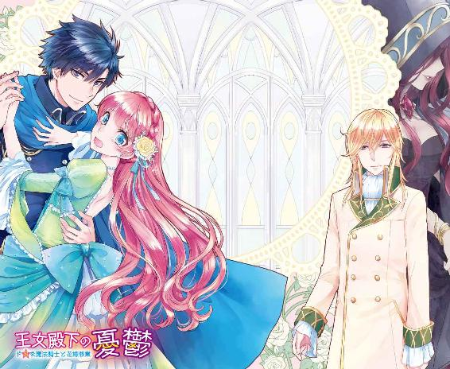
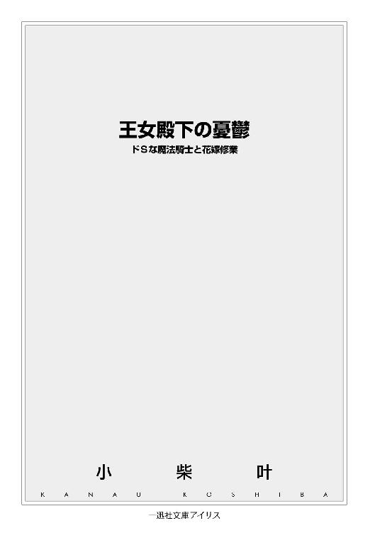
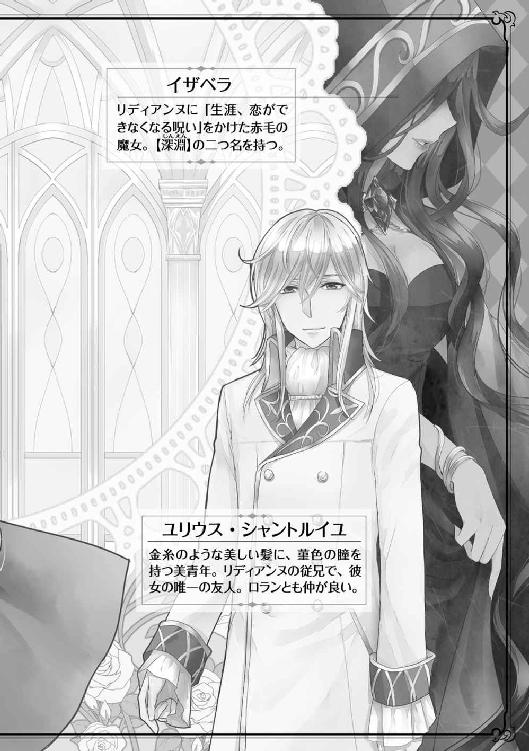
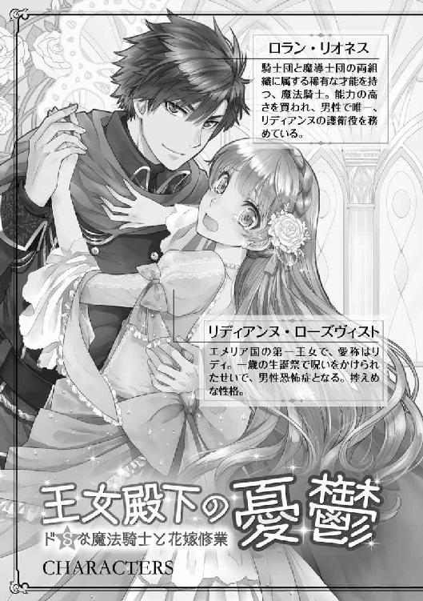
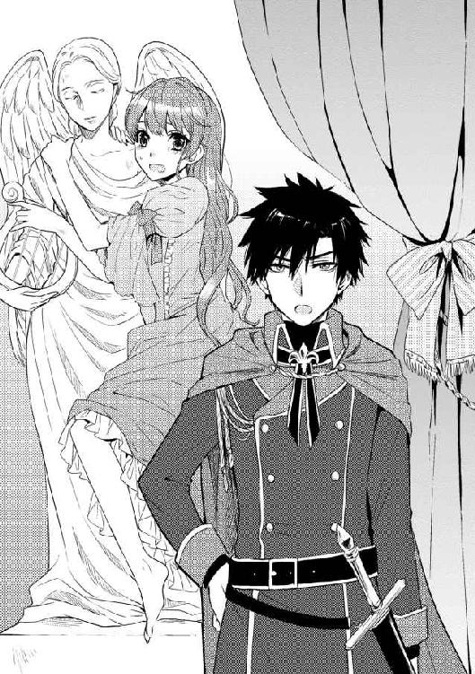
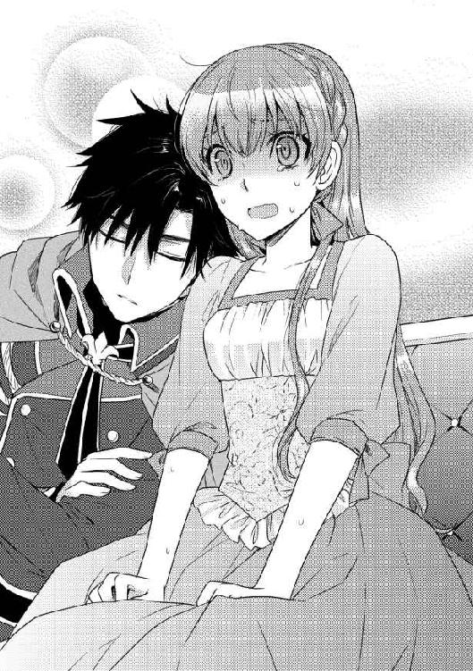
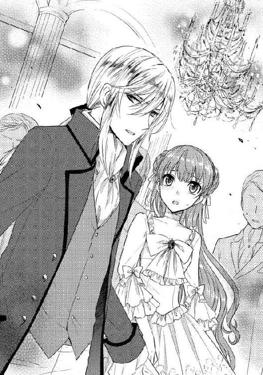
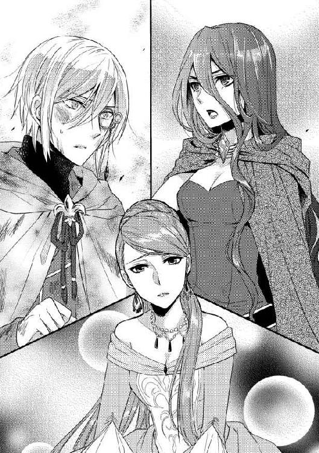
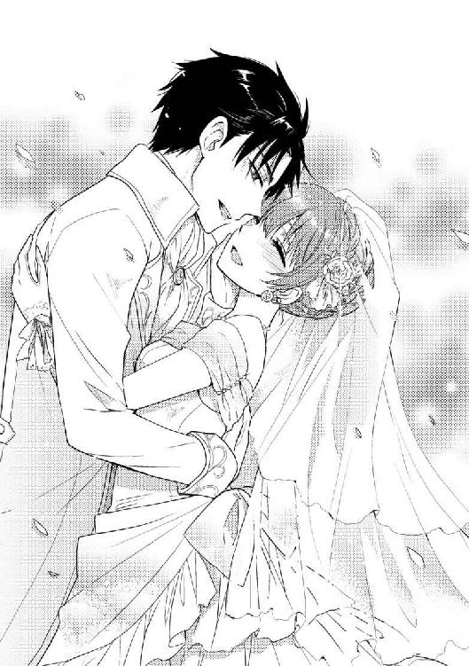

| 王女殿下の憂鬱 ドＳな魔法騎士と花嫁修業 (一迅社文庫アイリス) | |
| 小柴 叶 | |
| (2015) | |




イラストレーション ◆ みずのもと
王女殿下の憂鬱 ドＳな魔法騎士と花嫁修業
大陸で唯一の女王国、エメリア。
現在彼の国は、前代未聞の危機的状況に陥っていた。
「どうだ、マリアンヌ様は見つかったか!?」
「隊長、駄目です！ 城内をくまなく捜索しましたが、未だ発見に至っておりません！」
「く......っ！ 第一部隊は城内の捜索を続行、残る者は私に続け！ 草の根分けても必ずマリアンヌ様を見つけ出すのだ！」
王都ラーシアの北側にあるなだらかな高台に、女王の居城アリアローズが鎮座している。
白大理石から造られた、荘厳で気品溢れる優美な城だ。外観がこれだけ素晴らしいのだ。城内もさぞ美しく、清廉な空気に満たされているであろうと思われていた――が、本日のアリアローズ城内は、野太い怒号と慌ただしい軍靴の音が交錯していた。
「マリアンヌにも困ったものですわ」
屈強な騎士達が右往左往する中、現女王エルシーリアは手元に視線を落とす。
先ほど自ら封を切った手紙を見つめ、麗しの女王は堪えきれずに嘆息を漏らした。
「よもや、継承の儀の日程が決まった直後に家出をするだなんて......」
エメリア王家には独特の風習があった。
次期女王の婚姻が決まると、現女王はその座から退く。つまり、新たな女王は結婚式を挙げると同時に、戴冠式まで済ませなければならないのだ。
「陛下」
低く落ち着いた声音で呼ばれ、エルシーリアは伏せていた目線を上げる。眼前には側近でもある、宮廷魔導師団の副団長シルヴィオが立っていた。
「サンティエール侯爵が御見えです。マリアンヌ殿下の件が、御耳に入ったからかと思われますが......如何致しましょう？」
「書置きを読みましたが、継承の儀を執り行うのは厳しそうです。あの子の婚約者であるサンティエール侯爵には、わたくしから事情を説明して謝罪致しましょう」
「......マリアンヌ殿下の御婚姻を、破談になさるおつもりですか」
「花婿だけでは婚儀が成り立ちません。花嫁に逃げられたサンティエール侯爵も、さぞやお怒りでしょう。穏便に事を収めなければ王家へ牙を剥きかねません」
サンティエール侯爵が統治する領地は、シェンルーと呼ばれる先住民族の住処でもある。武芸に秀でたシェンルーの血を、彼の侯爵家も受け継いでいるのが厄介だ。友好関係を築くための縁談だったが、花嫁が遁走した時点で逆効果である。
これ以上先方の機嫌を損ね、万が一にも王都へ攻め込まれでもしたら事である。
「お言葉ですが陛下。新たな女王の即位は既に国中へ報じられております。継承の儀を中止になされては、エメリア王家に寄せられる民の信頼を損なう可能性が......」
「では、リディアンヌを次期女王にしろと言うのですか？ それこそ不可能であることは、あなたも重々承知しているでしょう」
「......そう、でしたね......」
十五年前、エメリア国に双子の姫君が生を受けた。長女はリディアンヌ、次女はマリアンヌと名付けられ、二人はすくすくと健やかに育った――一歳の生誕祭を迎えるまでは。
次期女王として多くの期待を注がれていたリディアンヌだったが、生誕祭で幼い彼女を待ち受けていたのは、甘いケーキや祝福の声などではなかった。【深淵】の二つ名を持つ魔女イザベラが、突如として強力な呪いをリディに掛けたのだ。
「イザベラが掛けた呪いの影響で、リディアンヌは異性を酷く恐れておりますわ。花婿と誓いの口付けもできそうにないあの子を、次期女王に擁立するのは最大の愚策です。マリアンヌのように、継承の儀当日に逃げ出されでもしたらどうするのですか」
「申し訳ありません。私に深淵の魔女を越える力さえあれば、リディアンヌ殿下を呪いの脅威から御守りできていましたし......このように、陛下が苦慮なされることもありませんでした」
沈痛な面持ちで俯いた側近に、エルシーリアは自身の失言に気付く。
「どうか謝らないで頂戴。あなたは呪われたリディアンヌのために、対抗魔法を掛けてくれたではありませんか。忘れもしません、『好いた者と必ず結ばれる魔法』でしたわね。他の魔法使いや魔女が呆けている中で、あなただけがリディアンヌを救おうとしてくれた。その想いに、どれほどわたくしが感謝していることか」
偽りのない本心を告げれば、【静謐】の二つ名を持つ側近は苦い笑みを湛える。
「一生、真実の愛を知らずに生きるのは辛いことですから」
「シルヴィオ――......」
哀切な眼差しになった主から、何事か言葉を掛けられるよりも早く。静謐の魔法使いシルヴィオは表情を改め、明瞭な声で告げる。
「さぁ、陛下。謁見の間へお急ぎ下さい。サンティエール侯爵が御待ちです」
私は先に戻り、侯爵の御相手をしております――と、シルヴィオは手にしていた白銀の杖で床を打ち、転移魔法の陣を足元に展開させる。淡い金色に輝く魔法陣が集束して消えると、シルヴィオの姿もエルシーリアの前から忽然と消えていた。
暫し無言で佇んでいた女王は、グッと拳を握り締めて姿勢を正す。
（今は、余計なことを考えている場合ではないわ）
解決すべき問題は山積みだが、真っ先に取るべき行動は決まっている。
こうして女王エルシーリアは娘の婚姻を破談にするべく、未だ騎士達の怒号が轟く城内を、謁見の間目指して足早に歩き出した。
「〜〜エメリア国第十六代女王エルシーリア陛下へ〜〜
この手紙をお母様が読んでいる頃、私は既に城から脱出しているでしょう。
ずっと、この窮屈な生活から抜け出したかった。私の意思なんかお構いなしで、リディお姉様の代わりに次期女王として育てられた十五年間――いつだって息苦しかったのです。
権力だけを目当てに、次期女王となる私へ媚を売る貴族達。仮面のように顔に張り付けた笑顔が不気味で、誰を信じて良いのかも分からなくなりました。私が初恋を知るよりも先に、見ず知らずの相手と結婚するように命じられた時は、絶望で本当に呼吸が止まるかと思いました。
私には選択する権利も――自由に恋をすることも、許されないのですね。
リディお姉様が羨ましい。鬱陶しい取り巻き達に愛想笑いをする必要もなければ、好きでもない相手と結婚する必要もないのですから。最初から、長女であるリディお姉様が次期女王になっていれば良かったのに......。
身勝手な言い分だと自覚しています。ですが、これ以上自分の気持ちを押し殺すことは、どうしてもできそうにありません。
苦しい思いを我慢してきた分、これからは自由に生きます。城の外の空気はきっと新鮮で、鬱屈とした私の気持ちを晴らしてくれることでしょう。この手紙を読んだ今でも、お母様が私を我が子と思って下さるのであれば、どうか探さないでそっとしておいて下さい。
十五年間、お世話になりました。
〜〜マリアンヌより〜〜」
＊ ＊ ＊
第二王女兼次期女王マリアンヌの失踪から、一日が経過した。
「......ごめんね、マリィ......」
豪奢な天蓋付きのベッド。こんもりと膨らんだ上質な絹の布団の中からは、「ひっく、ひっく」としゃくり上げるか細い声が漏れていた。
「あなたが家出するほど思い悩んでいると、気付けなかったお姉ちゃんを許して。私達は深い絆で結ばれた、双子の姉妹だったのに......っ」
ぼそぼそと後悔を口にしながら噎び泣いているのは、マリアンヌの姉――エメリア国の呪われし第一王女、リディアンヌ・ローズヴィストだった。
妹が家出したと母から知らされ、置手紙を見せられてからというもの、昨夜からこの調子で泣き続けている。
食事や睡眠もとれないほど傷心中の主を、第一王女専属騎士団のメンバーや、世話係のメイド達は静かに見守っていた。今は一人で思い切り涙する時だろうと、無言で気遣う者。慰めたくても、使用人の立場で王女に軽々しく口を利いてはならないと、厳しく己を戒める者。その心中は三者三様だ。
そんな周囲の配慮など知ったことかと、無遠慮な声が寝室内に響く。
「姫さん、昼飯用意できましたよ」
「......っ！」
次の瞬間、布団の塊がビクッと震えた。
メイドからの声掛けだったら、無反応で泣き続けていただろう。しかし、リディの鼓膜を震わせたのは、女性の声帯からは決して出ない重低音だった。そう――一歳の生誕祭で呪われてからというもの、存在自体が恐ろしくて堪らない男性の声だ。
「ほーう、無視ですか？ 昼食の給仕なんざ、俺の仕事に含まれてないんですがねぇ。珍しくサービス精神大放出したってのに、この仕打ちは酷いわー」
深淵の魔女イザベラから受けた呪いの影響で、リディは深刻な男性恐怖症に陥っている。
こうして、異性の声を聞いているだけでも身体が震えるほどだ。廊下で男性と鉢合わせただけでも、三秒で卒倒する自信があるので、ここ何年も自室に引きこもって暮らしていた。
（酷い仕打ちをしているのはどっちよ！）
私が男性恐怖症だって知ってるクセに、ノックもせず乙女の寝室へ入って来るだなんて！ 男性恐怖症ではない女性に対しても、失礼にあたる行為だわ――など等。リディは内心でこれでもかと憤慨する。
第一王女専属騎士団は【白百合】と呼ばれ、女性騎士のみで編成されている。男性の騎士を護衛として周囲に配置しては、リディの神経が衰弱してしまうだろうと、最大限の配慮が成された結果だ。――しかし、例外が一人だけ存在した。
五年前。王国主催の御前試合にて、武芸部門と魔法部門で同時優勝を果たした青年がいる。
彼の名前はロラン・リオネス。女王エルシーリアから実力を買われ、騎士団と魔導師団、両組織に籍を置く稀有な人物だ。ロランに与えられた【魔法騎士】という役職名も、今は彼しか名乗る者がいない。それだけ、武芸と魔法を同等に扱える者は少ないのだ。
深淵の魔女イザベラは、王城の地下牢に捕らえられている。だからと言って、今後もリディに呪いを掛けようとする不届き者の襲撃がないとも言い切れない。特別に結成した白百合騎士団も、男性が相手では力で圧倒される可能性もある。
そこで、あらゆる武術に優れ強力な魔法も使えるロランが、第一王女唯一の男性護衛役に選出されたのだ。
「そうか、そうか。こんなにも心優しい部下を、姫さんはあくまで無視するおつもりなんですね。あんまり意地の悪いことをしてると、しまいにゃ俺も泣きますよ？」
まぁ、嘘ですけど。
即座に自身の発言を撤回する飄々とした口振りに、プルプルと拳が震える。異性に対しての恐怖に加えて、デリカシーのないロランへの怒りが湧き起こった。
（意地悪なのはロランの方でしょ！）
今は、誰かと喋る気分なんかじゃないのに。
だからと言って、いつまでも自分がだんまりを続けていたら、この男は延々と部屋に居座り続けるだろう。こちらの気持ちを察していても、決してその通りにはしない。それが、ロラン・リオネスという人間だ。非常に〝良い性格〟をしている。
仕方ないとため息を一つ落として。
泣き濡れた顔を枕に押し付けたリディは、布団の中からもごもごと、
「......お願いだから、一人にして。食欲がないの......」
涙で潤む掠れた声で端的にそう告げた。
返答をしたのだから、これで無視したことにはならない。「さぁ、早く部屋から出て行って」と、リディが身を丸めて祈っている時だ。
「あー、すみません。俺、急に耳が遠くなったみたいです。姫さんが何言ってんのか、ぜーんぜん聞こえませんでした。――いや、違うか」
そこで、ロランの口調に変化が生じる。
やる気のない間延びした声音に、確かな愉悦の色が混じった。これは彼の中に存在する、ドＳスイッチが押された証拠だ。
途端、リディは蒼褪める......が、時既に遅し。
「姫さんの声が聞き取り難いのは、真っ昼間から布団なんかに包まって、いつまでもウジウジ泣いてるのが原因ですね。つーわけで、その邪魔な布団を剥ぎ取っちまいましょうか」
「ひいっ!? や、止めて！」
「えーっ、なんです？ 今、なんか言いました？ 声がちっさくてまーったく聞こえませんでしたよ。あぁ、昨日から飯抜いてるせいで、そんな蚊みたいな声しか出せないんですね？ 分かります、分かります。俺も朝飯くいっぱぐれた時の早朝訓練で、『もっと腹から声を出せんのか！』って上官に怒鳴られますから」
「ち、違うわ！ それ、まったくの見当違いだから！」
泣き過ぎて痛む喉から、ガラガラの声を絞り出して叫ぶ。今の音声なら、確実に聞こえているはずなのに、ロランは相変わらず「聞こえませんねぇー」と繰り返す。
この大嘘吐き！ と、リディは心の中で絶叫した。
「腹が減っては何とやら。いい加減、赤ん坊みたいにぐずってないで、飯くらい食いましょうよ。それとも、飯の食い方まで忘れちまいましたか？」
ふかふかの絨毯を踏み締めて、重い軍靴の音が近付いてくる。
「仕方がないですねぇ。一人で飯も食えない姫さんのために、俺が手ずから食事の方法を教えてあげますよ」
「ちょ、ちょっと待って！ こっちに来ないで！」
焦って悲鳴染みた声を上げるが、ロランの歩みは止まる気配がない。
それどころか彼は、とびっきり甘いベルベットボイスで、
「御所望ならば口移しで、最後まで綺麗に食べさせて差し上げますが？」
滅多に使わない堅苦しい敬語で、睦言を囁くようにそう言った。
普通の女性ならば一撃で魅了される台詞だろう。しかして、リディの反応はと言えば――それまで包まっていた布団から飛び出し、枕をしっかりと胸に抱えたまま、「ひぃぃぃっ！」と脱兎の如く部屋の隅まで逃げた。
「酷いわ、ロラン！ 私が男性恐怖症なのは知っているでしょう!? マリィが家出して悲しんでる時くらい、そっとしておいてくれても良いじゃない！」
大理石製の天使の彫像に縋り付き、極寒の大地に放り出されでもしたかのように、ブルブルと激しく震えている小柄な少女。

常ならば、毛先だけ緩く波打っているストロベリーブロンドの長い髪は、布団の中にいたせいで寝癖だらけ。愛嬌がある大きな明るい空色の瞳も、今日ばかりは真っ赤に泣き腫らされ、見ているだけで痛々しい有り様だ。皺が寄ったドレス姿の彼女こそ、ついさっきまでベッド上の住人だったリディである。
彼女の涙が滲む視界には、魔法騎士だけが着用する特別な軍服を纏った青年が映し出されていた。硬質な黒髪に、切れ長な紫紺の双眸。口さえ開かなければ実直で凛々しい騎士に見える彼こそ、先ほどからリディに軽口を叩き続けている犯人――ロランだ。
「本当に酷いのはどっちでしょうね？」
威嚇する猫のような様相の主に、半眼になったロランがあからさまに嘆息した。
「〝あれ〟を見た後でも同じことが言えたら、褒めて差し上げますよ。――姫さんの、性格の捻くれ具合をですが」
「あれって、何のこと？」
「居室へ行けば分かります。そのけったいとしか例えようのない、蝉の真似事に付き合わされてる彫像も迷惑でしょうから、さっさと移動してもらえますか？」
「こ、これは......っ！」
両手両足を使い、がっちりとしがみ付いていた天使像から勢い良く離れる。
気が動転していたとは言え、とんでもない醜態を晒してしまった。あやうく太腿が見えそうなほど、ドレスの裾が捲れ上がっている。なんてはしたない恰好をしているのだと、着衣の乱れを手早く直しながら、赤面中のリディは精一杯の弁解を行う。
「こっちに来ないでって言ってるのに、あなたが面白がって近付いてきたから！ 呪いの副作用のせいで、身体が勝手に動くんだから仕方がないでしょう！」
「面白がって近付く？ 嫌ですねぇー。そんなサディストみたいなこと、この俺がするわけないじゃないですか。主の体調管理も部下の務めですから。姫さんの断食を阻止できずに、栄養失調でぶっ倒れさせたら厳罰ものですよ」
「だ、だからって、あんな破廉恥なことを言うなんて......っ！」
「破廉恥なこと、ねぇ」
ふむ、と。ロランは思案顔になり、顎を撫で擦る。
「生憎と俺にはさっぱり心当たりがないんで、具体的にどんな台詞だったのか、姫さんの口から教えてもらえません？ そしたら、思い出せるかもしれませんよ」
「それは、その......食事を、く、口移しで......食べさせるとか......」
「俺、そんなやらしーこと言いましたっけ？ 姫さんの隠れた願望が、そんな幻聴を聞かせたんじゃないですか？」
「そんなわけないでしょう！」
リディが真っ赤な顔で叫べば、「冗談ですよ」と淡泊に返される。
「でも、まぁ――......」
掴みどころのない魔法騎士は紫紺の瞳を眇め、怒りに打ち震える主をじーっと見つめる。
やがてロランは、不意に口元を緩めた。さっきまでの意地悪な笑い方ではない。どこか安堵しているような、彼にしては非常に珍しい素の笑顔だった。
「ようやく、いつもの姫さんらしくなった」
「感傷に浸りたくても、あなたが邪魔するからでしょう」
「そりゃあ当然ですよ。殻に閉じこもって一人で泣かれるより、そうやって怒ってる姫さんの方が俺はよっぽど好きですから。どんな反応でも返ってくる分、安心できるんですよ」
（安心......）
――ってことは。
大きな空色の瞳をぱちくりと瞬かせ、リディはこてりと小首を傾げる。
「ロラン。あなた、もしかして......私のことを心配してくれていたの？」
率直に問うてみれば、今し方まで浮かべていた純粋な笑顔はどこへやら。ロランは不機嫌そうな半眼になり、徐に寝室の出口へと踵を返した。
「飯を食うにしても、身形を整えるのが先だな。メイドを呼んできますんで、姫さんは大人しく待っているように。また布団の中に潜り込みでもしたら、特別出血大サービスで、俺が直々に手取り足取り着替えさせますからね」
「そんなのサービスなんかじゃなくて、拷問染みたセクハラよ！ ......って、待ちなさい！ 私はまだ、質問の答えを聞いていないわ！」
「んじゃ、他の奴らに聞かれたら恥ずかしいんで、耳打ちの許可くれます？ 俺の悪戯心が突然うずいて、耳の中に吐息を吹き掛けたり、うっかり耳朶を甘噛みするかもしれませんが――構いませんよね？」
「構うに決まってるでしょうがっっ！」
ブワッと全身の毛穴が逆立ち、背筋を凄まじい悪寒が駆け抜ける。ロランに耳打ちされる場面を想像するだけでも、意識が遠退きそうになるのだ。実行されたら恐怖のあまり、泡を吹いて倒れるかもしれない。
どうしてこの魔法騎士は、年がら年中人のことをからかってくるのだろう？ 今日の冷やかしはいつもよりしつこくて――リディの堪忍袋の緒が、ブチッと見事に弾け飛んだ。
「そ、そんなの......」
ベッドから脱出する際に持ってきた枕を、渾身の力でぶん投げる。無論、標的はドＳな魔法騎士だ。しかし、全身全霊の反撃すら簡単にかわされ、
「枕投げは夜にするもんですよ。姫さんがお望みなら、今夜辺り俺が朝までお相手しますが？」
すかさず、おちょくりの言葉が投げ返される。
ムスッと頬を膨らませたリディが「結構よ！」と告げれば、ロランは「そりゃ残念」と肩を竦ませ、彼はそのまま寝室から出て行った。
（まったく、ロランったら！）
どんぐりを目一杯頬袋に詰め込んだリスのように、リディはぶすくれる。
（どんなに私が嫌がっても、話し掛けてくるのを止めてくれないクセに、自分に都合が悪い話題になると誤魔化してばっかり）
出会った当時から、彼の言動はまったく変わらない。
リディの護衛役となったロランは、毎日、他愛もない話題を主へ投げ掛けていた。
最初は異性との会話が怖くて、返事もできずに震えているばかりだったが――あからさまに怯えられても、粘り強く話し掛けてくるロランに対して、次第にリディは興味を惹かれた。
他の使用人達は身分を気にして、話し相手になってくれない。
それなのにロランは、「使用人と主」という垣根を軽々と飛び越えた。だからこそリディも、物理的な距離を縮めるのは無理でも、心の距離だけは......と努力をして、軽口を叩ける仲にまでなれたのだ。
（ロランは男の人だから、近寄られるのはどうしても怖いけど――......）
心配してくれたその気持ちは、性別なんて関係なく純粋に嬉しいと感じるのに。
「私の勘違いだったのかしら？」
膨らませていた頬から空気を抜き、ぽつりと呟く。
切なさが滲むその問いに、答えてくれる人物は誰もいなかった。
＊ ＊ ＊
第一王女専属メイドの控室の扉を、武骨な手で数度ノックする。
すると、自然に扉が開いて数人のメイドが顔を出した。髪型や顔立ちは違えど、全員が不安そうな表情を浮かべている。
「ロラン殿、姫様の御様子は如何でしたか？」
口火を切ったのは年嵩のメイド長だった。
彼女の問い掛けに、ロランは気だるげな声で手短に指示を出す。
「布団から出て、泣き止んでる今がチャンスだ。顔も髪も服も全部ぐちゃぐちゃだから、それなりに身形を整えてやれ」
「マリアンヌ様の件については......」
「その話題は絶対に出すな。これでもかってくらい茶化して、妹姫さんに向けられてた感情を、無理やり俺に向けさせてきたんだ。身支度が済む頃合いになったら部屋に行く。男の特権活かして、脅してでも飯を食わせてやる」
「承知致しました。ですが、くれぐれも度を越さぬように」
折り目正しく頭を下げたメイド長は、部下を引き連れてリディの自室へ向かう。
（城のお上品なやり方なんざ、俺のガラじゃねぇっつーの）
無人になった控室に入ったロランは、壁に背を預けて眉間を揉み解す。
本当はもう少し、リディの好きにさせておこうかとも考えた。けれど、徹夜で寝室の扉の前に立ち、護衛の役目に徹しているうちに――漏れ聞こえる泣き声があまりに痛々しくて、自分の方が耐え切れなくなった。
「なぁーにが、『心配してくれていたの？』だ」
前髪を無造作に掻き上げ、眠気を散らすようにガシガシと掻き毟る。
「心配したに決まってんだろ」
鈍感な姫君の問いに対する答えを、小さな声で零す。
昨日は久しぶりの非番で、一日中惰眠を貪る予定だったのに。夜勤の同僚に頼み込んで仕事を替わってもらい、一晩中リディのことを見守っていた。それもこれも、城の者達から遠巻きにされ続けている主を、独りぼっちにさせたくなかったからだ。
（......にしても、これからどうするかだよな）
大きな手のひらで額を覆い思案するが、答えなどとうに出ていた。
自分が取りたいと思った行動は一つ。下手を打てば、リディの心を今以上に追い詰めてしまいかねないが、これが最善の策であることだけは確かである。
（姫さんに腹を括らせる前に、俺が腹を括らねぇと）
万が一のフォローは依頼済みだ。
これからどんな事態が起きようと、〝あいつ〟に任せれば大丈夫だろう。飴と鞭で例えるなら、自分は非情な鞭にしかなれない。リディを甘やかして慰める役目は、根っからの飴気質の人間に頼むしかなかった。
（端から好かれてねぇだろうけど、今より嫌われるだろうな......）
昔から、嫌われるのには慣れている。
それでも、頭の片隅で考えずにはいられない。自分も素直に彼女を甘やかせられる、飴のような人間だったら良かったのに――と。
「まったく、損な役回りだ」
ぼそりと呟くと同時に、寄り掛かっていた壁から背を浮かす。あれこれ思考を巡らせているうちに、予定よりも長く控室に留まってしまった。
いくら悔やんだところで、一朝一夕で鞭が飴になることは叶わない。
――それなら、鞭にしかできないことを全うするまでだ――。
覚悟を決めたロランは、暮秋のひんやりと肌寒い廊下へ出る。彼の鷹を彷彿とさせる鋭い瞳からは、すっかり迷いの色が消えていた。
＊ ＊ ＊
ロランが私室から去った後、専属のメイド達がぞろぞろと現れた。
昨日から着たままだった皺々のドレスを脱がされ、淡いスミレ色のドレスに着替えさせられる。濡れタオルで丁寧に顔を拭かれながら、あっちこっちに変な癖が付いた髪もブラシで梳かれ、目の腫れを誤魔化すためか薄化粧まで施された。
手際良くリディの身支度を整え終わると、メイド達は深々と一礼して退室して行く。そして、彼女達と入れ違いで入室してきたのは......主の質問にも答えてくれない、慇懃無礼に定評がある魔法騎士だった。
再登場したロランの姿を見て、口から勝手に「ヒッ！」と引き攣った悲鳴が飛び出す。
「ご、ごめんなさい！ 今のは条件反射で......」
慌てて口元を両手で塞ぎ、リディはしおらしく謝罪する。
男性に対して過剰反応してしまうのは、呪いの副作用なのだから仕方がない。けれど、顔を合わせただけで悲鳴を上げられた相手は、決して良い気分にはならないだろう。だからこそリディは、自分が非礼な言動を取ってしまった場合、いつも素直に謝っていた。
「姫さんに悲鳴を上げられるのなんて、俺にとっては日常茶飯事でしょうに。事情は知ってるんですから、いちいち謝らなくても気にしませんよ」
「それは、そうなんだけど......男性恐怖症だからと言って、自分の間違った行いを正当化したくないの。相手の好意に甘えて許されてばかりいては、どんどん駄目な人間になってしまいそうで、私はそれがとても怖いわ」
「............」
己の掲げる信条を語ったリディを、面くらったように見つめるロラン。
「そういや姫さん、正義感だけは異様に強かったっけか」
「？ ロラン、何か言った？」
「いいえ、何も。それより、早く席に着いて下さい。飯の支度ならもう済んでますから」
リディが安心して食卓に着けるよう、ロランは壁際まで下がり距離を取る。
（おかしいわね。確かに、何か言っていたはずなんだけど......）
聞き間違いだったのかしら？
小難しい皺を眉間に刻んだリディは、いつも食事に使うテーブルへ向かう。
「まぁ......っ！」
ロランの言った通り、食事の準備は完了していた。
天井から下がるシャンデリアの光を反射する、絶妙な甘みが特徴のカボチャスープ。ふっくらと焼き上がったパンに、さっぱりとした酸味のドレッシングが掛けられたサラダ。白身魚のムニエルから、豚肉の香草焼き、デザートのアップルパイまで――、
（全部、私の好きなものばかりだわ）
誕生日でもないのに好物に囲まれ、喜ぶよりも先に困惑する。なんで、こんなご馳走が用意されているのだろう？
そんなリディの疑問を、ロランは簡単に見抜いていた。
「メイド達が、塞ぎ込んでる姫さんのために腕を振るったんですよ。美味い物を食って腹を満たせば、少しは元気になるかもしれないって、願掛けしながら作ってましたよ」
「そ、そうなの？」
「厨房の使用許可をもぎ取るまで、三時間以上入れ替わり立ち代わり、しつこく料理長を拝み倒したとか。白百合騎士団の連中も、妹姫さんが見つかれば姫さんが喜ぶだろうと、マリアンヌ様捜索に参加してますよ」
現実を受け入れられずに泣き明かしている間。自分の知らない場所で、自分のために行動してくれていた人達がいた。
思いがけない事実を知って呆然としている主に、ロランがニヤニヤと笑いながら問う。
「そういや姫さん、食欲がないんでしたよね？ これだけ豪華な飯、残したらバチが当たりますから、代わりに俺が食って差し上げましょうか？」
捻くれ者な彼らしい台詞に、リディは我に返って勢い良く頭を振る。
「ダメよ！ これは全部、私が食べるんだから！」
「はい、言質頂きました。これで『食欲がない』って抜かされてたら、俺は本気でこの料理、姫さんの口に捻じ込んでましたよ。いやぁ、命拾いしましたねぇー」
ロランに背後から羽交い絞めされた状態で、拷問――もとい、食事をさせられる光景を想像したリディは、海の底よりも深く後悔した。
エメリアの冬は短いが、寒さは他国よりも厳しい。国土の殆んどが盆地の中にあるため、北から吹き込む冷気の溜まり場となっているのだ。秋との別れを惜しむ今の季節から、早くも暖炉では赤々とした炎が舞い踊っている。
リディの私室にある暖炉でも薪が爆ぜ、パチパチと乾いた音を立てていた。室内が快適な温度に保たれているにも拘わらず、全身の毛穴がブワッと逆立ったのは、自らの首を絞めるような想像をしたせいだ。
（ぐずぐずしてると、想像が現実になっちゃう！）
慌てて席に着いたリディは、ナイフとフォークを手に取る。
ロランの親切を装った嗜虐趣味の標的にはなりたくない。それ以上に、料理を手作りしてくれたメイド達の気遣いが嬉しくて、急に胃袋が空腹を訴え出した。
（白百合の皆は、落ち込んでいる私のためにマリィを探してくれているのよね？）
最愛の妹の捜索を、他人に丸投げするなんて有り得ない。実の姉である自分も、何かしら協力しなくては！ 寝室をキノコ畑にする勢いで、ジメジメ泣いている場合ではない。
胃の中が空っぽでは頭の回転が鈍り、良案も思い付けないだろう。
不甲斐無い主に仕えてくれる、メイドや白百合騎士団のメンバー。彼女らの間接的な優しさに、これでもかと感謝をしたリディは、
「いただきます」
食事の開始を告げ、眼前に並ぶ料理を次々と口に運び出した。
料理長が作る食事と比べれば、見た目は歪で、味付けも薄かったり濃かったりする。それでも、今まで食べたどんな料理よりも美味しく感じられたのは――周囲の者達の優しさが、最高のスパイスとなった結果だった。
「ねぇ、ロラン。私もマリィを探しに行きたいわ」
最後の一口まで料理を堪能したリディは、食後の紅茶を一気に呷って唐突に切り出す。
壁に寄り掛かり、気怠げに足を組んでいた魔法騎士はと言えば、欠伸混じりに「ダメです」と端的に告げた。
「妹姫さんが家出したばかりなのに、姫さんまで城から脱走してどうするんですか。娘二人が失踪したなんて知られたら、女傑で名高い女王陛下はともかく、御父上のロレンツォ様が失意のあまりぶっ倒れますよ？」
「だ、脱走じゃないもの。あくまでお忍びでの捜索よ。城から抜け出したのがバレる前に、必ず戻ってくるわ。あなたなら、転移魔法が使えるでしょう？」
「なるほど。姫さんは俺を、第一王女誘拐犯に仕立て上げたいんですね。これで俺がクビになりでもしたら、故郷の家族が飢え死にするかもしれないんですが、責任は取ってもらえるんでしょうね？」
「うっ......」
そうだった。ロランが城で働いているのも、給金が飛び抜けて良いからという理由だ。稼いだ給料の殆んどは、故郷に残してきた家族へ毎月送金しているらしい。
妹を探したいと駄々を捏ね、彼とその家族を危険に晒すのはただの傲慢でしかない。
「ごめんなさい。私、あなたの事情も考慮せずに、軽々しいことを言ってしまったわ」
「まぁ、俺の家庭の事情は置いといて」
壁から背を浮かせたロランは、滅多に見せない真剣な面差しで尋ねる。
「姫さんは、妹姫さんをどうしたいんですか？」
「どうしたいって......これまで通り、一緒に生活したいだけよ。どこへ行ったのかは分からないけど、事件や事故に巻き込まれる可能性だってあるでしょう？ 手遅れな事態が起きる前に、早く連れ戻さないと！」
「でも、妹姫さんは自由を望んで城を出た。やっと逃げ出せた、苦痛しかない場所へ強引に連れ戻すことが、果たして妹姫さんのためになるんですかね？」
そこで、リディは妹の置手紙の内容を思い出す。
確かにマリィは、城での生活に息苦しさを感じていた。取り巻き達と接することで人間不信になり、愛のない結婚にも絶望したと言う。姉である自分を妹が妬んでいたと知った時は、激しい衝撃を受けたものだ。
妹の心情を考慮した上で、今の自分にできることはただ一つだった。
「......私、ダメね。いつも自分の都合ばかり優先してる」
辛そうに目線を伏せたリディは、自虐的に笑う。
城での生活は煩わしいことばかりで、上手く呼吸もできなくなった。だからこそマリィは、自由を求めて外の世界へ旅立ったのだ。
「本当にマリィのためを想うなら、あの子の望み通りそっとしておいた方が良いのよね」
城に戻ってきたら、再び妹は息苦しい生活を送らねばならない。
家出先で、不自由な想いをしていないだろうか？ もしかしたら、危険な目に遭っているかもしれない――など。胸中に湧き起こる不安は尽きないが、マリィが失踪したと知ってから初めて、このまま逃げ切って欲しいとも思えた。
新鮮な空気を胸一杯に吸い込んで。どこまでも続く空の下、自由の身になった妹が幸せに笑えているのなら、その幸せを奪う方が酷だと感じたのだ。
「随分と、冷静な決断を下しましたね。正直、『絶対に連れ戻す』と言い張って、泣かれるのも覚悟してましたよ」
「置手紙の内容を知らなかったら、そうしていたかもね」
意外そうに片眉を上げているロランに、リディは正直な想いを吐露する。
「私は第一王女なのに、呪いのせいで次期女王になれなかった。私が背負うはずだった責務も、すべてマリィへ押し付けて――......あの子が苦しんでいるのにも気付かずに、自分だけ平凡な毎日を過ごしていたのよ」
溺れるような苦しみを隠し、妹はこれまで立派に生きてきた。
対して、自分はどうだろう？ 生誕祭に受けた呪いの副作用のせいで、極度の男性恐怖症を発症してしまい、異性との接触を恐れて自室に引きこもっていた。
「妹姫さんの家出を見逃すなら、白百合の連中だけでも捜索から引き上げさせますが、姫さんは本当にそれで良いんですか？」
「正直、マリィがいなくなるのは寂しいわ。双子だからかしら？ 自分の半身が、どこか遠くへ行ってしまったみたいで、胸の奥が締め付けられて苦しいの。でも――今の私が感じている苦しみなんて、あの子が我慢し続けた苦しみとは比べ物にならないわ」
「そんじゃあ、次期女王は姫さんがなるんですね」
「......へ？」
一瞬、何を言われたのか理解できなかった。
ぽかんと気抜けした表情のまま、リディは小首を傾げる。
「私が次期女王って、どういうこと？」
「それ、本気で言ってます？」
素直に頷くと、ロランはげんなりと嘆息した。
「まずは簡単な問題です。姫さんは、女王陛下の王配が何人いるかはご存知ですよね？」
「お父様ただ一人だけよ」
「そうですね。今も昔も、エルシーリア陛下の王配はロレンツォ様だけでした。では、お二人が授かった子供は何人でしょう？」
「そんなの、私とマリィだけに決まってるじゃない」
一体、ロランは何が言いたいのだろう？
混乱が深まるばかりのリディに、「まだ気付かないのか」とロランが唸る。心の機微に疎いわけではないはずだが、妙なところで鈍感な困ったお姫様だ。
「エメリア王家直系の姫君は、あんたと妹姫さんだけだ。頼みの綱の妹姫さんを見逃すのは良いとして、次期女王は誰がなるんですかねぇ？ 言っておきますが、傍系の姫君は既に嫁ぎ済みだそうですよ。これじゃあ、姫さんしか次期女王候補がいないじゃないですか」
「あ......」
なるほど。気付けば他人事のように、ぽんっと手を打つ――が。見る見るうちに、リディの顔色が蒼褪めて行く。
「わ、私が女王になるなんて無理よ！」
「どうしてそう言い切れるんです？」
「継承の儀では、戴冠式と結婚式が同時に行われるのよ。戴冠式はともかく！ 男性恐怖症の私が、結婚なんて恐ろしい悪魔的な儀式に耐えられると思う？」
絶望と涙が滲む大きな瞳を向けられ、ロランは「ふむ」と顎に手を当て即答する。
「新郎の元まで辿り着く前に、バージンロードを歩くためロレンツォ様と腕を組んだ段階で、昏倒まっしぐらでしょうね」
「そうよ、そうなのよ！ こんな状態じゃ、お見合いをしても失敗するのが目に見えてるし、私と結婚してくれるお婿さんだって見つかりっこないわ。そ、それに――......」
青白くなっていたリディの顔色が、今度は茹蛸のように赤くなった。
ドレスの裾を掴み、暫しの間もじもじしていた彼女は、やがて蚊の鳴くような声で告げる。
「こ、子供を作るのだって、国主の大事な務めでしょう？」
「当然です。跡継ぎがいなければ、傍系の間で跡目争いが起きる。下手すりゃ、大規模な内乱に発展して......最悪、その隙を突いた他国から侵略されるんじゃないですかね？ 跡継ぎが多くても、それはそれで大変みたいですけど」
「私の場合、子作りなんて自殺行為に等しいわよ!? いくら未来の旦那様でも、同じベッドで毎晩一緒に眠っていたら、三日と持たずに初日で発狂するわ。子作り以前の問題よ！」
こうなりゃ自棄だ！
慎みの欠片もない言葉を一息で撒き散らし、より一層赤面したリディは、肩を上下させて大きな呼吸を繰り返す。そんな彼女とは対照的に、ロランは涼しげな表情を一ミリも崩さず、冷静に思考を巡らせていたらしい。
主の主張に耳を傾け、黙って逡巡していた彼は一言。
「でも、姫さん。俺とは普通に会話が成立してますよね？」
武骨な指先で顎を撫でながら、心底不思議そうにリディへ尋ねた。
「御父上のロレンツォ様ですら恐怖の対象になっている。それなのに、俺とは同じ空間に居られますよね？ こうして喋っていても、違和感なんてありませんし」
「それは、あなたの強引な性格のせいでしょう？ 男の人は苦手だから部屋の中には入ってこないでってお願いしても、『職務怠慢で減給されたくありません』とか言って、無断で室内に居座ったんじゃない。会話だってあれだけしつこく話し掛けられたら、いくら怖くても答える気になるわよ」
「それですよ」
ぶちぶちと愚痴っていれば、ロランが唐突に人差し指を突き付けてきた。
反射的に「どれ？」と喉元まで出掛けたが、リディが口を開くよりも先に、魔法騎士が饒舌に語り出す。
「俺の予想が正しけりゃ、姫さんの男性恐怖症は解呪するまでもない。異性と接触する頻度を増やせば、自力での克服が可能だ。そうじゃなかったら、今でも出会ったばかりの頃と同じように、俺を怖がってなきゃおかしい。違いますか？」
「た、確かに......」
使用人と主。周囲が「超えてはならない」と自重する中、その身分差を完全スルーした奇妙な人物。最初は「怖い、怖い」と訴える理性を抑え切れず、悲鳴を上げてロランの前から逃げ出したこともあったが、次第に逃走回数は減って行った。
それは偏に、リディがロランと仲良くなりたいと思ったからだ。
『なんか、面白いもんでも見えるんですか？』
貴族の子息や子女達に囲まれ、和やかに談笑しながら散策している妹の姿を、リディは窓からぼーっと眺めていた。その際、背後から投げ掛けられた言葉こそ、リディが初めて耳にしたロランの声だった。
政治的利用価値のない第一王女。
いつも独りぼっちで......常に誰かと一緒にいる妹へ、羨望の眼差しを送っていた。
（ロランが話し掛けてくれなかったら、今でも独りぼっちだったかも）
たった一人だけだが、リディにも『友』と呼べる存在がいる。しかし、その人物が城にやってくる頻度は、限りなく少ない。
異性に対する恐怖を必死に堪えてまで、話し相手が欲しかった。
それだけ、当時の自分は寂しがり屋だったのだろう。
「妹姫さんが家出したのは自分のせいだって、さっきまで姫さんは言ってましたよね？ 自分が最初から次期女王になっていたら、マリアンヌ殿下を苦しめることはなかった――と」
「そうだけど......」
「だったら、今からでも自分の責務を果たせば良い。継承の儀は三ヶ月後に執り行うと、国中へ報じてしまった後なんですから。今更、花嫁が逃げたせいで儀式を中止したら、民は王家に不信感を抱くでしょう。腹黒い御貴族様連中なんかは、これ幸いとあれこれ手を尽くして、女王陛下の失脚を企むかもしれません」
普段の奔放さからは考えられないほど、理路整然とありのままを語るロラン。
逃げ出すほど嫌な想いをしているのなら、妹のことはそっとしておこうと決めた。しかし、マリィの失踪で生じる問題は深刻なものばかりで――リディは気持ちの整理が追いつかず、椅子に座した状態で虚脱する。
「国を守るためには、私が女王になるしかないの？」
魂が抜け落ちたような声でロランに問えば、「そうですね」と容赦なく肯定された。
予想外な展開に直面したリディは、か細く震える両手で頭を抱える。
「だ、だけど......私、呪いのせいで男の人が怖くて......」
「男性恐怖症は問題じゃない。呪いなんざ試行回数で物理解除すりゃ良いんです」
「でも！ もし、上手く行かなかったら......」
「挑戦する前から、白旗上げて意味があるんですかねぇ？ 姫さんが女王になる決断を下さなけりゃ、妹姫さんの捜索隊は強化されるばかりですよ」
肺腑を空にするように。これでもかと大きくため息を吐いたロランは、リディに背を向けて歩き出す。
「正直、土壇場になって自分の役目を放棄した妹姫さんを、俺は無責任だと軽蔑します」
ですが――と、廊下へ繋がる扉の前で立ち止まり、
「何の努力もせずに逃げ出す臆病者の方が、一番の無責任じゃないんですかね？」
抑揚の失せた声でそう残したロランは、「護衛交代の時間ですので」と部屋から出て行く。
代わりの護衛騎士が入室してきても、メイド達が食器を片付けている間も。リディは抜け殻のように、ぼんやりと椅子に座っていた。
（......私が、女王......）
本来であれば、最も王位継承権に近いはずなのだが。
リディにはどうしても、自分が女王になる未来を想像することができなかった。
＊ ＊ ＊
翌朝。白百合騎士団の同僚から「姫様がお呼びだ」と告げられたロランは、冷え込んだ廊下をリディの私室目指して黙々と歩いていた。
（こんな朝っぱらから、何の用だってんだ？）
昨日は強く言い過ぎた自覚がある。てっきり避けられるものかと思っていたが、よもや、向こうから呼び出してくるとは――前代未聞の珍事だ。
女王になれと強要して退室した後、何となく自室に戻る気が起きず、白百合騎士団の隊舎に居座っていた。しばらくすると、怒気を露わにしたメイド長がやってきて、「姫様にどのような無体を働いたのですか!?」と問い詰められた。
何でも、食事の後からリディの様子がおかしいらしい。
またしても寝室に引きこもったお姫様は、泣くのだけは止めたようだ。その代わり、ぶつぶつと何事か呟いては、ベッドの上をゴロゴロ転がるという奇行を続けているのだとか。
（メイド長には、放っておけばすぐに疲れて静かになるって指示したけど......）
――明らかに俺のせいだよな。
間違ったことは言っていないが、物には言い様というものがある。何でまた、必要以上に厳しい言葉をぶつけてしまったのか？ かっちりとした表情をキープしたまま、曇天の胸中で一人反省会を開く。
やはり、鞭は損するばかりだ。
（俺が、飴だったら......ねぇ）
気持ち悪いだけだと自己完結すると同時に、リディの自室前へ到着した。
胸一杯に広がる罪悪感を力技で隅に押し込めて。気持ちを切り替えたロランは、重厚な樫製の扉をノックする。
「姫さん、入りますよー」
気まずさを紛らわせるためか、意図せず間延びした口調を使ってしまった。
返事を待たずに扉を押し開けて――不覚にも、思考が完全に停止する。
「待っていたわ、ロラン」
部屋のど真ん中。仁王立ちでロランを待ち受けていたのは、いつもの気弱そうな表情ではなく、勝気な笑みを浮かべたリディだった。
ストロベリーブロンドの長い髪を一部だけ編み込み、花を模した髪飾りを付けている。薄桃色のドレスはドレープたっぷりで、リボンやフリルも盛り沢山だ。化粧まで施した彼女は、淑女の完全武装で身を固めていた。
これから、パーティー会場に乗り込むような出で立ちだ。
「何すか、その恰好は......」
根性で思考回路を動かし、どうにか言葉を絞り出す。
ロランから向けられる怪訝な眼差しなど何のその。興奮気味に頬を紅潮させているリディは、薄くルージュの引かれた唇を動かした。
「私、女王になるわ！」
「......は？」
高らかに放たれた宣言に、またしても思考が停止する。
結婚が怖くて女王にはなれないと、あれほど拒絶反応を示していたのは誰だ。たった一晩のうちに、彼女の中でどんな超絶変化が起きたのだろう？
「ベッドから転げ落ちて、頭でも打ちましたか？」
無意識下で皮肉れば、「失礼ね」とリディが唇を尖らせた。
「ロランから言われて気付いたの。私はこれまで何の努力も必要としない、楽な生き方を選び続けてきた。その裏で、実の妹を苦しめていたとも知らずに......」
「......姫さん......」
「新たな女王が即位しなければ、国が傾く可能性もあるのでしょう？ 今まで、一度だって国のために行動したことはないけど――こんな情けない私にだって、エメリア王家の気高き血が流れているわ」
神妙な顔で俯いたリディは、そっと胸元に手を当てる。
己が身の内を走る、血潮の流れに耳を澄ませているのかもしれない。
「王族として生を受けたからには、国民を守る義務がある。私は十五年間も、その義務を放棄してしまったけど、やっと目が覚めたわ」
頬に淡い影を落としていた長い睫毛が、微かに震える。やがて、瞼の奥からゆっくりと現れたのは、澄み渡る空のような青。
昨日、涙雨を降らせていたのが嘘のようだ。
強い決意を宿した主の双眸に、ロランは身震いさえ覚えた。
「本音を言うと、男の人はやっぱり怖い。結婚なんて地獄に飛び込むくらいなら、一生独身を貫きたいって思うわ。でもね、あなたの言葉が頭から離れなかったのよ」
「俺、何か特別なこと言いましたっけ？」
「言ったわよ。何の努力もせずに逃げ出す臆病者の方が、一番の無責任だ――って。容赦無く胸に突き刺さって、ものすごーく痛かったけど......頭の中で何度も繰り返してるうちに、『その通りだな』って思えたの」
それは、徹底的に嫌われる覚悟で振るった鞭――の、はずだった。
（おいおい、予想外にも程があるだろ）
泣き虫で気弱な姫君が、こんなにも打たれ強かったとは。嬉しい誤算ではあるが、驚きの方が遥かに上回っている。
「私は臆病者だから、答えを出すのに一晩掛かっちゃったけど、逃げ出さずに最後まで自分と向き合ったわ」
気合を入れ直すため、リディは両手で柔らかな頬をパシッと叩く。
迷いのない眼差しをロランに向けた彼女は、凛とした声で命を下した。
「お母様に私の意思を聞いてもらうから、あなたも一緒に付いてきて頂戴」
「付き添いは、白百合騎士団の連中が適任では？」
「私の背中を押してくれたのはロランよ。あなたにも、私の決意を側で聞いて欲しいの」
情熱的な決意表明なら、さっきから十分過ぎるほど聞かされている。それでも、初めて共にいて欲しいとリディから望まれたロランは、いつもの軽口を封じて簡潔に返す。
「了解」
たった、それだけの一言なのに。
ロランの了承を受けたリディは、心から嬉しそうに笑う。
（ったく。大人びた顔をしたかと思えば、子供みてぇに笑いやがって）
あまり無防備に笑ってくれるなと、こっそりため息を吐く。リディのぽわぽわした笑顔を見ていると、無性にちょっかいを出したくて堪らなくなるのだ。
毎回のことながら、奇妙な衝動だと自分でも思う。
「ほら、姫さん。女王陛下の元へ向かいますよ」
善からぬ行いを仕出かす前に、入ってきたばかりの扉から廊下に出たロランは、準備万端の主に呼び掛ける。
履き慣れない高いヒールの靴で、長いドレスの裾を踏み抜かないように。慎重な足取りで三歩進んだリディは、何故かぴたりと立ち止まった。そのまま、根を張ったように動かなくなった主に、さしものロランも小首を傾げる。
「どうしました？ 体調が悪くなったんなら、医者を呼びますが」
「だ、大丈夫。私は身も心も至って健康よ！」
「それじゃあ、怖気付いて腰でも抜けましたか？」
歩みを止めた理由を根気良く尋ねるも、リディは首を横に振るばかりだ。
一体、何が彼女をこの場に引き留めているのか？ 本気でロランが困惑し掛けていると、申し訳なさそうに眉を垂らしたリディが、もそもそと口を開いた。
「あのね？ 付いてきてってお願いしたのは、私の方なんだけど......」
「やっぱり、白百合の連中に同行を頼みますか？」
「違うの！ そうじゃなくて......っ！」
「焦れったい。五秒以内に口を割らなきゃ、代理の同行者を呼びに行きますよ」
気が短い自分にしては、実力行使もせずに大人しく待った――が、我慢のし過ぎは身体に悪い。この状態が尚も続くようであれば、リディの付き添いは他の同僚に任せるべきだろう。そうでもしなければ、嫌がる彼女を無理やり担いで運びたくなる。
いーち、にー、さーん。
ロランが数字を数え出すと、目に見えてリディが慌て出す。暫し、「どうしよう、どうしよう」と慌てふためいていた彼女は、
「三メートル！」
――やけっぱちになって、謎の距離を叫んだ。
言葉の意味を計りかねたロランは、自然とじと目になった。胡乱な眼差しをこれでもかと注がれたリディは、真っ赤な顔で事情を説明する。
「えっと......女王になるって気持ちは、本物なんだけど。男性恐怖症克服の訓練とか、まだしてないでしょう？ だから、三メートル離れて付いてきて欲しいな......って」
戴冠式と結婚式を目指して、新たな女王になると決意したお姫様。
（その第一歩がこれかよ）
これから先、この調子で大丈夫かと不安になる反面。
少しくらい抜けている方がリディらしいと、ロランはひっそり笑みを零した。
＊ ＊ ＊
擦れ違う異性を避けに避け。
自室を出発してから一時間後、ようやくリディは女王の執務室へ辿り着いた。
うず高く積まれた書類の山と格闘していたエルシーリアは、護衛の魔法騎士を伴って訪れた娘に酷く驚き――「次期女王になる！」と決意表明をされ、更に度肝を抜かれた。
男性恐怖症のせいで、結婚なんて夢のまた夢。世継ぎを儲けるなんてとんでもない。だからこそ、長女のリディアンヌに女王の任は務まらないと判断を下し、次女のマリアンヌを次期女王として育てたのだ。
それなのに、長女自ら女王になると宣言をしたのだから、驚かないわけがない。
「異性と接する機会を増やし、男性恐怖症を克服する......ね」
詳しい説明を受けたエルシーリアは、執務机の傍らに控える魔法使いを振り仰ぐ。
「シルヴィオ、あなたはどう思いますか？」
女王の側近を務める【静謐】の二つ名を持つ魔法使いは、右目に掛けた、水晶の飾りが揺れるモノクルに触れる。これは、彼が深く思考する際の癖だった。
（うぅ......どうして私の身体は、大切な恩人にも拒絶反応を起こすのかしら）
十五年前の生誕祭の日。深淵の魔女イザベラから、「生涯、恋愛ができなくなる呪い」を掛けられた自分に、すかさず「好いた者と必ず結ばれる魔法」を掛けてくれた魔法使い――それが、現在では宮廷魔導師団の副団長も兼任している、静謐の魔法使いシルヴィオだ。
イザベラの呪いの効力が強く、シルヴィオの魔法は不発に終わった。けれど、大勢の人々が傍観するだけの中、自分を救おうとしてくれただけでもありがたい。
問題なのは、その大恩人の性別である。
直接感謝の気持ちを伝えようにも、相手はどこからどう見ても男性だ。声を掛けるのも恐ろしく、こうして姿を見たのも久方振りだった。
（それにしても、若いわよね......）
強い魔力をその身に宿す者は、肉体の老化を自在に止められるのだとか。ガクブルと震えながら、決死の思いで確認したシルヴィオの姿は、二十二〜三くらいの青年にしか見えなかった。
母の幼馴染だと聞いているが、外見の差が開き過ぎている。
（ロランも魔法使いだから、そのうち歳を取るのを止めるのかしら？）
若々しい姿を保つ魔法騎士と、年老いた自分を想像してみた。ワリと本気で「そんなのズルい」と思い、執務室の端で待機しているロランを睨む。いきなりガンを飛ばされたロランは、リディの三倍はある眼力で、「集中しろ」と暗に告げる。
目は口ほどに物を言うとはこのことだろう。
そして、数分後――。
「異性との接触を重ね、試行回数で呪いの作用を克服する。この案を出したのはリオネス、あなたですね？」
黙って思案していたシルヴィオが徐に口を開いた。
薄藍の眼差しを流されたロランは、手短に「はい」とだけ答える。「やはり」と呟いた静謐の魔法使いは、落ち着いた口調で語り出す。
「非常に強引ではありますが、リオネスの提示した手法での解呪は可能でしょう。しかし、通常の解呪に比べ、途方もない心的苦痛を伴うはずです。リディアンヌ殿下の御心が壊れてしまわれないか、気掛かりでなりません」
「わ、私なら大丈夫です......っ！」
慣れない異性に意見するのは怖かったが、リディは喉の奥から震える声を絞り出す。
「女王になると宣言したからには、どのような努力も厭いません。国を安寧へと導けるのであれば、私は呪いを克服する道を選びます」
「ですが――......」
気遣わしげに言葉を続けようとしたシルヴィオを、女王が片手で制した。
執務机に向かっていたエルシーリアは、椅子を引いて立ち上がると、楚々とした足取りで娘の元へ歩み寄る。
「リディアンヌ。王族が発する言葉は、音として紡がれた瞬間から重い責任を孕みます。途中で前言を撤回することは許されませんよ？」
レースの手袋に包まれた手が、両肩に乗せられた。僅かに腰を屈めて目線を合わせてきた母に、リディは真剣な面持ちで「承知しております」と頷く。
「必ずや解呪を成し遂げ、賢君と名高い母上のような女王になって見せます」
「......そうですか。止めても無駄なようですね」
そこで、エルシーリアの視線が素早く動いた。
リディと同じ空色の瞳が的確に捉えたのは、国内で唯一〝魔法騎士〟の称号を持つ青年だ。
「ロラン・リオネス。解呪法を提案したのは、あなたで間違いありませんね？」
「はい。俺が、リディアンヌ殿下に進言しました」
「ならば、あなたにも責任の一端があります。継承の儀が行われる三ヶ月後まで、リディアンヌの恋愛指南役となり、解呪の補佐を行いなさい」
「は......っ!?」
想定外の命令を受け、さしものロランも驚きの声を上げた。
「ちょ、ちょっと待って下さい！ 恋愛指南役とは何のことですか!?」
「完全に呪いを克服するまでは、一人の男性に対象を絞り交流を深めた方が、リディアンヌの負担が減るでしょう。その場合、普段から接点が多い者が適任です」
「その点は陛下の仰る通りですが、解呪の補佐役が恋愛指南までする必要はないはずです！」
「リディアンヌは色恋に関する知識など皆無でしょう。ですから、解呪の訓練と恋愛指南を同時進行することで、時間の無駄を極力省きたいのです。女王として人の上に立つからには、多方面にわたる分野の勉強も受けねばなりません。解呪にばかり、時間を割くことはできないのですよ」
淡々とした口調で説く女王の眼差しは、猛禽のように鋭い。
目付きの悪さならロランも負けていないが、今の女王を前にしては可愛いものだ。必死に威嚇する子猫と、百戦錬磨の獅子くらいには格が違う。
「異性との触れ合いは、恋愛に通ずるものがあるとわたくしは考えます。肉体的な接触のみならず、心理的な指導も取り入れることで、早期の解呪も見込めるのではありませんか？ 魔法の知識も有しているのですから、万が一の事態が発生しても対処可能でしょう」
「それは、そうかもしれませんが......っ」
「すべての条件を満たす人物は、リオネス――あなたしかいないのですよ」
姿勢を正してロランへと向き直った女王は、確かな威厳を感じさせる声音で言い放つ。
「ロラン・リオネス、勅命を以って命ずる。汝を第一王女リディアンヌの解呪補佐及び恋愛指南役に任命する」
女王の勅命。
どのような理由があれ、逆らえば反逆罪での処刑が待っている。
「......また勅命かよ。俺を城で働かせる時と、同じ手段使いやがって......」
「何か申しましたか？」
にっこりと、女王は無邪気な笑みで尋ねる――が、目だけが笑っていない。むしろ、「逆らったらどうなるか分かっているな？」と、視線だけで脅しに掛かってきている。
降参の意を示すように、ロランはその場に膝を付く。
「解呪補佐兼恋愛指南役の任、謹んで拝命致します」
口では優等生なことを言っているが、伏せられたロランの顔は酷かった。苦虫をこれでもかと噛み潰し、苦汁をありったけ呑み込まされたような、完全無欠の渋面をしている。子供が見たら、ひきつけを起こしかねないレベルだ。
ちなみに、リディが見たら泡を吹いて卒倒するだろう。
更に言えば顔なんて見なくとも、
（ロランが私の、解呪補佐と恋愛指南役......）
護衛の魔法騎士と、恋人のように接する自分の姿を想像したリディは、一瞬にして蒼褪め前のめりに倒れた。
女王への第一歩は踏み出されたばかり。
これからリディが歩む道のりは、初日から黒々とした暗雲が垂れ込めていた。
女王の執務室でぶっ倒れたリディは、昼を過ぎてようやく目を覚ました。
「ん......ここは？」
のそりとベッドから身を起こし、小さく欠伸をする。昨日は徹夜をしてしまったので、「もっと睡眠を寄越せ！」と身体が訴えてきたが、次いで響いた声に肉体の要望は吹き飛ばされた。
「自分の部屋が分からないほど、耄碌されましたか？」
「ひいっ!?」
慣れたくもないのに、聞き慣れてしまった皮肉。反射的に声がした方を振り仰げば、ベッドサイドにしかめっ面の魔法騎士が立っていた。
手を伸ばせば触れられる距離に、リディの意識が再び遠退き掛ける。
「さ、三メートル！ 離れて！ 離れて下さい！ お願いだからぁぁ――っっっ！」
半泣きでベッド端まで逃げると、枕を盾代わりに構えて叫ぶ。
またしても気絶されては堪らない。素直に主から距離を取ったロランだが、彼は仏頂面で不平を垂れる。
「受け身も取らずに倒れたから、起きるまで様子を見てたんですけどねぇ。いくら何でも、その反応は酷くないっすか？」
「うっ......ご、ごめんなさい」
「呪いのせいだって分かってはいるんですけど、俺の心は硝子よりも繊細ですからね。傷付いて廃人にでもなったら、どう責任取ってくれるんですか」
（そんなことにはならないと思うんだけど......）
ロランが繊細な人間の部類に入れば、世の中には繊細な人々が溢れ返ってしまう。どちらかと言えば、心臓に図太い毛が生えていそうだし――なんて考えたリディだが、実際に指摘しなかったのは賢明な判断だろう。
口に出したが最後、どんな報復が待ち受けているか分からない。
「まぁ、軽いジョークはこの辺にして」
右手の親指だけを立て、ロランが客室方面をクイッと指し示す。
「客人がきてますよ」
「えっ。私に、お客様......？」
誰だろうと悩み掛け、そんな人物は一人しかいないと気付く。
突然の来訪者の正体は、この世でたった一人の友人だろう。
ぱあっと明るい笑顔になったリディは、盾にしていた枕を布団の上に投げ置いて、いそいそとベッドから降りる。こうして城へ訪ねてきてくれたのは一月振りだ。
「お城にくるなら、事前に報せてくれたら良かったのに。美味しいお茶菓子とか、オススメの本を用意できたんだけど......」
足早に鏡台へ向かうと、髪の乱れを整え、服の皺も手早く伸ばす。
胸を躍らせ身支度を整えている主の姿を遠目に、
「俺のことは嫌がるのに、〝あいつ〟だと喜んで近寄るんだな」
ぼそりとロランが呟いたが、彼の声はリディの耳まで届かずに消えた。
＊ ＊ ＊
「やぁ、リディ。久し振りだね」
寝室から出てきたリディを笑顔で迎えたのは、来客用のソファで本を読んでいた青年だ。
長い金糸のような髪に、菫色の優しい瞳。甘いテノールボイスは聞く者を魅了し、更に甘い容姿は見た者を釘付けにする。メイドや白百合騎士団のメンバーが、「絵本から抜け出た王子様のようだ」と話しているのを、何度か聞いたことがある。
この麗しい貴公子こそ、リディにとって唯一の友――ユリウス・シャントルイユだ。
「本当に久し振りだわ。ユリウスは相変わらず、叔父様のお仕事を手伝っているの？ 少し痩せた気がするんだけど......大丈夫？」
ユリウスの父親は、リディの母の弟である。現在は公爵として、姉から与えられた領地を治めており、その名声はアリアローズ城にまで届いていた。
シャントルイユ家が統治する領土は広大で、処理しなければならない仕事も必然的に多くなる。次期当主の長男はもちろんだが、三男坊のユリウスまで視察に駆り出されたり、書類仕事を押し付けられたりしているのだとか。
ちなみに次男は、数年前に結婚して他家に婿入りしていたりする。
「そうやって心配してくれるのはリディだけだよ。まったく、父上とロイ兄さんは僕を何だと思っているのやら。早々と結婚したアラン兄さんの気持ちが、最近分かるようになったよ」
「叔父様達から頼られるのは、ユリウスの実力が認められているからよ。だけど、お仕事ばかりだと身体を壊しちゃうわよね？」
来客用の応接スペースから、きっかりと三メートル距離を開けて。リディ用のテーブルセットが配置されている。
物憂げな顔で専用席に座ったリディに、ユリウスが「僕なら平気だよ」と笑う。
「これでも暇な時は、騎士達に混じって剣稽古を積んでいるからね。体力には自信があるし、剣の腕だって昔よりも格段に上がったんだよ？ ――ロラン、今度試しに一勝負してみないかい？ 良い息抜きになると思うんだけど」
話を振られたロランは、興味なさげに肩を竦めた。
「あー、すみません。仕事以外の給料が発生しない肉体労働は、生憎と受け付けてないんですよ。いやぁ、申し訳ない」
「そう硬いこと言わずに。〝今回の報酬〟ってことでさ」
「あんた、綺麗な顔して良い性格してますね。......一回こっきりですよ」
「ありがとう。楽しみにしているよ」
ユリウスから蕩けんばかりの微笑を送られ、「茶でも持ってきます」とロランが退室する。去り際に見せた彼の表情は、心底げんなりしたものだった。
二人のやり取りを黙って見ていたリディは、ロランがいなくなると同時にユリウスへ問う。
「ねぇ、今回の報酬って何のこと？」
「それは秘密。リディに話したって知られたら、ロランと勝負できなくなっちゃうからね」
「むー......気になる......」
「こればっかりは、可愛いリディのお願いでも聞けないなぁ。ごめんね？」
第一王女の護衛を務める魔法騎士と、公爵家の子息。リディを介して知り合った二人は、仲が良い――と、思う。
社交性に富むユリウスが、何かとロランに絡んでいる印象が強いけれど。
（こんな友情の形もあるわよね）
絡まれるのが本気で嫌なら、慇懃無礼が代名詞なロランである。歯に衣を着せない物言いで、容赦なくユリウスを撃退しているはずだ。
二人だけの秘密を持たれるのは、仲間外れにされているようで面白くはないが。それでも、友情の輪が広がるのは良いことだ。
（私とユリウスが友達になれたのも、奇跡みたいなものだしね）
きっかけは、一枚のハンカチだった。
その日のリディも、窓辺から外の景色を静かに眺めていた。中庭方面へと急ぐ少年のポケットから、白いハンカチが落ちるのを目撃したのは、まさにその時で――勇気を千切れんばかりに振り絞った彼女は、「ハ、ハンカチ！ お、おお、落としましたよ！」と、窓を開けて懸命に叫んだ。
翌日、ハンカチを落としたと教えてくれたお礼だと、野花を持った少年が部屋を訪ねてきた。
最初の数回は贈り物を受け取るどころか、異性が部屋にやってきたとパニックに陥り、すぐさま寝室に籠城を決め込んだ。しかし、どんなに冷たい態度を取られても、少年はリディの部屋に通うのを止めなかった。
（改めて考えると、ユリウスとロランって似てるかも......？）
容姿はどちらも整っているが、与える印象や性格は真逆。そんな二人の青年だが、リディと仲良くなる過程は酷似していた。
怯える彼女が心を開くまで、根気良く待ち続けたのだから。
（意外な共通点を発見しちゃったわ）
無性にホクホクとした気分になり、自ずとリディは目元を和ませていた。
幸せそうな従妹の笑顔を見て、ユリウスもふっと口元を綻ばせる。
「どうやら、僕の出番はなさそうだね」
「？ 出番......？」
さっきから、意味が分からない話題ばかりが続く。
こてんと首を傾げるリディに、穏やかな眼差しでユリウスが語る。
「実は、僕が君に会いにきたのは、マリィが家出したって聞いたからなんだ。ショックのあまり、寝込んだりしていないか心配だったけど、その様子だと大丈夫そうだね」
「う......っ！」
寝込むというワードが、グサリと胸に突き刺さった。
実際、リディは胸元を押さえてテーブルに突っ伏す。効果は抜群だ！
「ほ、本当はね？ 昨日まで寝室にこもって泣いてたの......目が真っ赤に腫れるくらい」
卓上に顔を伏せたまま。リディはくぐもった声で、ありのままの事実を打ち明け出した。手にしていた本を閉じ、ローテーブルに置いたユリウスは、黙って彼女の声に耳を傾ける。
「布団から出られたのは、ロランのお陰――と言うか、脅し？ があったからなんだけど。でも、感謝しているわ。現実から目を逸らして、楽に生きて行こうとする私を、ロランは正しい道へ導いてくれた」
ゆっくりと上体を起こしたリディは、ユリウスの双眸を真っ直ぐに見据えた。
仲の良い従兄で、付き合いは長いけれど。気を抜けば異性への恐怖が首をもたげそうになるが、呪いの効力を懸命に抑え込みながら、明瞭になった声で真摯に告げる。
「ユリウス。私、新しい女王になるって決めたの」
「それも、ロランに導かれて出した答え？」
静かな問い掛けに、リディは緩々と頭を振った。
「きっかけをくれたのはロランだけど、女王になるって決意したのは、逃げずに自分と向き合った結果よ。この答えは、誰かに強制されたものじゃないわ」
「......そっか。でも、呪いはどうするんだい？ 男性恐怖症をどうにかしなければ、継承の儀も執り行えないよね？」
「そ、それなんだけど――......」
異性との接触数を増やし、根性で呪いを克服することになった件。ついでに、解呪法の提案者であるロランが、解呪補佐兼恋愛指南役になった流れをリディが説明する。
一連の成り行きを把握したユリウスは、乾いた笑いを零す。
「相変わらず、伯母上は剛胆な御人だね」
リディは髪や瞳の色、顔立ちまで母親のエルシーリアそっくりだ。けれど、似ているのはあくまで外見のみである。ぽやぽやした性格の方は、父親からまるっと受け継いでいた。
逆に妹のマリィは、外見は父親似。性格は母に似たと言われている。
「あーあ。何だか、ロランにばかり良いとこ取りされて悔しいよ」
長い脚を優雅に組み替えながら、珍しくユリウスが拗ねたようにぼやく。
「僕も魔法使いだったら、リディの恋愛指南役になれていたかもしれないのに。どうして僕には魔力が宿っていないのかなぁ？」
「魔法の才能を生まれ持つ人は、百人に一人くらいなんでしょう？ 魔法が使えない方が普通だと思うし......私の恋愛指南役になっても、ユリウスが嫌な思いをするだけだわ」
「そうかな？」
「だ、だって！ 修業中に何度も悲鳴を上げられたり卒倒されたら、良い気分なんて全然しないでしょう？ 拒絶反応を抑えきれずに、突き飛ばしたりするかもしれないし......」
女王になるためなら、どれだけ辛くとも呪いを克服してみせる。その意気込みは今も変わらないが、解呪の訓練中に何が起こるかは、リディ本人にもまったく予想できない。
――気分はまるで、調教前の猛獣にでもなったようで複雑だ。
「まったく。僕の気持ちはその程度じゃ揺らがないよ」
我知らず俯いていたリディは、微かな苦みが混ざったユリウスの声に顔を上げる。
彼はどこか熱っぽい眼差しで、こちらをジッと見つめていた。
「出会ってから今日まで、僕等は手を繋いだこともないだろう？ 君と触れ合う権利が与えられるのなら、いくらでも突き飛ばしてくれて構わない。全力で体当たりされても、優しく受け止めてあげるよ」
「ユリウス......」
彼の言葉は飴色に蕩ける蜂蜜のようだ。壮絶な色香が揺蕩う菫色の双眸は、視線を逸らすことを許さない。
堪えようのない感情が溢れ出した胸元を、リディは苦しげに両手で押さえた。
「ダメよ、ユリウス。そんなこと言われたら、私......っ」
ドキドキと、大きく心臓が脈打っている。
じんわりと潤んだ空色の瞳。瞬きを一つするだけで、真珠のような涙が零れ落ちそうだ。浅く切ない呼吸を繰り返すリディは、恋に目覚めた乙女のように見えた。
――が、恋する乙女にしては顔色がゾンビ色をしている。
「お願いだから、もう許して。これ以上あなたと見つめ合っていたら......私、不整脈を起こして倒れそう......」
理想の王子様と噂される美男子が相手でも、呪いは等しく効果を発揮する。
年頃の娘であれば、ユリウスと共にいるだけで頬を薔薇色に染め、甘酸っぱいときめきに胸を弾ませるだろう。しかし、リディは違った。ユリウスの色気はまさに蠱毒の如く、呪いの症状を一気に悪化させるのだ。
「はいはい、そこまで」
血の気が引いて頭がクラクラしてきた頃。
茶器と茶菓子を載せたワゴンを押して、ロランが気配もなく戻ってきた。
「ユリウス様、おいたが過ぎますよ。あんたの色気は常人にも毒なんですから、姫さんの前では自重して下さい」
「僕は別に、ありのまま振る舞っているだけなんだけど」
「......無自覚かよ。性質悪ぃ......」
呆れ顔で肩を落としたロランは、慣れた手付きで紅茶を淹れる。
（た、助かった......）
絶妙なタイミングで戻ってきてくれたと、リディは心の中でロランに感謝した。
濃密な色香を垂れ流すユリウスと二人きりでいたら、恐怖心で動悸が激しくなり続け、心臓が壊れていたかもしれない。
「ほら、姫さんの好きなアップルミルクティーですよ。これでも飲んで、少しは気を落ち着かせて下さい。日に二度も卒倒されたら、俺が各方面から袋叩きにされるんで」
「あ、ありがとう」
長い柄が付いた特注トレイに載せられたカップが、リディのテーブルに置かれる。
小さなピンクローズが散りばめられた、お気に入りのティーセットに、林檎好きなリディのために淹れられた紅茶。白い湯気と共に、ふわりと鼻腔を掠める林檎の瑞々しい香りが、無意識に強張らせていた身体から力を抜いてくれた。
トレイからカップを手に取り、火傷しないように注意しながら口を付ける。
（......なんか、不思議......）
悪ふざけで軽口を叩いたり、率直な厳しい意見をくれるロランなのに。
彼の淹れる紅茶はいつだって甘く、リディの心を癒すように優しく染み渡るのだった。
＊ ＊ ＊
本格的に空気が冷え込む夕暮れ時。
リディとの談笑を終えたユリウスを見送るため、ロランは彼と共に、茜色に染まった長廊下を歩いていた。
「派手に立ち回ったみたいだけど、結果的に上手く事を収めたみたいだね」
擦れ違う者がいない廊下に、ユリウスの柔和な美声が響く。
「リディを追い詰めるかもしれないから、フォローを頼むって手紙が届いたからきてみたけど、僕の出る幕なんてなかったよ」
「その件については、お手数をお掛けしました。姫さんの思考が、俺の予想を見事に裏切ってくれたものですから」
「まぁ、君からの手紙がなくても、僕はリディに会いにきていたはずだし。フォロー役の件については気にしなくても良いよ」
だけど――と続けたユリウスは、ぴたりと歩みを止める。彼の背後に付き従っていたロランも、底冷えする廊下で自ずと立ち止まった。
背中に流れる長い金髪をふわりとなびかせて。
ロランを振り返ったユリウスは、いつになく真剣な眼差しをしていた。
「リディの恋愛指南役に君が選ばれたのは、正直、妬ましくて堪らないよ」
「言っておきますが、俺は最後まで断ろうとしましたからね？ 横暴陛下が勅令なんか出してきたから仕方なく引き受けたんですよ。特別手当が出るわけでもない役目を、羨ましがらないでくれませんか？」
「そう言えば君は、金銭に異様な執着を持っていたっけ。でも、おかしいよね？ 特別手当なんか出なくても、君はリディを立ち直らせようと必死だったじゃないか。下手を打てば減給どころか、最悪、解雇されていたかもしれないよ」
――それだけの危険を冒してまで、リディのために行動した理由はなんだろうね？
夕陽が差し込む大窓を背にして。静かな口調でそう問うてきたユリウスの表情は、逆光のせいで窺い知ることはできない。
（俺に見せらんねぇような、ひでぇ面でもしてんのかね）
ポーカーフェイスを決め込むついでに、だんまりも決め込んだロランは、代わりに心の中で不躾な発言を炸裂させた。
質問に答える気配が皆無な魔法騎士に、ユリウスは微かに苦笑する。
「ごめん、意地悪を言ってしまった。これ以上君をいじめてしまうと、リディに嫌われてしまうかもしれないから、見送りはここまでで良いよ」
「俺を虐げたところで、姫さんの好感度に影響は出ないと思いますがねぇ」
「おや、ロランは被虐趣味でも持っているのかい？ 君が望むのなら、もっと意地悪を言ってしまおうかな」
「あ、歪んだお気遣いは結構です」
ただでさえ庶民出身と言うことで、騎士団や魔導師団での肩身が狭いのだ。擦れ違う見ず知らずの貴族共には、「下賤の輩」だの「目が腐るから視界に入るな」だの、幼稚な暴言を吐き掛けられる始末である。
被虐趣味持ちのドＳ魔法騎士なんて噂が立ちでもしたら、対等に接してくれる第一王女付きのメイドや、白百合騎士団のメンバーにまで白い目で見られるだろう。
お気をつけてと手まで振ってやれば、ユリウスは軽く手を上げて踵を返す。
「恋愛指南役の座は素直に君に譲るけど、これ以上の譲歩はしないよ。僕は必ず、リディを振り向かせてみせる」
歩みを再開させたユリウスの背が、徐々に遠くなって行く。
（安心しなよ、公爵家のお坊ちゃま）
現実は絵本と同じである。
善し悪しを問わず、魔法使いはお姫様と結ばれやしない。いつだって物語は、お姫様と王子様のハッピーエンドで終わるのだ。
（姫さんの隣に立つ男は、あんたみたいな王子様が似合う）
ユリウスの姿が見えなくなっても、ロランは廊下に突っ立っていた。
遣る瀬無いため息を吐いて、彼がリディの元へ戻ろうとした時――方向転換した先に、鳥の頭部を模したグリップが印象的なステッキを持つ、壮齢の紳士を発見する。
「リーオーネースー......」
（げっ）
地を這う声で名を呼ばれ片頬が引き攣った。
緩く波打つシルバーブロンドの髪が、怒りにうねっているように見える。にこにこと笑っているはずなのに、両目が仄暗く光を失っているのも恐ろしい。
（これまた、厄介な御人と遭遇したもんだ）
キリキリと胃が痛み出すのを感じながらも、平静を装った声で挨拶をする。
「これは、ロレンツォ様。ご機嫌麗しく......は、見えませんね」
「はっはっは、当然だろう。私は今、最高に腸が煮えくり返っているのだから」
どす黒い威圧感を放つ笑顔の紳士は、ロレンツォ・ローズヴィスト。
普段は青蘭宮で暮らしている、女王エルシーリアの王配であり――リディの実父だ。
「マリアンヌが行方不明なだけでも、私の心は捩じ切れんばかりに痛んでいると言うのに。リディアンヌまでもが、女王になると無茶を言い出したそうではないか。しかも、解呪補佐と恋愛指南役の双方に、お前が選ばれたと聞いたのだよ」
「先に言っておきますが、自薦じゃありませんからね」
「あぁ、エルシーが勅令を出したのだろう？ 女王の命とあらば、逆らう訳にも行くまい。ただ、お前がリディアンヌの〝初めて〟を奪うのかと思うと、無性にその頭をかち割ってやりたい衝動に駆られてしまってね」
暗黒微笑を湛えるロレンツォは、ステッキのグリップをそろりと撫でる。
（......そいつを、凶器にするつもりか......）
ステッキは鈍器ではないのだが。
――否。それよりも、眼前の紳士はとんでもない台詞を吐いていた。突っ込むべきはそっちだろう。
「あの、ロレンツォ様。俺はあくまで恋愛の指南役ですよ？ いくら何でも、姫さんに房事の実技講習なんかしませんって」
刹那。頬を掠めて飛んだステッキが、背後の壁にドスッと突き刺さった。
人畜無害そうな顔をして、随分と凶悪な腕力を持ってるもんだ。ロランが背中にじわりと冷や汗を滲ませていると、ゆったりと近寄ってきたロレンツォが、壁に付き立ったステッキを引っこ抜く。
その際、彼はロランの耳元で――、
「娘の純潔を穢せば、次に風穴が空くのは貴様の顔面だ」
異様にドスの利いた声で、残忍な脅し文句を吹き込んだ。
しかし、ここで怖気付いて口を閉ざすロランではない。「それでは......」と、彼は率直な疑問を繰り出す。
「姫さんの初めてって、他に何があるんですか？」
「あるだろう、数え切れないほど！」
右手に持ち直したステッキで、ロレンツォは床を何度も叩く。
分厚い絨毯越しに、ドガッと重苦しい音が聞こえた。激しい衝撃に耐えきれず床石が砕けたのだろう。「後で修繕を頼んでおくか」と、ロランは心の中で十字を切る。
そんな魔法騎士を尻目に、ロレンツォの暴走は続く。
「三メートル以内の空間に入り、同じテーブルに付く。ソファで隣に座ったり、ボードゲームに興じるのもありだ。手を繋いだり、腕を組んでの散歩。それにだな――......」
「あー......。つまり、これまで姫さんが行えなかった異性との接触を、解呪に必要だからと俺が慣らす。これらの過程が、『初めてを奪う』に該当する行為であると仰りたいので？」
「その通りだ！」
――なるほど。
一度納得してしまえば、確かにロレンツォの言い分は正しい。
これから自分がリディと行うのは、他の男達にはできなかった行為だ。従兄のユリウスはもちろん。実父のロレンツォさえ、呪われた後のリディに触れたことがない。
例えるならば、清らかな新雪の大地を最初の一歩で穢すような――......。
背徳と優越が入り混じった感情を抱き、ロランは我知らず喉を鳴らした。
「継承の儀に必要な訓練だと、私も理解はしている。故に、リディの解呪補佐と恋愛指南役は、お前に任せようではないか。しかし、下手な真似はするものではないぞ？」
「その点は重々承知しています。ここを首になりでもしたら、故郷の家族が飢え死に一直線ですから」
「今の言葉、決して忘れるでないぞ？」
ロレンツォがステッキのグリップを捻ると、カチッと小さな音が聞こえた。そのままグリップの部分を引けば、中から曇り無き白刃が現れる。
（あ。これ、ただのステッキじゃねぇわ）
ステッキの形をした、殴って斬れる万能武器だ。
一瞬だけ刃を見せたロレンツォは、すぐに刀身をステッキの中へ隠す。その、妙に手慣れた動作が気になったが、深く考えるのは止めておいた。
「お前が誓いを違えた時、その首を『きる』のは私の役目だ」
脅すだけ脅して満足したのだろう。ロレンツォは廊下の先にある、リディの私室をピンポイントで数秒眺め、やがて青蘭宮へと戻って行った。
またしても一人廊下に取り残されたロランは、ふらふらと穴が開いた壁に凭れ掛かる。
（今の『きる』は、ぜってぇ『切る』じゃなかった）
解雇なんて甘い手段ではない。実際に首を『斬る』という警告だ。
（あー、面倒臭ぇ......）
ユリウスもロレンツォも心配し過ぎだ。自分がリディを好きになるはずがない。彼女に想いを寄せたところで、叶わぬ恋だと分かり切っている。
お姫様と結ばれるのは王子様だけ。
田舎者の魔法騎士は、二人の幸せを祝福する脇役にしかなれないのだ。
新たな女王になると宣言してからというもの、
（九時からマナーの授業。五分の休憩を挟んで、十時半からは政治についての講義でしょ？ お昼ご飯を食べたら、えーっと――......何だっけ？）
リディは目が回りそうになるほど、多忙な毎日を過ごしていた。
一分一秒も無駄にしないよう、スケジュールはギッチギチに組まれ。体力と精神力をガリガリ削られてはいるが、濃密な時間に身を置くのは新鮮だった。知識が増え、身のこなしが洗練されて行くのも、今は楽しくて仕方がない。
ただし、中には憂鬱な〝お勉強〟もあるわけで。
（......解呪の訓練、今日もするのよね......）
他のレッスンとは違い、講師が女性ではない。現在、護衛役に徹している魔法騎士が、ビシバシ指導を行うのだ。
嫌だなぁ......と、思わず胸中で弱音を吐き、
「ふんぬっ！」
意思が脆い己を戒めるため、近くの壁に頭突きをかます。
小花の刺繍がちりばめられた、薄黄色のドレスを纏った姿は、どこからどう見ても可憐なお姫様なのに。色々と残念な光景だった。
（女王になるって決めたのは私よ。男性恐怖症を克服しない限り、継承の儀は行えないんだもの。嫌がるどころか、率先して受けるべき訓練よね！）
ロランだって女王の勅令を受けたから、嫌々ながらも指導してくれているのだ。ありがたいと感謝するべきであり、苦手意識を抱くなど言語道断である。
肝心の進行状況については、一進一退どころか、まったく好転の兆しは見えないが。
（今日こそ、三メートルの距離を縮めるわよ！）
気乗りしなかった解呪兼恋愛指南の修業にも、気合いを入れて前向きになった。
――が、彼女は気付いていなかった。
「リディアンヌ殿下......」
（しまったぁ！）
壁際の柱時計を確認すると同時に、九時を知らせる鐘が鳴り響く。恐る恐る振り返ると、逆三角形の眼鏡が良く似合う、マナー専門の女講師が呆然と佇んでいた。
突然、壁に頭突きを炸裂させたかと思えば、周囲の目も気にせず百面相で考えごとに耽る。淑女にあるまじきリディの奇行を、一部始終その目におさめていた女講師は、その日のレッスンを普段の三割増しで厳しくしたのだった。
＊ ＊ ＊
マナーの授業では、予期せず酷い目に遭ったものだ。
その後は失敗が尾を引くこともなく、順調に予定を消化できた――スケジュールの最後に組み込まれた、解呪兼恋愛指南の修業までは。
「姫さん、顔色がドドメ色ですよ。今日の訓練は中止にしますか？」
「ロランこそ疲れてるんじゃない？ 私の顔色は至って普通よ。この瑞々しいモチ肌がドドメ色に見えるなんて、目の錯覚としか思えないわ」
「なら、生まれたての小鹿並みに震えてる両足はどう説明するんですかねぇ？」
「と、東国には武者と呼ばれる、騎士みたいな役割の人々がいると聞いたわ。彼等は戦の前になると、戦場にどんな強者が居るかワクワクして、身体を震わせるらしいの。私もロランとの修業が楽しみだから、きっと武者震いが止まらないんだわ」
「......どっからそんな無駄知識仕入れたんですか？」
「お、乙女の秘密よ！」
咄嗟に叫んだが、なんじゃそりゃと自らに突っ込みを入れる。武者震いなんて、乙女が仕入れる情報ではない。
無茶苦茶な論理を展開する主に、ロランはやれやれとため息を吐く。
「どうでも良いですけど、武者の真似事なんかしてたら、今朝みたくマナーの講師に叱られますよ。それと、俺の忠告を無視した挙句に倒れても叱りますからね？ ......いや。この場合はただ叱るよりも、付きっきりで看病した方が罰になるか？」
最適なお仕置き方法を思い付いたロランは、ニヤリと口角を吊り上げる。
せっかく、精悍な顔立ちをしているのに。
無意識なのか、はたまた故意なのか？ 何にせよ、そのゲス顔は止めた方が良いと思う。色々と勿体ない。かと言って、ロランがユリウス並みに爽やかな好青年になっても、ある種のトラウマになりそうだ。
「――って言うか、私が倒れる前提なのはおかしいでしょう？」
修業用に用意した椅子にどっかりと座り、リディは大きく両手を広げる。
「さぁ、どっからでも掛かってきなさい！」
「やる気があるのは大変結構ですが、殺気を放つのは止めましょうね。決闘でも挑まれてる気分になりますから」
「私にとっては負けられない戦いなのよ！ 呪いの奴ったら手強くて......今日こそ、息の根を止めてやるんだから！」
そう言って息巻くリディを、「はいはい」と軽くあしらい。ロランは食事用のテーブルに、手のひら大の小瓶を置いた。
クリスタル製の小瓶は、蓋の部分が小鳥の形をしている。中には、薄紅色の小粒な丸い物体が入っており――こんな愛らしいものをロランが所持していたことに、リディは驚いた。
「ロラン、ごめんなさい。今まであなたの趣味に気付かなかったわ。これからは私の前でも、堂々と可愛い小物を使って頂戴。他の人には内緒にするから」
「違う、誤解です、早とちりするのは止めて下さい。これは、姫さんのために作ってきた術効のある飴です。俺が持ってる小瓶は、一つ残らず危険な薬品の調合に使ったんで、ここのメイドから丁度良い大きさのものを貰ったんですよ」
「な、なーんだ。そうだったの」
万年無愛想な魔法騎士が、実は少女趣味だった。
そんなスクープを期待していたなんて、口が裂けても言えない。ロランの機嫌を損ねてにじり寄られでもしたら、本日も呪いとの勝負に黒星が付いてしまう。危険な薬品の調合云々は、触れてはいけない話題な気がしたので安定のスルーだ。
「ほら、姫さん。場所交代して下さい。今日は俺が楽する番です」
「？ 修業の方法を変えるの？」
「うんにゃ。ただ単に、連日の立ちっ放しがキツイだけです。たまには姫さんも、案山子の気分を味わってみましょう」
立ちっ放しがキツイって、年寄りか！
そう突っ込みたいのを我慢して、リディは椅子から立ち上がった。
半径三メートル以内にロランが入らないよう、大きく迂回をしてお互いのポジションを変える。椅子に腰掛けたロランは、重たい軍靴を履いた長い足を組み、本当にくつろぎ始めた。そんな彼に、冷めた視線を送っていたリディだったが、
（そう言えば......）
テーブルの上を見遣れば、ロラン特製の飴が入った小瓶が置かれていた。
「ねぇ、ロラン。この飴は私のために作ったのよね？ 術効があるって言ってたけど、これを食べたらどうなるの？」
「気休めかもしれませんが、今回から苦手意識を封じる魔法を使おうと思いまして。今は魔法に頼ってでも、異性に対する免疫を多少なりともつけるべきです。修業を開始してから、ずっと足踏み状態ですし」
「じゃあ、この飴を食べたら男の人が怖くなくなるのね！」
「あくまで〝一時的に〟ですよ。飴だけじゃ呪いの効果に打ち負けそうなんで、同様の魔法を直接肉体に掛けますね」
少し眩しいけど我慢して下さい――と、短く前置きをしたロランは、リディに向けて右手をかざした。
彼が口内で何事か呟けば、リディの足元に緑色に輝く魔法陣が展開する。時計回りに回転する魔法陣からは、光の粒子を纏った風が螺旋状に吹き出し、ドレスの裾が捲れないように慌てて手で押さえた。
（この風が、男性恐怖症を封じてくれる魔法なの？）
快適な温度の室内でも、光り輝く緑風はほんのりと暖かい。なんだか良い香りもするし、緊張でガチガチに固まっていた身体から、余計な力が抜けて行く。
天井へ吹き上がっていた風の流れが止まると、床で回転していた魔法陣も消えた。
「はい、終わり。飴を一粒食べたら修業を開始しますよー」
「う、うん......！」
さっさとしなければ、魔法の効果が切れてしまうかもしれない。
キュポンッと小瓶の蓋を開け、薄紅色の飴を手のひらに一粒出す。魔法使いが調合した術効のある飴なのだ。見た目は美味しそうだけど、味は苦いんだろうなぁと覚悟していた。
しかし、口の中に放り込んだ飴は、
（......林檎......？）
意外にも、大好きな果物の味がした。
後味がスッキリとした甘みが丁度良い。さっきの魔法も綺麗だったが、調合でこんなに美味しいものまで作れるなんて、やはりロランは優秀な魔法使いなのだろう。
リディが飴を舐め終えると同時に、ロランはきつく両腕を胸の前で組んだ。
「これまでの修業では姫さんが椅子に座って、俺が距離を縮める役目でしたよね？ 今日はその逆で、姫さんが俺に近付いてきて下さい」
「......場所交換をしたのは、立ちっ放しがキツイからじゃなかったの？」
「あんなもん、冗談に決まってるじゃないですか。俺の足腰はそんなに柔じゃないですよ。それより、良いんですか？ 早く修業を始めないと魔法の効果が切れますよ」
「くっ！」
尊敬した途端にロランの株は大暴落を起こす。呼吸をするように嘘を吐くなんて、もはや、魔法騎士ではなく詐欺師の所業だ。
悔しそうに歯噛みするリディを満足そうに眺めながら、ロランは修業法を説く。
「ご覧の通り、俺は椅子に座ってまったり中です。手足を組んでるから、動けないのは分かりますよね？ つまり、今の俺はこれ以上ないほど無防備っつーわけですよ。他人に害を及ぼすなんて有り得ねぇ。奇襲を掛けられたらやられ放題のポーズです」
（確かに、その通りね）
足を組んでいてはすぐに椅子から立ち上がれないし、腕組みの状態では剣術はおろか、魔法も正常に扱えるか怪しい。――と言うか、ロランは本気でだらけている。
たとえ手足が自由でも、椅子に座った彼はだらだらし続けるだろう。
「苦手意識を封じる飴を食って、俺直々に同系統の魔法を上掛けしたんだ。その上、目の前にいる男は動く気配がない。憂いはできる限り排除しました。まずは一歩、この状況で距離を縮めてみましょう」
始め！ と、唐突な合図で解呪の修業が始まった。
（いつもの調子でふざけてるし、お母様から無理やり押し付けられた役目なのに......私のために、色々な作戦を考えて準備までしてくれたのね）
今度は気合いを入れるために、壁へ頭突きをかますなんて暴挙には出なかった。代わりに、痛いほど拳を握り締めて、ロランとの距離を縮めて行く。
だが、燃え上がる熱い想いとは裏腹に、リディの歩みはぴたりと止まる。
いつもと同じ、三メートルの距離で――......。
（ロランが何もできないのは見て分かるじゃない。どこに怖がる必要があるって言うの？ 私の心なんだから、呪いなんか無視して、私の感情にだけ従ってよ！）
胸の奥底から生じる黒々とした恐怖。
ロランが恐ろしいわけではない。この気持ちは呪いのせいだ。心の中で何度も己に言い聞かせ、後ずさろうとする足に力を込めて踏ん張る。
（たった一歩、踏み出すだけなのに......っ！）
強引に足を前に進めようとするが、身体が言うことを聞いてくれない。
怖い、こわい、コワイ。身の内で、得体の知れない恐怖がうるさいくらいに叫んでいる。ロランになら近寄っても平気だと諭しても、聞き分けのない魔女の呪いは荒れ狂うばかりだ。
額に滲んだ冷や汗が蒼褪めた頬を伝い落ちる。恐怖に気を取られるあまり、呼吸をするのもおざなりになってしまい、息苦しさから目の前が白み始めた。
（......これ以上は、駄目......っ）
気絶する前に一旦距離を取り、休憩を挟んで仕切り直そう。朦朧とする意識でそう判断を下し、リディが後ろへ足を引こうとした時だ。
「姫さん」
自分を呼ぶ低い声にハッとする。ぼやけた視界を前に向けると、魔法騎士の冴えた眼差しと目が合った。
今し方まで浮かべていた、嗜虐的な笑みはどこへやら。
彼は切なさを堪えるような表情で、静かに――だが、力強く語り掛けてくる。
「俺から歩み寄ろうとすると、あんたは逃げてばっかりだ。でもな、こうして普通に話せるようになったのは、あんたから俺に歩み寄ってくれたからなんですよ。姫さんが一人で呪いと戦ってなけりゃ、今も俺と口が利けないはずだ」
「！」
「あんたは強い。性悪な魔女の呪いになんて負けるわけがねぇ。つーか、俺も力を貸してやったんですから。負けたりしたら承知しませんよ」
最後の最後で、ロランはニヤリと口端を吊り上げて笑った。
嫌味な印象はまったくしない。むしろ、彼が紡ぐ言葉と相まり、激励の追い風が勢いを増して行く。
（本当に強いのはどっちよ）
いくら怖がられても諦めず。毎日、懲りずに話し掛けてきた人。
ロランがきっかけを作ってくれたから、自分は彼とまともに話ができるよう努力した。彼が何もせずにいたら、それこそ、今のような関係を築けていないだろう。
（今回も、ロランがきっかけを作ってくれた）
彼が掛けた二つの魔法。その存在を思い出すと同時に身体に異変が起きた。
口内に残る林檎の味が、恐怖の海に沈んだ心を掬い上げる。緑風の心地良い残り香は、怯えて竦んだ気持ちごと、身体を抱き締めてくれているようだ。
身も心も落ち着きを取り戻し、リディは大きく深呼吸をする。新鮮な酸素が取り込まれたお陰で、ぼやけていた思考と視界が鮮明になり、ブスブスと燻ぶっていたやる気の炎も、不死鳥の再臨の如く燃え上がった。
補佐役のロランが最善を尽くしたのに、当事者の自分が逃げるなんて情けない。
（ここまでお膳立てしてもらったからには、私だって本気で頑張らないと！）
今の自分は、一人で呪いと戦っているわけじゃない。ロランの力も借りているのだから、どんなに手強い呪いの効果にだって、絶対に打ち勝って見せる――っ！
きつく唇を噛んだリディは、握り締めていた拳へ更なる力を込める。
宿主が術効に対抗するつもりだと察し、呪いが負けじと恐怖心を煽り立てる。しかし、ロランの魔法に守られているという絶対的な自信が、リディの心を揺るぎなく支えていた。
（まずは、第一歩......っ！）
ダンッ！ と豪快な音と共に、右足が前に踏み出される。
（物凄く、怖い......けど、まだ行ける！）
額に張り付いた前髪を無造作に払い。二歩、三歩と着実に前進する。
足が竦み掛ける度に、「大丈夫、大丈夫」と呪文のように己へ言い聞かせた。ロランの魔法が守ってくれている。だから、絶対に大丈夫――と。リディは懸命に歩き続けていたが、その足が再び止まった。
異性への拒絶反応が限界突破したわけではない。
先へ進む必要がなくなったからだ。
「......どう？ 勝ったわよ......っ」
腰に手を当て見下ろした先には、椅子に座したロランがいる。
手を伸ばせば触れられる位置だ。ここまで男性と物理的な距離を縮めたのは、呪われてから初めての経験だった。胸や頭の中で不快な感情が暴れているが、理性を失い、逃げ出すほどでもない。
全身汗だくでドレスの生地が肌に張り付いているけれど。解呪の第一歩どころか、第二歩、第三歩――と、一気に事態が進展して清々しい気分だ。
「良く頑張りましたね」
胸の前で組まれていたロランの腕が解かれ、リディはびくりと肩を揺らす。しかし、彼女はこれまでのように逃げたりはしなかった。魔法の力が味方になっているのだから、もう少しくらいなら呪いの効果を抑え込めそうだ。
それに――......、
（ロランが、褒めてくれた）
絞り上げられた雑巾の如く、酷く捻じ曲がった性格をしているドＳ騎士のことだ。皮肉られるか、茶化されるか、どっちかだと思っていたのに。素直に送られた賛辞を受け、心の底に降り積もった恐怖心を押し退けて、確かな喜びが芽を出した。
ふにゃりと頬を緩めていると、ロランが軍服の内ポケットから何かを取り出す。
リディに用意されたものとは違う、翡翠色の飴が入った小瓶だ。
「薬品の調合ならお手のものなんですけど、飴を作るのは初めてなもんで。分量を間違えたから、自分用にも作ってみたんですよ」
「私が食べたのと色が違うけど、味も違うの？」
「気になりますか？」
返事をする代わりにコクリと頷く。
その際に生じた一瞬の隙を突き、ロランは小瓶から取り出した飴を一粒、リディの唇へ押し当てた。驚きの声を上げようとすれば、自然と飴が口内へ転がり込み、言葉を発する術を封じられてしまう。
空色の瞳を大きく見開き、もごもご飴を舐める羽目に陥ったリディに、
「俺の好きな味ですから、しっかり覚えて下さい。姫さんが無事に呪いを克服できたら、いくつでも、ご褒美で食べさせてあげますよ。飴の味なんか分からなくなるくらい、身も心も蕩けさせる口移しで――......」
ロランが必殺のベルベットボイスで飛び切り甘く囁いた。
次の瞬間。リディの心臓がバクンと大きく跳ねる。おまけに、口内で転がしていた飴玉も驚き余って、ゴクンと呑み込んでしまう。
小粒な飴で良かった。もう少し大きかったら、喉に詰まらせていたかもしれない。
無論、ロランの好きな味も分からずじまいだ。
「おっ、今のを聞いても卒倒しなかったんですね」
拒絶反応が悪化する前に、「良い兆候だ」とロランの方から距離を取った。
ついに膝から力が抜けたリディは、真っ青な顔色で不平を垂れる。
「い、いきなり不気味なこと言い出さないでよ。心臓が破裂するかと思ったじゃない」
口の悪さにさえ目を瞑れば、ロランは硬派な美男子にしか見えない。
そんな彼から、睦言のような台詞を吐かれた日には......恐ろしさのあまり、心拍数が急上昇して死んでしまう。
「俺だって柄じゃないこと言ったせいで、全身に鳥肌が立ってますよ。腕とか背中とか、マジでヤバいことになってますから。見ます？」
「結構よ！ ――と言うか、自分もダメージ受けるくらいなら、最初から言わなければ良かったのに。私の心臓だって無駄な負担が掛からずに済んでいたわ」
立派な女王になるよりも先に、寿命が縮みきったらどうしてくれるのだ！
ふくれっ面で抗議する主に、ロランは「やれやれ」と半眼になる。
「その様子じゃ、俺が恋愛指南役も兼任しているのを忘れてますね？」
「あ」
そうだった。解呪の修業が足踏み状態だったので、ロランが恋愛指南も任されている事実だけ、綺麗に頭から抜け落ちていた。
「俺の迫真の演技はどうでした？」
「真に迫り過ぎよ！ 鳥肌なんて次元軽く飛び越して、蕁麻疹出るレベルだったじゃない！」
「やるなら徹底的にが俺の座右の銘なんで。今の仕事を首にされたら、大劇場の劇団員でも目指してみますかねぇ」
「まずは首にならない努力をしなさいよ......」
的を射たリディの指摘をさらりと聞き流し、ロランは柱時計を見遣る。
「おっと。護衛交代の時間になるんで、本日の解呪訓練と恋愛指南はこれにて終了。時間外労働は御免被るので、白百合の連中に引き継ぎをしてきます」
「待って！」
いそいそと部屋から出て行こうとするロランの背中へ、咄嗟に制止の言葉を叫ぶ。
肩越しに振り向いたロランに向かって、床にへたり込んだ状態のまま、リディはぺこりと頭を下げる。
「今日は魔法を掛けてくれてありがとう。ロランが力を貸してくれたから、私も『負けるもんですか！』って、頑張ることができたのよ。あなたは最高の魔法使いね」
柔らかなストロベリーブロンドの髪をふわりと揺らして。顔を上げたリディは、花のように可憐な微笑を湛えていた。
彼女の笑顔を暫し無言で見つめていたロランは、パッと顔を進行方向へ戻す。
「一国のお姫様が、軽々しく臣下に頭を下げるもんじゃないですよ。お利口さんな俺は分を弁えてますけど、中にはここぞとばかりにつけあがる連中がいるんですから」
あと......と続けた彼は、とんでもない爆弾発言を投下する。
「俺、姫さんに魔法なんて掛けた覚えはありませんよ」
「えっ？」
「あぁ、語弊がありました。ただの風を起こす魔法なら使いましたが、それ以外の魔法は何一つ使ってません。特に封印系統の術は一気に魔力持ってかれるんで、特別手当でも付かない限り、そう簡単に発動したりしませんよ」
「う、嘘......よね？」
だって、林檎の味がする魔法の飴は、恐怖心を和らげてくれた。ふわりと身体を包み込んだ薫風も、優しい温もりで挫けそうになる気持ちを支えてくれたじゃないか。
風を起こしただけなんて有り得るわけがない。
「残念ですが、俺の心は魚が住めないほど澄み切ってるんですよねぇ。平気で嘘を吐く心が醜い輩と一緒にしないでもらえます？」
わざと拗ねた口調でそう言い、ロランは廊下へ続く扉のノブに手を掛ける。
「俺がしたのは、姫さんが好きな林檎と鎮静作用のあるハーブで飴を作って、リラックス効果満点の花の香りを風でぶちまけたくらいですよ。いわば、緊張を解く手伝いですね」
「それじゃあ、私......魔法に掛かっていると思い込んでいただけなの？」
「御名答。俺の側まで辿り着いたのは、魔法の力があったからじゃない。姫さんが一人で出した成果ですよ」
盛大な種明かしを終えたロランは、「お疲れ様でしたー」と部屋から出て行った。
目と口。両方を大きく開いて唖然としていたリディは、扉が閉まる音でハッと我に返り、全身をわなわなと震わせる。
（心が澄んでいて、嘘が吐けない？）
どの口がほざく！
魔法を掛けると宣言しておきながら、実際は魔法なんて掛けていなかった。この行為が嘘でなければ、嘘の定義を根底から検証しなければならない。
平然と嘘を吐いた上で、自分は嘘吐きじゃないと言い切るとは――。
「劇団員より、詐欺師の素質があるわよ......」
不貞腐れたリディは不作法上等とばかりに、絨毯の上へ寝転がる。
身体が重い。力技で呪いに対抗しているのだから、肉体が疲労するのは当然だ。今日は無茶をし過ぎたので、気が抜けた途端に激しい眠気にまで襲われる。
（悔しいなぁ......）
こっくり、こっくりと舟を漕ぎながら思う。
ロランの側まで辿り着けたのは、自分の力だけじゃない。いつものように逃げ出そうとした時、「姫さんは強い」と背中を押してもらった。
彼の言葉がなければ、〝偽りの魔法〟の存在も思い出せていなかったはずだ。
（......もう、嘘吐きでも何でも良いわ......）
初めて縮まった、異性との間に生じる三メートルの距離。
どんなに嘘を吐かれても、ロランが解呪の第一歩を踏み出すきっかけをくれたことだけは、誰にも覆せない真実だった。
（俺としたことが、とんだ凡ミスしちまった）
メイドの控室の隣にある、こじんまりとした白百合騎士団の隊舎（？）へと向かう途中。何気なく探った内ポケットから、自室の鍵が消えているのに気付いた。
上手くリディの部屋から脱出できたと安堵したのも束の間。
ロランは俯きがちに、きた道をとぼとぼ引き返している。
（落としたとしたら小瓶を取り出した時だよなぁ。あー、だせぇ......）
キザったらしい台詞を言うだけでも精一杯だったクセに。何でまた慣れないアドリブを入れた？ 数分前の自分が突発的に起こした暴挙のせいで、現在の自分が甚大な迷惑を被っているではないか。
恋愛に免疫がないのは、なにもリディだけではない。
年配者ばかりの寂れた村で育ったロランも、色恋関係に耐性がなかった。今回囁いた口説き文句も、城の書庫から借りてきた恋愛小説の台詞をいくつか抜粋して、自分なりにアレンジしたものだったりする。
（どんな面して、姫さんと会えば良いんだよ）
ご褒美の飴を与えた際。指先がほんの少し、丹花の唇を掠めた。柔らかくて温かい感触が残された指先が、先ほどからじんじんと熱を発して困る。
しかし、指の熱なんて普段通り振る舞っていれば誰にも気付かれない。
最大の問題は他の場所にある。
（もうすぐ冬だってのに、あっちぃ......）
解呪の訓練が無事成功して、リディからお礼を告げられた。
その時、彼女が見せた笑顔が脳裏に焼き付いている。
蒼天を閉じ込めたような瞳は優しく細められ、赤く上気した頬は彼女の好物である林檎を彷彿とさせ、かぶりつきたい衝動に駆られた。きっと、本物の林檎よりも甘美だろうと無意識下で想像し、喉が酷く渇いたのを覚えている。
（なんて顔で笑うんですかねぇ、俺の姫さんは）
咄嗟に顔を背けたので、己の醜態をリディに目撃されてはいないだろうが、顔面に集まった熱は一向に冷めない。
そんなこんなを考えているうちに、リディの私室前に到着してしまった。
（こうなったら見せてやろうじゃねぇか。大劇場の劇団員にも引けを取らない、俺の完璧な演技力を！）
片手でパタパタと顔に風を送り、気休め程度だが熱を飛ばす。深呼吸をして気を静めたロランは、意を決して眼前の扉をノックした。
「姫さーん、落し物したんで取りにきたんですが」
崩れたポーカーフェイスを修復しながら返事を待つが、物音一つ聞こえてこない。
奇妙な静けさに違和感を抱く。一瞬にして表情を険しくしたロランは、どこか切羽詰った声で、再度室内へ声を掛ける。
「姫さん、いないんですか？ 返事しないと開けますよ？」
三秒待ったが答えがない。ので、ロランは宣言通り扉を開けた。
すると、部屋に入ってすぐの客室――今では各種講義にも使われている部屋の床に、小柄な主が倒れているではないか。
「リディ!?」
驚いた弾みで、主を愛称で呼んでしまった。
相変わらず彼女は返事もせず、倒れた状態のまま身じろぎもしない。
予想外の事態に直面したせいで、思考は停止しているのに。日頃から鍛錬を重ねている身体は自然と動いた。
（一体、何があったってんだ!?）
形振り構わず駆け出したロランは、あっという間にリディとの距離を詰める。そして、床に横たわる主の傍らに跪いた。
奇襲でも受けたのだろうか？ とにかく、怪我の有無を確認しなければ。襲撃者が魔法使いの場合、新たな呪いを掛けられた可能性もある。
焦りそうになる気を無理に落ち着かせ、ロランが冷静な判断を下していると、
「うーん......むにゃ、むにゃ......」
間抜けな寝息が聞こえてきた。
ビシッと動きを止めたロランは、落ち着いてリディの様子を窺う。
穏やかな呼吸に、目を閉ざした表情も至って健やかだ。独特の鉄臭さもしないので怪我はないだろう。魔法を使用された形跡も見受けられない。つまり――......。
（寝てるだけかよっ！）
痛いくらい張りつめていた緊張の糸が切れ、ガックリと勢い良く項垂れた。
窓辺には猫足の豪華な寝椅子がある。たった数歩の距離なのだから、もう少し睡魔を我慢すれば辿り着けただろうに。いくら絨毯がふかふかだろうと、床で寝たら翌日には全身が悲鳴を上げて、動けなくなること間違いない。
「――ったく、驚かせやがって」
だらしなく緩んだリディの鼻を、ムニッと軽く摘まむ。
かなり深く眠り込んでいるようだ。目を覚まさないのを見て取ったロランは、リディの小さな身体をひょいっと横抱きにする。慣れた足取りで寝室まで運ぶと、天蓋の紗を無造作に払いのけ、ベッドの上へそっと下ろす。
（ぜってぇ、五年は寿命縮んだぞ......）
甲斐甲斐しく布団を掛けてやり、何気なくベッドの端に座る。
手触りの良いストロベリーブロンドの前髪を梳き、薔薇色の頬へ指先を滑らせた。手のひら全体で包み込むように触れると、じんわりと温もりが伝わってくる。
――生きている。
改めてリディの無事を実感したロランは、長いため息と共に胸を撫で下ろす。
「最初に見つけたのが俺で良かったですね」
メイドや白百合騎士団のメンバーだったら、床で寝ているリディを揺り起こしていただろう。メイド長辺りは、「慎みが足りない」と説教するだろうし、マナーを教える講師の耳に入ればどうなるか。
こってり油を絞られるのは、火を見るよりも明らかだ。
（不味いな......ロレンツォ様が言ってたこと、あながち間違いじゃねぇぞ）
彼女から近寄られたのも。こうしてベッドに運んだり、無防備な寝顔を堪能するのだって、異性では自分が初めてだろう。
胸の内へ広がりかけた優越感に蓋をして。
己の心からも目を逸らしたロランは、ベッドのスプリングを微かに軋ませて立ち上がった。
「ゆっくり休めよ、姫さん」
最後にクシャリと頭を撫で、自室の鍵を探しに客室へ戻る。
気持ちは上手く誤魔化せたとしても。
手のひらに残る姫君の体温は、なかなか消えてはくれなかった。
＊ ＊ ＊
光源は、数少ない燭台に灯された蝋燭の灯りだけ。
堅牢な鉄格子と、いくつもの錠が掛けられた牢の中。二十歳を超えたばかりと思われる女が、複数の魔法陣から伸びた鎖に繋がれていた。
「......どうやら、悪足掻きを始めたようね......」
床に付くほど長い燃え立つ炎を連想させる髪の奥で、緩々と瞼が開かれる。
現れた黒曜石の瞳は鈍く淀んでいた。
「大人しくしていれば良いのに......あたしの呪いを解こうとするなんて、随分と生意気に育ったものね......」
あぁ、なんて可哀想なお姫様。悪い魔女が生きている限り、王子様とハッピーエンドは迎えられない。
彼女に用意された結末は、恋も知らずに生きて行く。
――最高の、バッドエンドのみだ。
「......生き急ぐのは、愚か者のすることよ......」
口元に幻妖な笑みを刻み、女はそっと目を閉ざす。
ありとあらゆる知識を有する、一昔前まで天才と呼ばれていた魔女。現存する魔法の深淵まで到達したと認められた彼女こそ――......、
リディに呪いをかけた、深淵の魔女イザベラだった。
揺り椅子に腰掛けている男は、口に銜えたパイプに火を点す。
「第二王女が城を去り、第一王女が女王の座に就く――か」
長く細く白い煙を吹き出し、フッと口元だけで笑みを形作る。窓の外で降り続ける雪を眺める眼差しは、猛禽のように鋭い。
「これは千載一遇の好機だ」
まずは邪魔な〝あの男〟を始末しよう。さすれば、世間知らずな温室育ちの姫君は、必然的にこちら側へ落ちるだろう。
あぁ、楽しみだ。
無事に計画が成功した暁には、墓前に花の一つでも手向けてやろう。だから、早く消えておくれ。私の計画の障害となる目障りな存在。
――ロラン・リオネスよ。
＊ ＊ ＊
秋が終わり、エメリア国に短い冬が訪れた。
継承の儀が行われるのは、雪解けを迎える初春。生命の息吹を肌で感じ取れる季節に、新たな女王も誕生するのである。
第二王女マリアンヌが失踪してから早一ヶ月。
王宮騎士団の手によって捜索は続けられているが、未だに彼女はアリアローズ城へ戻っていない。マリィ発見の報は何度かもたらされたが、いざ確保という段階になると、煙のように姿を消されてしまうのだとか。
次期女王になることが決定した、第一王女のリディアンヌはと言えば――......、
（ひぃぃぃ〜〜......っ！ 近い、近いっ！）
護衛兼解呪補佐及び恋愛指南役なんて、舌を噛みそうなほど長ったらしい役職に就いている魔法騎士と、来客用のソファに並んで座っていた。
「姫さーん。石像と相席してるみたいで、メチャクチャ居心地が悪いんですけど」
「しゃ、喋らないで！ 今、この感覚に慣れようと集中してるんだから！ 不用意な言動は私の寿命を縮めるわよ!?」
「いやいや。黙って座ってるだけなんて、俺が先に退屈過ぎて死んじまいますから」
「大丈夫、退屈で人間は死んだりしないわ！」
半径三メートルの難関は、ロランの機転（？）でどうにか超えた。
しかし、解呪への道程はまだまだ遠いようだ。ロランと二人でソファに座っているだけでも、冷や汗が滝のように流れ落ちる。心臓もバックバクで、いつ爆発してもおかしくない。
気絶しなくなっただけ、良い兆候――かもしれない。
（落ち着きなさい、リディアンヌ！ 隣に座っているのがロランだって思うからいけないのよ。例えば......）
カタカタと小刻みに震える余裕もなく、ビシッと石化した状態で。リディは脳味噌に重労働を強いて、必死に良案を模索していた。
（そうだわ！ ロランを〝案山子〟だと思えば、多少は抵抗も弱まるんじゃないかしら？）
思い込みは時として大事だと、身を以って経験したリディである。
これは名案だ。早速、試してみよう！
即決するやいなや、彼女は「ロランは案山子、ロランは案山子」と、心の中でぶつぶつと唱え出した。
（うん、良い感じ......っぽい？ さっきよりも気持ちが落ち着いてきた気が、しなくもなくもない......かな？）
激しく微妙な効果ではあるが、何もしないよりかは断然マシだ。
引き続き、ロランは案山子だと自身に言い聞かせようとしたリディは、まったく気付いていなかった。「退屈で死ぬ」と騒いでいたロランが、本物の案山子にでもなったかの如く、ぴたりと口を閉ざしていることに――......。
（ロランは案山子。ロランは案山子。案山子に性別はないんだから、何も恐れる必要はないわ。だから、私がロランを怖がることもないのよ）
膝の上で固く手を組み、悶々と【案山子作戦】を実践していると、
「ひっ!?」
不意に、右肩が重くなった。
呪いの次は、幽霊にでも取り憑かれたのだろうか？ そうだ、そう思うことにしよう。
（私の右肩に乗っているのは、疲れて羽休めをしている浮遊霊。はい、決定！）
それにしても、やけに生々しい幽霊がいたものだ。
首筋に硬質な髪が当たりチクチクする。死後も睡眠は必須なのか、微かな寝息まで聞こえるではないか。触れる上に暖かいなんて人間みたいだ――と、全力で現実逃避を図ってみたが、あまりに苦し過ぎる設定に心が折れた。
現在、右肩に乗っているのは幽霊なんかじゃない。そんな実在するかどうかも怪しい存在よりも、遥かに恐ろしいものがリディの右肩を占拠している。
覚悟を決めて視線だけ動かし、犯人の姿を確認したリディは、
「〜〜〜〜ッ!?」
喉元まで出掛かった悲鳴を死ぬ気で呑み込んだ。

彼女の視界に映し出されたのは、居眠りをしているロランだった。絶叫を堪えられたのも、すやすや眠る彼を起こしてはならないと、変な配慮が成された結果だ。
（ど、どどど、どうしよう!?）
解呪の訓練を始める前に、「昨日は遅くまで魔導書を読んでたから寝不足だ」と、目元を擦りながらロランが独りごちていた。
本音を言えば、他人の事情など気にせずこの場から逃げ出したい。
けれど、中途半端に異性への耐性が付いてしまったせいで、良心が針で刺されるようにチクチクと痛むのだ。枕代わりの自分が逃走すれば、支えを失ったロランは目を覚ましてしまう。職務中に居眠りとは言語道断だが、心底眠たそうにしている光景を見てしまった後だ。
睡眠不足の人物を故意に起こすほどリディは鬼ではない。
むしろ、訓練終了まで寝かせてあげたいと思う程度にはお人好しである。
（こうなったら作戦変更よ！）
ロランを案山子にするのは諦めた。
肩に乗っているのが幽霊だと誤魔化すのも無理だった。
残る手段はこれだ！ と、リディは即座に編み出した作戦を実行する。
（私は石像、私は石像。石でできてるから鳥肌なんて立たないし、悪寒で身体が震えたりもしない。ロランが怖いとか思う脳味噌もない、ただの石像......）
ひたすら脳内で呟く暗示は、あたかも魔法使いが扱う呪詛染みていた。
訓練終了まであと五分。
リディに寄り掛かって眠っていたロランが、突然ムクリと身を起こした。
「緊張でガチガチになってましたが、一先ずは合格ですかね。次の訓練では、姫さんが俺に寄り掛かるように」
「......は？」
堂々と居眠りしておきながら、目覚めの一発で何を言ってるんだ？
目を点にしている主を尻目に。ソファから立ち上がったロランは、全身の関節をバキバキと鳴らしながら、強張った身体を解しに掛かる。
「姫さん、人が良過ぎるのも考えものですよ。少しは他人を疑う癖を付けねぇと、悪い男に騙されて泣きを見る羽目になっても知りませんからね」
「！ ま、まさか......っ」
先日、自分を騙した魔法騎士の所業なら記憶に新しい。
「あなた、寝たフリしてたんじゃないでしょうね!?」
「おっ。鈍感な姫さんにしては、えらく察しが良いじゃないですか」
悪い男は、随分と近くにいたようだ。
自らが働いた悪行の暴露も、至極あっさりしている。
「酷いわ、ロラン！ 寝不足のあなたを死ぬ気で気遣った私の純情を返して！ これじゃあ、石像になり損だわ！」
ぶすくれた顔でロランを涙目で睨み、リディは恨み言を叫ぶ。
ストレッチを終えたロランは、「何を言いますか」とすかさず反論に出た。
「継承の儀まで残り二ヶ月。いつまでも亀の歩みじゃ解呪が間に合いません。利用できるものなら、姫さんの純情だろうと使い倒します」
「......ロランのドＳ......」
「言っておきますが、付け入る隙を見せた姫さんにも非がありますよ。悔しかったら、俺の狸寝入りくらい軽く見破る目を養って下さい。女王になったら国の内外問わず、政敵と激しい騙し合いをすることになるんですから」
「ぐっ！」
尤もな正論に胸を穿たれ、不平を垂れ流す喉が詰まった。
騙し討ちも卑怯な手段ではあるが、自分はこれから女王になるのだ。ロランの言う通り、政治的な騙し合いも日常茶飯事になるだろう。臣下の寝たフリくらい見抜けなくて、立派な女王になれるものか。
己が非を認めたリディは、素直に「以後気を付けます」と反省する。
すっかり萎れてしまった主を横目に、ロランがぽつりと呟く。
「これで、この前の仕返しも完了だな」
「ちょっと待って。この前っていつ？ 仕返しって何のこと？」
「『目には目を、歯には歯を』って、どっかのお偉いさんが言ってましたよね？ だから俺も、『睡眠には睡眠』で対抗しただけですよ」
「いやいや。それ、質問の答えになってないから。むしろ余計に混乱したんだけど」
「答えになってないのは当然でしょう。端から答える気なんざありませんから」
ベッと舌を出した魔法騎士に挑発され、リディの堪忍袋がミシミシと音を立てる。男性恐怖症を克服していたら、一発くらい拳を繰り出していたかもしれない。
――まぁ、剣と魔法の両道を行くロランが相手なのだ。
戦闘経験皆無。筋力もゼロなへなちょこパンチでは、簡単にかわされて終わりだろう。
「そういや、明日でしたよね？」
直前の会話の流れをぶった切り、ロランが唐突に話題を変えた。
拗ねていても、律儀に「何が？」とリディは返す。
「俺の記憶が正しければ、貴族のお嬢様方が企画した姫さんとのお茶会は、明日の午後じゃありませんでしたっけ？」
「そうよ、そうなのよ！ 『是非、仲良くなりたい』って、すっごく丁寧なお手紙をもらっちゃったの。これをきっかけに、同性のお友達を作っちゃうんだから！」
不機嫌から一転して、キラキラと空色の双眸を輝かせる。
子供のようにはしゃぐ主を一瞥して、ロランは呆れた様子で嘆息した。
「天使が常駐するくらい、心が清らかな俺が一つ忠告します。貴族のお嬢様方が望む『仲良く』は、姫さんの認識と一致してるんでしょうかね？」
「え......」
「これも未来の女王に必要な社会勉強だと思って、明日は頑張って下さい」
そう言って、自称【心が清らか】な魔法騎士は意味深に笑む。
天使が住みつくほど心が澄んでいる人物とは思えない。それは悪魔が好みそうな、どこか邪悪な笑顔だった。
＊ ＊ ＊
迎賓館としても使用される緑葉宮。
妹がお茶会時に利用していたと聞いたので、リディも緑葉宮をお茶会の会場に選んだ。
若葉色に塗られた壁には、淡い色合いの花々が描かれている。調度品も春を彷彿とさせる色で統一されており、窓の外で降っている雪が嘘のようだ。
（わ、私......場違いじゃ、ないわよね？）
上座に座るリディは、慣れない雰囲気に気圧されていた。
「リディアンヌ様。このタルトに使われている苺は、わたくしの父が統治する領土で採れたもので御座います。姫様の御口に合うと良いのですが......」
「紅茶に使用されている茶葉は、我が家の領地が原産なんです。フィリオ伯爵令嬢がお持ちになったタルトとも、相性が良いと思われますわ」
「茶器はわたくしが名工に命じて、リディアンヌ様をイメージして作らせましたの。御気に召して頂けたら幸いですわ」
「は、はぁ......」
お茶会の参加者は三名。
シンプルなデザインながらも、高価な宝石が各所にあしらわれている青いドレスを纏っているのが、苺の名産地として有名な領地を持つフィリオ伯爵家の令嬢。広大な茶畑を領内に有しているのはグラシエ伯爵令嬢で、豊満な胸元を強調する妖艶なドレス姿である。
最後の一人は、腕の良い職人達が集う大規模な鉱山都市を治める、ラドフォード侯爵家の令嬢だ。情熱的な真紅のドレスに、美細工が施された装飾品が良く似合う。彼女が手紙でお茶会を提案した人物である。
（私と同い年くらいなのに、みんな綺麗で優雅過ぎるわ......っ！）
長く艶やかな髪を、金銀宝石の髪飾りで結い上げている姿はもちろん。三人とも、自分の魅力を最大限に引き出す出で立ちをしており、目が眩むほど輝いて見えた。ティーカップを口に運ぶ所作や、コミュニケーション能力も洗練されている。
かと言って、リディがみすぼらしい恰好をしているわけではない。
一房だけ編み込まれた髪には、ミモザを模した髪飾りがあしらわれている。淡いカナリア色のドレスは、裾と袖口にたっぷりとドレープが取られ、萌木色の糸で刺繍された蔦の模様が美しい。胸元に輝く大粒のエメラルドも、純度が高い一級品だ。
春を意識した緑葉宮の内装に合わせた、実に春らしい装いである。
見た目は他三名にも負けないくらい華やかだ。問題は、妹以外の同年代の少女と接したことがない、リディの対人能力だった。
「先ほどから何も召し上がっておりませんが、苺のタルトはお嫌いでしたか？ 苦手なお茶菓子ばかりでしたら、すぐに別のものを用意させますわ」
「えっ！ そ、そんなことはありません......っ」
フィリオ伯爵令嬢の指摘を受け、リディは慌ててフォークを手に取ろうとする。しかし、こんな時に限って手を滑らせてしまい、無情にもフォークは床に落ちてしまった。
（あわわっ！ ど、どうしよう!?）
頭の中が真っ白になり、咄嗟に自分でフォークを拾おうとして――「お待ち下さい」と、すんでのところで低い声に制される。
「すぐに、新しいものを用意致します」
「あ......」
床に転がったフォークを拾い上げたのは、いつもの軍服ではなく、黒い燕尾服に身を包んだロランだった。
第一王女専属の白百合騎士団は、部屋の外や緑葉宮の周囲を警備している。ロランだけメイド達に混じって給仕をしているのは、「心細いから側にいて！」と、リディが半泣きで頼み込んだからだ。
食器類が乗ったワゴンに替えのフォークを取りに行く際、一瞬、ロランから鋭い視線を向けられた。「何やってんですか」と叱られているようで、リディは椅子の上で竦み上がる。
「今の殿方は、かの有名な魔法騎士様ではありませんか？」
「まぁ、ラドフォード侯爵令嬢の仰る通りですわ」
魔法騎士という国内唯一の称号を与えられたロランは、意外にも有名人のようだ。
（これはチャンスかも？）
心の支えとして、半ば無理やり連行してきたロランだが。令嬢達が興味を示しているのだから、彼を話題にしてみるのもアリかもしれない。
（ありがとう、ロラン！ あなたのお陰でお友達ができそうよ）
ありったけの謝意を念で送り、早速ロランについて語ろうと口を開きかけた――が、令嬢達が続けた言葉を聞いてリディは絶句した。
「騎士団だけでなく、魔導師団にも所属しているだなんて節操がありませんわね。リディアンヌ様の護衛役に任命されているにも拘わらず、給仕の真似事にまで精を出すとは、恥を知らないのかしら？」
「仕方がありませんわ。魔法騎士様は貧しい農村出身の平民なのです。ご立派なのは称号だけで、上流階級の作法を御存じないのでしょう」
「お二人に同感ですわ。何故、斯様な者が姫様の護衛を務めているのか、わたくしには到底理解ができませんわ」
――理解できないのは、あなた達の言っていることなんだけど。
暖炉では薪がパチパチと爆ぜ、空気は暖かいはずなのに。身体の奥深くからじわじわと凍って行くような錯覚を抱く。
無言で固まっているリディの異変に気付かず、令嬢達のお喋りは続く。
「そう言えば、ラドフォード侯爵令嬢の兄君も騎士団に所属しておられるのではなくて？ 泥臭い田舎者がお側にいては、リディアンヌ様のためにもなりませんでしょう」
「わたくしの弟も、昨年魔導師団に入団致しましたの。ラドフォード侯爵令嬢の兄君と二人で護衛役を務めれば、魔法騎士様も御役御免となりますわ。姫様の護衛を解任されれば、下働きの仕事に専念できましょう」
「それは名案ですわね！ リディアンヌ様。わたくしの兄とフィリオ伯爵令嬢の弟君を、貴女様の専属護衛に任命されては如何でしょう？ 魔法騎士様とは違い、貴族の嗜みにも精通しておりますので、決して無礼な振る舞いは致しませんわ」
「............」
何これ。
今し方まで、きらびやかで美しく見えていた令嬢達の顔が、ドロリとした欲に塗れて見える。小鳥がさえずるような美声も、硝子を引っ掻く不快音にしか聞こえなくなった。
（......気持ち悪い......）
お淑やかな口調で紡がれるのは、悪意に満ちた言葉。
他人を貶めて優美に笑っていられる神経も、リディには理解不能だった。
「リディアンヌ様、新しいフォークをお持ちしました」
その時、猫を何重にも被ったロランの声が響く。
彼の横顔が視界に入った途端。リディの中で燻ぶっていた怒りの炎が、身を焦がす勢いで燃え上がった。
「ラドフォード侯爵令嬢。申し訳ありませんが、わたくしは先に失礼致します」
「お、おい。姫さん......っ」
小声でロランから咎められるが、リディは無視して席を立つ。
そして彼女は自らロランの手を掴むと、ぽかんとしている令嬢達へ、強い語気で思いの限りをぶちまける。
「貴女方は何も分かっておられないのですね。ロラン・リオネスを第一王女の専属護衛に任命したのは、現女王であるわたくしの母です。女王の下した判断を否定するおつもりならば、無論、相応の覚悟はお持ちですわよね？」
「そ、それは......っ！」
「護衛であるロランが給仕を務めているのも、わたくしが心細くて側に控えているよう命じたからです。彼は節操無しでも、栄誉ある称号をお飾りにしているわけでもありません」
口が悪くて、主を平気で騙すような人物だが。
彼がいなければ、臆病な自分は女王になろうとしなかったかもしれない。呪いを解く方法も見つからず、死ぬまで男性を恐怖して暮らしていたはずだ。解呪の訓練で騙し討ちをしてくるのも、意地悪だからだなんて本気で思っていない。
（身分の違いが何よ！）
――私の背中を押し続けてくれたのは、エメリアで最高の魔法騎士だ。
「ロラン・リオネスは、素晴らしい剣と魔法の使い手です。彼を悪様に言うことは、わたくしが決して許しません！」
怒りごと叩き付けるように叫び、狼狽える令嬢達を置いて部屋から出る。
しっかりと繋いだ、ロランの大きな手を引いて――......。
怒りの形相をした主に驚く白百合騎士団を尻目に、リディは無言で歩みを進めていた。
彼女の気持ちを慮ってか、燕尾服姿のロランも黙って手を引かれている。
サクサクと新雪を踏み締める音が途絶えたのは、緑葉宮が完全に見えなくなった頃。雪に閉ざされた薔薇園の近くで立ち止まり、リディは動かなくなった。
「姫さん、こんなとこに突っ立ってたら風邪引きます。俺が」
「............」
ロランの軽口にも反応を示さない。
唇を強く噛み締め、何かを堪えている主にため息を吐き――、
「せめて屋根がある場所に行きましょう」
こっちですと、今度はリディが手を引かれる。
ずるずると引きずられるように連れて行かれたのは、薔薇園内にある東屋だった。木製の長椅子にリディを座らせたロランは、燕尾服のジャケットを脱いで、小刻みに震えている彼女の背に着せかける。
「これで多少は寒さがしのげるはずです。しっかり羽織っといて下さいよ」
どこかぶっきら棒だが、確かな思い遣りが感じ取れる言葉。そして、ジャケットに残された温もりに包まれたら......もう、限界だった。
「ごめんなさい......ロラン......」
堪えていた涙をボロボロと零しながら、泣き濡れた声で謝罪する。
立ったままのロランは襟元を飾っていたタイを解くと、僅かに身を屈めてリディの涙を拭う。
「姫さんが謝るようなことは、なーんもないですって」
「違う、私のせいよ！ 私が一緒にきて欲しいなんて言わなければ......あんなに酷い会話、あなたは聞かずに済んだわ......っ！」
「御貴族様や城に仕えてる連中の態度なんて、大概あんなもんですよ。むしろ、さっきのお嬢さん方はマシな方ですかねぇ。子供の悪口みたいで逆に微笑ましいじゃないですか」
「じゃあ......他の人達は、もっと酷いことをあなたに言うの？」
「言われるだけなら御の字ですよ。手が出たり魔法が出たりしますから。――あ。勿論、売られた喧嘩は倍返しが基本です。やられっ放しは趣味じゃないんで」
こんな時でも、ロランは冗談染みた言動を貫く。
不敵な笑顔を貼り付けた顔の下では、どんな表情をしているのだろう？ 多くの悪意に晒され続けた心は、人知れず傷付き、血の涙を流しているかもしれない。
「私、無知な自分が恥ずかしい。......マリィや、あなたが抱えていた事情に、今の今まで気付かなかった......」
呪いのせいだからと言い訳をして、外部との接触を絶ち何も知らぬまま生きてきた。
権力を欲する貴族は、次期女王であろうとも平気で利用しようとする。先ほどの令嬢達も同様だ。親睦を深めるためと表面だけ取り繕い、その実、ロランを蹴落とし身内をその座に就かせようと目論んでいた。
「今なら、家を飛び出したマリィの気持ち......全部とは言えないけど、分かる気がする。さっきの子達、丁寧な言葉遣いと虫も殺さないような綺麗な笑顔で、平然と他人を貶していたのよ？ あんなの、気持ち悪過ぎる......っ」
これまで妹の『友人』と思っていたのは、彼女から甘い汁を啜るために群がった、強欲な『蜂の群れ』だったのだろう。貴族達の言葉や態度に隠された鋭い棘が、どれだけマリィの心を傷付けたことか――......。
妹と同じ立場になったからこそ、彼女の苦しみや辛さの一部を知った――が、遅過ぎた。謝罪をしなければならない相手は、今やどこにいるかも分からない。
（私には、泣く権利なんてないのに......っ）
止まれ、とまれ、トマレ！
血を吐くように心の中で叫ぶが、一度緩んだ涙腺は命令違反を続ける。
「こんな雪の中で泣いてると、涙が凍っちまいますよ？」
タイをハンカチ替わりにしているロランは、壊れ物でも扱うような手付きで、相変わらず涙を拭ってくれていた。
こんな時ばかり素直に優しくされると、余計に涙が溢れて止まらなくなる。
「私だって、好きで泣いてるわけじゃないわよ。でも、悔しくて止まらないの......っ」
「妹姫さんの件は過ぎたことです。今更後悔したところで何も変わりやしませんよ」
「そんなの分かってる！ マリィが家出してしまった今、あの子にできる罪滅ぼしは、私が立派な女王になることだけよ！」
「だったら、何をそこまで悔しがってるんですか？」
常日頃、ロランから「鈍感」と言われているが。
今日ばかりは彼も鈍感だった。
「......何が、悔しいですって......？」
黙って聞いていれば好き放題言ってくれたものだ。
令嬢達の言葉を思い出して怒りの炎が再燃したリディは、涙を拭ってくれていたロランの胸倉を掴み、
「たまに悪ふざけが過ぎることもあるけど！ 私が凍えないように上着を貸してくれて、こんなに優しく涙を拭ってくれる。そんな、胸を張って自慢できる国内最高の魔法騎士を、目の前で散々貶されたのよ!? これが、悔しくないわけないじゃないっ！」
――生まれて初めて、本気の怒声を上げた。
これにはさしものロランも、目を点にして間抜け面になる。
「何が、泥臭い田舎者よ。平民出身のどこが悪いって言うの？ 貴族どころか王族だって、同じ人間に変わりないじゃない！」
リディが盛大に憤慨していると、ようやくロランも我に返ったようだ。
「姫さん、さっきから気になってたんですけど」
彼は胸倉を掴むリディの手を、ちょんちょんと指先でつつく。
「俺に触れても平気なんですか？」
「あ......」
ギリギリと胸倉を締め上げる両手を見下ろし、リディは目を瞬かせる。
そう言えば、緑葉宮からロランを連れ出す際も、彼の手をがっちり握っていたっけ。令嬢達に対する嫌悪感が呪いの効果を上回り、男性恐怖症は鳴りを潜めていた。
掴んでいた胸倉から慌てて手を離し、
「一秒でも早く、あの場からロランを連れ出したくて......呪いのこと、忘れてたわ」
リディがありのままの事実を告げると、ロランが盛大に噴き出した。
いつもの揶揄するような笑みではない。心から楽しそうに笑うロランを見て、「こんなに笑うこともできるのね」と、リディは微妙にズレた感想を抱く。
「マジでありえねぇ！ 貴族のお嬢さん相手に啖呵切るわ、訓練だと拒絶反応バリバリだったクセに、呪いの効果も平気で克服しやがって！ 姫さん、あんたサイコーだ！」
「そ、そんなに笑わないでよ！ 私だって驚いてるんだから」
「そこは驚く必要はないと思いますよ。一度腹を据えたら、姫さんは猪突猛進で我が道を突っ走りますからねぇ。――ったく。俺みたいな田舎者を形振り構わず庇うなんて、とんでもねぇお姫様ですよ。危うく惚れ掛けたじゃないですか」
「ほ、惚れ......っ!?」
冬の冷気とは違う寒気が、途端に背筋を駆け昇る。
これまでの和やかな流れで怒りの炎が鎮火し、呪いの効果が活動を再開したようだ。
「ちょ、ちょっと！ いきなり恋愛指南モードに突入するのは止めてよね。落ち着いてた拒絶反応が復活しちゃったじゃない」
「......別に、恋愛指南のつもりで言ったわけじゃねぇんだけど......」
「？ 声はお腹から出すものだって言ったのはロランでしょう？ 声が小さ過ぎて、今の全然聞き取れなかったんだけど」
「ただの独り言です。ちなみに、姫さんが聞いたら卒倒モノの内容ですが、無謀な好奇心を満たすために聞いてみます？」
「ぐ......ぬ......っ！」
倒れた自分を自室まで運ぶのはロランしかいない。
今日は散々迷惑を掛けたのだ。何を言ったのかは気になるが、これ以上、彼の負担になるわけにはいかない。むくむくと膨らむ好奇心を必死に抑えつけ、リディは「やっぱり遠慮しておくわ」と引き攣った声で告げた。
「あぁ、そうだ。これだけは姫さんに伝えときたいんですけど」
「な、何かしら？」
恋愛指南の続きで、また甘ったるい台詞でも吐かれるのだろうか？ それとも、何かしらのお叱りを受けるかもしれない。色々とやらかした自覚がこれでもかとあるので、後者の可能性が遥かに高そうだ。
どんな言葉が飛んできても大丈夫なように、リディは身構える。
――が、彼女の予想はどちらとも外れた。
「姫さんは俺のこと、『胸を張って自慢できる国内最高の魔法騎士』って言いましたよね？」
「え、えぇ。そうだけど......」
「俺みてぇな半端者をそんな風に言って退けるあんたこそ、国中の奴らに胸張って自慢できる最高のお姫様ですよ」
「......っ！」
ポンッと頭に手が置かれ、髪を梳くように何度も撫でられる。
（ロランから自慢に思われているなんて――......）
飛び上がって歓声を上げるくらい嬉しい。
しかし、実際にリディの口から飛び出したのは歓声ではなく。
「ひ、ひぎゃああああ〜〜〜〜っ！」
異性に頭を撫でられたせいで、一気に男性恐怖症のバロメーターが振り切れ、蛙が潰れたような悲鳴が白銀の薔薇園に轟いた。
次期女王となるリディの顔を知る者は少ない。
幼い頃に掛けられた呪いのせいで、極度の男性恐怖症を患ってしまい、一切の国事を欠席しているからだ。
そこで現女王エルシーリアは考えた。
解呪の鍛錬を積んだお陰で、リディの異性へ対する恐怖心も大分薄れたと聞く。継承の儀の予行演習と、大勢の貴族や国の重鎮達への顔見せ。何より、女王になるために肝心な婿探しを兼ねて、舞踏会を開催してはどうだろうか――と。
「いでっ！」
果たして何度目だろう、この叫び声を聞くのは。
恨みがましい視線を送られた回数など、とうに数えるのを放棄している。
「ごめんなさい！ 大丈夫？」
「いつもの踵が低い室内履きなら、多少はマシなんでしょうがね。ヒールが細くて高い靴は凶器なんだって、頭に叩き込んどいた方が良いですよ。足の甲の肉、抉れますから」
「ほ、本当にごめんなさい......」
シュンと眉尻を垂らし、これまた連発街道まっしぐらな謝罪を口にした。
テーブルセットなどが片された客室にて。リディは解呪の訓練と並行して、ダンスの練習をしていた。言わずもがな、母が突然開催を決定した舞踏会に参加するためだ。
練習相手は、毎度のことながらロランである。
「それにしても、拒絶反応が出なくなってきましたね。この前は頭撫でただけなのに、大絶叫されましたが、今じゃ軽く腰に手を回しても平気じゃないですか」
「こ、これでも一杯いっぱいよ。密着度が増した途端、自分でも何を仕出かすか分からないから、ダンスの練習中に妙な悪戯はしないでね？」
「足を踏まれ続けたせいで、そんな気はこれっぽっちも起きません。これ以上、自分の身体を痛めつけるなんて、悪趣味にもほどがあると思いませんか？」
「うぐ......っ！」
今回ばかりは、解呪訓練で辛い思いをしているのはロランも一緒だ。
（このレッスンのためだけに、ダンスの振り付けも覚えてくれたのよね）
男性のステップは当然。リディを指導するため、彼は女性のステップまで頭と身体に叩き込んできたと言う。
面倒臭がりを装ってはいるが、こんな場面でロランの真面目な本質が見える。
（よしっ、私も頑張らないと！）
変に負けず嫌いな性格で良かった。
全力で呪いに抵抗してでも、先を行くロランの背を追い掛けたいと思えるから。
「次は足を踏まないように気を付けるわ」
だからもう一回、最初から踊りましょう――と、続けようとした時だ。
「姫さん、離れろ！」
「きゃっ!?」
緊迫した声で叫んだロランに突き飛ばされ、リディは盛大に尻もちを付いた。
何なのよと文句を言いかけ、目の前に広がる光景に言葉を失う。
ロランの足元に赤黒い光を発する魔法陣が展開し、闇色の蔦が彼の全身に絡み付く。魔法に関する特別な知識がなくても分かる。これは、人体を害する凶悪な魔法だ。魔法陣から発せられる光を見ているだけでも、本能が危険を察知して煩いくらいに警鐘を鳴らす。
「クソッ！ 俺に闇討ち仕掛けた卑怯者は、どこのどいつだ......っ」
必ず見つけ出して粉微塵にしてくれる。
苦しげな表情で恐ろしい恨み言を呟きつつ。両腕の部分だけ無理やり蔦を引き千切り、ロランは自由になった手で、常に腰へ差している剣を引き抜いた。
手ぶらで魔法を放つよりも、物体に魔力を集中させて複雑に構築式を練った方が、より強力な術を発動できるそうだ。普通の魔法使いや魔女ならば、杖や水晶などを好んで媒体に選ぶようだが、ロランには剣がしっくりするらしい。
（剣を抜く必要があるくらい、強力な魔法で攻撃されているの？）
誰が何のためにそんなことをしたのだろう。
一国の姫である自分の命を狙うならまだしも、ロランはその護衛に過ぎない。魔法の矛先は最初からロランに向けられていたようだし、襲撃者の意図が上手く掴めなかった。
――いや、こんな卑劣な行為を働く者の思考なんて分かりたくもない。
「清浄なる水流よ。我に降りかかりし厄災の焔を、汝の聖なる禊にて打ち払え！」
柄に透明な魔石がはめ込まれた両刃の剣を胸の前で構え。術効をより高めるため、特定の呪文が口早に唱えられる。
次の瞬間。剣の魔石が澄んだ青い光を放ち、同色の魔法陣がロランの頭上に展開した。
青い魔法陣からは滝のような勢いで、清らかな魔力が流れ出す。聖なる魔力の奔流に呑み込まれたロランは、苦しそうに表情を歪めてはいるが、彼に巻き付いた闇色の蔦は溶け消える。足元で赤黒く光っていた魔法陣も、数回明滅した後に消滅した。
「この、ド三流が......俺の命を取りにくるなんざ、百年早いんだよ......っ！」
生まれ変わってから出直してこいやと言うや否や、ロランの手から剣が滑り落ちる。同時に、彼の頭上で魔力を放出していた青い魔法陣も、光の粒子を散らして消失した。
床に呆然と座り込んでいたリディは、前のめりに傾いだロランを見てハッとする。
（いけない......っ！）
頭で考えるよりも先に、身体が動き出していた。
邪魔なドレスの裾を無造作にたくし上げ、急いで立ち上がったリディは、ロランの身体を抱き留める。――が、頭一つ分以上も違う体格差や、異性と密着したせいで呪いの効力が強まり、上手く踏ん張れず再び床へ崩れ落ちてしまう。
覆い被さってくるロランの身体を、どうにか仰向けに床へ転がす。
彼は固く目を閉ざし、浅く早い呼吸を繰り返していた。意を決して触れた額は燃えるように熱く、完全に意識は手放されている。
「だ、誰かっ！ お医者様を呼んで頂戴！」
混乱しそうになる自らを懸命に律し、リディは張り詰めた声で叫ぶ。
気絶したロランに触れているのは、今でもやはり恐怖が残っている。けれど、彼の命が失われる方が、比べ物にならないくらい恐ろしい。
「リディ！ 無事かい!?」
その時。客室の扉が勢い良く開かれ、一人の青年が駆け込んできた。
春の日差しのような金色の髪を乱暴に掻き上げ、肩で荒い呼吸をしているのは――公爵領で父や兄の仕事を手伝っているはずの、一月以上振りに再会した従兄だった。
「ユリウス!? どうして、あなたがここに？」
「今はこの薬を、ロランの体内に取り込ませる方が先だよ。早くしなければ取り返しのつかないことになる」
珍しく切羽詰った様子のユリウスは、上着の懐から一本の注射器を取り出す。中には薄藍色の液体が入っており、ほのかな光を発していた。
「待って！」
ロランの腕を取ろうとしたユリウスの手を、リディが咄嗟に掴む。
恐怖がじわじわと心を侵食して行くが、ここで手を放すわけにはいかない。たとえ大事な幼馴染だろうと、奇襲を受けてから彼が登場するまでの流れに、どこか違和感を抱いた。
「ただの薬には見えないけど、それは一体何なの？ いくらユリウスでも、私の魔法騎士を傷付けたら許さないわ」
日頃、穏やかに晴れている空色の瞳。今はその奥に苛烈な感情が渦巻いている。
リディから殺気のこもった視線を送られ、ユリウスは僅かに怯んだ。それでも彼は、すぐさま気を持ち直すと、最低限の説明でリディの説得を試みた。
「これは信頼できる魔法使いから購入した、解毒作用のある魔法薬なんだ。ロランは優秀な魔法使いだから、自力でどうにか解毒できるかもしれないけど、そんな無茶をしたら身体に大きな負荷が掛かってしまう」
「どうしてユリウスがそんな薬を持っているの？ ロランが襲われたのはたった今よ。魔法薬なんて、都合良く持っているような代物ではないわ。まるで、ロランが襲撃を受けると予め知っていたみたいよ」
「やっぱり、疑われるのは当然か......」
言葉で説き伏せるのは無理だと判断を下したユリウスは、己の腕に注射器を突き刺す。「良く見ていて」と言い置き、彼は淡く発光する魔法薬を体内へ注入した。
「魔法への耐性がない僕にも無害な薬が、ロランを害すると思うかい？」
中身が半分に減った注射器を腕から引き抜き、ユリウスは真摯な眼差しでリディに問う。
「詳しい事情は、後で必ず話すから。このままだと、ロランを守ろうとする君の行動が、逆に彼を死に至らしめてしまうかもしれない」
「――っ！」
「お願いだ、リディ。僕を信じて」
体内に魔法薬を取り込んだユリウスに、目立った変化は見られない。ロランの命も救いたいし、これ以上、幼馴染を疑いたくはなかった。
「分かったわ。早くその薬をロランに注入してあげて」
その代わりと続け、リディは迷子になった幼子のような顔で告げる。
「ユリウス......私を裏切らないでね」
「そんな心配は無用だよ。僕だけはいつだってリディの味方だ。君を悲しませる者は、誰であろうと許さない。――たとえそれが、僕自身であってもね」
昔から変わらない穏やかな笑顔に心は決まった。
「......信じてるわよ......」
祈るように呟いて、リディは掴んでいたユリウスの手を放す。
彼は魔法薬の残りを注入するため、今度こそロランの腕に注射器の針を刺した。薄藍色の液体が、ゆっくりと体内へ注ぎ込まれる様を見守りながら、リディは胸の前で手を組む。
（神様、どうかロランを私の元から奪わないで下さい......っ！）
ロランが居なくなったらと想像するだけで、胸が押し潰されてしまいそうになる。
少し前までは護衛と言う枠から飛び出てきた、奇妙な友人くらいにしか思っていなかったはずなのに......昔と今で、何が変わってしまったのだろう？
切ない苦しみを伴う奇妙な感情。
――その正体を、リディはまだ知らなかった。
＊ ＊ ＊
夜の闇に包まれた寝室に、蝋燭の儚い灯りが揺らめいている。
天蓋付きのベッドの中で眠っているのは、この部屋の主ではなく、軍服の上着を脱がされ簡素なシャツ姿になっているロランだ。
「呼吸も安定してきたし、もう大丈夫そうだね」
「お医者様が言ってたわ。処置が早かったお陰で、大事には至らなかったって」
ベッド脇には、微妙な距離を取って置かれた二脚の椅子。
そこにはユリウスとリディが、常になく神妙な顔をして座っている。
奇襲を受けて倒れたロランを案じ、側で見守りたいと言い出したのはリディだった。周囲の反対を押し切れたのは、ユリウスも説得に力を貸してくれたからだ。
ロランを襲った襲撃者が、二度目の攻撃を仕掛けてこないとも限らない。そのため、寝室の外には白百合騎士団と、魔導師団の魔女が数名控えている。姿無き襲撃者が戻ってきても、返り討ちにできる万全な警備態勢だ。
「ごめんなさい、ユリウス。気が動転していたとはいえ、大事な幼馴染のあなたを疑ってしまうなんて......」
魔法薬に詳しい魔女に、注射器に残る成分を調べさせた結果。薄藍色に発光する液体はユリウスの親告通り、解毒作用のある魔法薬だと判明した。
深く頭を下げた従妹に、何故かユリウスの方が沈痛な面持ちになる。
「リディ、君は何も悪くない。謝るのは僕の方だ」
「え」
「大金を積んで、暗殺専門の魔法使いにロランを襲わせたのは――僕の父だ」
「......っ!?」
衝撃的な告白に、リディは両手で口元を覆った。
そうでもしなければうっかり大声を上げて、異変を察知した大勢の見張り達が、室内に雪崩れ込んできそうだったから。
「お、叔父様はどうして、ロランの命を狙ったの？」
混乱しそうになる気持ちを必死に押し殺し、リディは音量を抑えた声で尋ねる。
全ての真相を聞き出すまで、この件は公にしてはいけない。被害者のロランには申し訳ないが、ユリウスは長年の付き合いがある大切な幼馴染なのだ。何も知らないまま、無暗に彼の立場を悪くしたくない。
もしロランが起きていたら、「激甘ですね」と呆れられそうだ。
「ねぇ、リディ。君と僕が初めて出会った時のことを覚えているかい？」
暫しの沈黙の後、ユリウスが静かに問うてきた。
質問の内容に心中で小首を傾げながらも、リディは素直に答える。
「ハンカチを落としたのを、私が窓から叫んで教えたのよね。次の日から、私の部屋へきてくれるようになって......こうして、仲良くなれたわ」
「うん、正解だよ。それじゃあ、あの時の僕が城に滞在していた理由は分かるかな？」
そう言えば、当時のユリウスは緑葉宮に滞在していた。
彼が毎日リディの元へ通えたのは、同じ城内で生活をしていたからだ。思えば、その理由を今まで聞いたことがなかった。
これまた素直に「分からない」と白旗を上げれば、ユリウスの瞳に影が差す。
「女王陛下に頼んで、僕を城に滞在させたのは父さんなんだ。どんな手段を使ってでも、次期女王となるマリィに取り入って、王配の座を手にするよう命じられていたんだよ」
「な......っ！」
「父さんは国王になりたかったみたいだけど、エメリアは女王制だからね。母さんとの間に生まれてくるのも男ばかりで、王位簒奪を企むこともできない。だから、自分の半身でもある息子を、限りなく王位に近い存在にしたいんだよ」
ユリウスの父であり母の弟である叔父について、リディは良く知らなかった。
権力に群がってくるのは、赤の他人ばかりだと思っていたのに。まさか、血縁者からもギラ付いた欲を向けられていたなんて――......。
背中に氷塊を突っ込まれたかの如く、凄まじい悪寒が足元から頭の先まで駆け抜ける。
「でも、ユリウスは叔父様の命令通りに行動しなかったわ。だって、私の部屋へ毎日通っていたじゃない」
「それはね、君が僕の目を覚まさせてくれたお陰なんだ」
「わ、私が？」
どうしよう。心当たりがまったくない。
だらだらと冷や汗を掻くリディに気付かず。膝の上で手を組んだユリウスは、一言一句へ特別な想いを込めるように語る。
「僕以外にも、マリィに取り入ろうとしている貴族は大勢いた。笑っているのは上辺だけで、腹の中ではどす黒い欲が渦巻いている。マリィに話し掛けようとしようものなら、こっそり足を引っ掛けられたりもしたよ」
「そんな......」
己の醜い欲望を満たすため、マリィを利用しようとしていた貴族の存在に、改めて激しい嫌悪感を抱く。
――絶望の果てに、妹が黙って城を出たのも道理だ。
きつく唇を噛んだリディに、「血が出てしまうよ」と優しく注意をして、ユリウスは話を続ける。
「汚い権力争いの中にいたせいか、僕の目もどんどん曇って......父さんが望む未来へ続く道以外、何も見えなくなっていた。あの時の僕は、意思のない人形と同じだったよ」
それでも......と。澄んだ菫色の瞳に見つめられ、リディの腰が椅子から浮き掛けた。
ロランとの触れ合いにはある程度慣れたが、他の人物が相手では、どうしても呪いの影響が出てしまうらしい。視線だけでも女性を虜にする、ユリウス特有の凄まじい色気も、呪いの効果を悪化させる一因になっている気がする。
（今こそ、訓練の成果を発揮する時よ！）
及び腰になる自分に活を入れ、リディは真っ向からユリウスの眼差しを受け止めた。
どんなに気合いを入れても、ドレスの裾で隠れた足が震えるのや、全身の毛穴が逆立つのだけは止められなかったが。
リディと見つめ合ったユリウスは、静かに微笑んで告げる。
「極度の男性恐怖症を患っている第一王女が、たった一枚のハンカチのためだけに、勇気を振り絞って声を掛けてくれた。押し寄せる恐怖に耐えて、君が裏表のない親切をくれたから、今の僕があるんだ」
「ユリウス......」
「あの時、ハンカチを落としていなかったら。君が偶然、窓の外を眺めていなかったら――僕は今でも、父さんの言いなりになるだけの傀儡だっただろうね」
幼い自分は、「ハンカチを失くしたらあの人が困る」としか考えていなかった。
深い意味もなく掛けた声が、ユリウスにとっては特別な響きを宿していたなんて。何年もの時を経て明かされた逸話に、感動から胸の奥が熱くなる。が、ゆっくり喜びに浸っていられる状況ではないと、リディはすぐに思い出す。
「ねぇ、ユリウス。叔父様の望みは、あなたを次期女王の王配にすることなんでしょう？」
「ロイ兄さんはシャントルイユ家の跡取り息子だし、アラン兄さんは父さんの反対を押し切って、好きになった人と結婚しちゃったから。消去法で考えると、末っ子の僕を王配にするしかなくなるよね」
「だとしたら、叔父様は私とユリウスを結婚させようとするはず。それなのに、王位と無関係なロランを魔法使いに襲わせたのはなぜ？」
護衛の魔法騎士を排除したところで、叔父の得になることはないと思うのだが......。
真剣に悩むリディから、ベッドに横たわるロランへ視線を移し。
「きっと、父さんは恐れたんだ。王族と平民という身分差を越えて、君と彼が結婚してしまうのではないか――って」
「わ、私がロランと、け、けけ、結婚っ!?」
「他の貴族からしてみれば、ただの主従にしか見えないのかもしれない。だけど父さんの目には、君とロランがそういう関係に映っていたんだろうね」
「そんな！ 私とロランは友達みたいなものよ。結婚なんてとんでもない！」
身振り手振り付きで否定すると、ズキッと心が痛んだ。
（今のは、何？）
針で刺されたような鋭い痛みだった。
穴が空いたと思われる場所からは、得体の知れないモヤモヤとした感情が胸一杯に広がる。まるで、自分が発した言葉に自分で傷付いたような――......。
「と、とにかく！ 叔父様は私とロランの関係を誤解してるのよ。一刻も早くその誤解を解かないと、またロランの命が狙われてしまうわ」
言葉を紡ぐ度にズキズキと胸が痛む。
心臓の病気にでもなってしまったのだろうか？ 医者に診てもらいたいところだが、まずは自分の身体を案じるより、ロランの身の安全を確保する方が先決だ。
「ロランが目を覚ましたら、僕自身の口からありのままの事実を打ち明けるよ。一歩間違えたら、リディにも危害が及んでいたかもしれないんだ。どんな処罰が下されるかは分からないけれど、女王陛下にも報告しないと」
「ユリウスはそれで良いの？ 叔父様が、お母様に罰せられても......」
「領民を守る立場にありながら、他者の命を脅かしたんだ。それだけでも父さんは、公爵を名乗る資格を失った。過ちは、等しく糾さなければならないんだよ。身内可愛さで罪を隠すことは、誰のためにもならないんだ」
「だけど、叔父様が罰せられたらユリウスまで......っ！」
「爵位を剥奪され、領地も没収されてしまったら、二度とリディに会えなくなるだろうね。でも、父さんはそれほどのことをしたんだよ」
ユリウスの決意はどこまでも真っ直ぐで、リディは掛ける言葉を失い黙り込む。
権力とは恐ろしいものだ。叔父を凶行に走らせ、その罪は一族全員にまで降り掛かる。家族を道連れにしてまで欲したのは、本当に叔父が手に入れたかったものだったのだろうか？
考えれば考えるほど、虚しさばかりが込み上げてくる。
「ねぇ、リディ。最後に一つだけ聞いてもいいかな？」
耳に痛い沈黙を破ったのは、こんな時でも穏やかなユリウスの声。
顔を伏せて泣きそうになるのを堪えているリディは、小さく頷くだけで精一杯だった。
「君はさっき、ロランのことを友達みたいだって言ったよね。――本当に、これからも友達で良いのかい？」
「......っ！」
ユリウスの質問に御貴族様お得意の棘なんて隠されていない。それなのに、彼の問いを受けたリディの胸は、一際強くズキンと悲鳴を上げた。
本当に、自分の身体はどうなってしまったのだろう。
ロランへの襲撃から始まり、首謀者が叔父だと判明した。母が下す裁き次第では、今後ユリウスと会えなくなるかもしれない......など。心臓に悪い出来事や会話が続き、それが影響しているのだろうか？
「......と、当然でしょ......」
ロランと私の関係は、これまでもこれからも変わらないわ。
――そう口にしている最中も、リディの胸に走る痛みは止まらなかった。
＊ ＊ ＊
夜更かしに慣れていないお姫様は、案の定、睡魔には勝てなかったようだ。
椅子の背凭れに寄り掛かって眠ってしまった彼女を、ユリウスが壊れものでも扱うように寝椅子まで運ぶ。そこでロランは、横になっていたベッドから身を起こした。
「いやぁ、面白い話を聞かせてもらいました。公爵様に命を狙われるなんて、俺も案外捨てたもんじゃないってことか」
「その様子だと、説明は無用なようだね」
リディの身体に毛布を掛けると、ユリウスはベッドの側まで戻る。
自分を見下ろす男の顔を見て、ロランは盛大に眉を顰めた。
「ユリウス様、ちょいと鏡見た方が良いですよ？ 折角の美形が台無しの酷い顔色してますから。あ、ベッド使います？ 俺よりもあんたの方が、よっぽど病人みたいですよ」
「すべてを知った後でも、いつも通り振る舞ってくれるなんて......君は優しいね。正直、殴り飛ばされる覚悟をしていたんだけどなぁ」
「へぇ、ユリウス様は痛めつけられる趣味を御持ちなんですね。残念ですが俺は、そういった類の趣向に興味はないんですよ。どうしても殴られたいなら他を当たって下さい」
この前、ドＭ疑惑を掛けられそうになった仕返しだ。
相手が公爵家の息子でも、【目には目を、歯には歯を】の精神は変わらない。やられたらやり返す。三倍返しにしなかっただけ、ありがたく思って欲しい。
無論、自分を襲撃した魔法使いには、後ほどきっかり三倍返しをするつもりだ。
（姿を見せなきゃ、犯人の特定は無理だと思ってんのか？）
術に残った魔力を分析すれば、いくらでも犯人探しはできる。
どんな制裁を下してやろうか。若干――いや、かなりワクワクしつつ、本格的に思考の海へ沈みかけた時だ。
「......そりゃあ、何のつもりですかい？」
深々とユリウスから頭を下げられ、報復策を練るのを中断する。
リディといい、このお坊ちゃまといい。よくもまぁ、平民出身の自分なんかにホイホイ頭を下げるもんだ。血縁関係者特有の、何かしらの遺伝があるかもしれない。
――まぁ、冗談はこの辺にして。
「あんたに頭を下げられても、俺はちっとも嬉しくないんですがね」
「父は確実に君の息の根を止めようとしていた。頭を下げた程度では許されないと承知しているけれど、今の僕にはこんなことしかできないんだ。本当に、申し訳ない」
「謝るのも止めてもらえませんか？ 俺がぶっ倒れてる間に注入された魔法薬は、あんたが持ってきたんですよね？ あの薬を作った魔法使いは良い腕してますぜ。お陰で、自力で解毒する時間が短縮されましたよ。それに――......」
ロランは視線を明後日の方角へ向け、ばつが悪そうに言う。
「ド三流の魔法使い相手に後れを取ったなんて、永遠に記憶から抹消したいんです。そんなワケで、今回の襲撃はなかったことにしてもらえませんかねぇ？」
「は？」
暗殺を仕掛けた犯人は判明しているのに。ついさっきまで生死の狭間を彷徨った被害者が、事件を隠し通そうとするなんて。
不可解なロランの申し出に、ユリウスは思わず顔を上げてしまう。
「君は僕の父が憎くないのかい？ 理不尽に、その命を奪おうとしたんだよ？」
「タマの取り合いには慣れてますから。そん度に相手を恨むなんざ女々しいにもほどがある。普通、やり返せば気が治まるでしょう」
「いや、その普通は間違っていると思うけど......。と言うか、女王陛下にはどう説明するつもりだい？ 白百合騎士団だけならまだしも、魔導師団まで動かしたんだ。事態を把握していない方がおかしいよ」
狼狽するユリウスという、貴重な光景を眺めつつ。
ベッド上で胡坐を掻いたロランは、やる気ゼロの間延びした声で語る。
「襲撃者を察知できなかった俺にも責任があるんで、その点を攻めてみます。完全な無罪はもぎ取れないでしょうけど、あんたや他の家族が路頭に迷う最悪の事態だけは、ギリギリで免れるんじゃないですかねぇ？」
「どうしてなんだい？ 君がそこまで、僕や家族を庇おうとしてくれるなんて......」
「そりゃあ、決まってんでしょ」
ちらりと横目で寝椅子を見遣る。
その上では、スヤスヤと気持ち良さそうに主が眠っていた。
「あんたが俺と同じ平民になったら、誰が姫さんを幸せにするんですか？ 姫さんの隣に立つ男は、あんた以外に考えられない」
ロランがそう告げた刹那――、
ユリウスの表情から、一切の感情が消え失せた。
「......それは、本気で言っているのかい？」
「生憎と俺は常に全力で生きてますから。口から出る言葉もいつだって本気です」
「おかしいな。僕には本心を偽っているようにしか聞こえないよ」
「んじゃ、耳が悪いんですね。気が向いたら薬を調合して差し上げますよ。代金は高くつきますがね」
のらりくらりとユリウスの追及をかわして、ロランはベッドから降りる。
「お姫様の隣には、あんたみたいな王子様がお似合いですよ。俺はお姫様が王子様と結ばれるために、涙ぐましい努力をする善良な魔法使いに過ぎません」
「待つんだ、ロラン！ 今夜だけでも安全な場所で安静にしていないと......」
「主の寝床をいつまでも占拠できませんよ。俺だったら、白百合の隊舎にある仮眠室で休みますんで、二度目の奇襲を食らう心配はありません」
リベンジしにきたら、逆に叩きのめしてやりますよと笑い。
呆然と立ち尽くしているユリウスと、ぐっすり眠り込んでいる主を残し、ロランは飄々とした足取りで部屋を出た。
「ロラン殿。もうお加減はよろしいのですか？」
寝室から出てきたロランに、同僚の女性騎士が声を掛けてきた。
（げっ。魔導師団の魔女共まで居やがる......っ）
白百合騎士団の面子は純粋に心配してくれていたようだが、魔女達からはあからさまに白い目で見られている。
「剣と魔法、両道の魔法騎士が聞いて呆れるわ」
「あの程度の魔法を呪詛返しできないとか、才能を疑うレベルよね」
声も潜めずに陰口を叩く姿勢はいっそ清々しい。
今回ばかりは自分に非があるため、「ご迷惑お掛けしました」と軽く頭を下げた。すると、魔女達はきょとんと目を丸め――一拍置いて、「本当に迷惑よ！」と慌てたように叫んだ。
憎まれ口ばかり叩く男が、あっさり謝罪をして驚いたのだろう。
（こいつら、俺を何だと思ってんだよ）
少しばっかりやんちゃな田舎者でも、最低限の礼儀は弁えている。無礼なのはどっちなんだかと、ロランは頭の片隅で毒を吐く。
意地悪な魔女達は無視して。白百合騎士団の同僚に「隊舎の仮眠室で休む」と告げ、ロランは廊下に出る。深夜の長廊下は空気が氷点下を下回り、肌がピリッと痛む。
「そういや上着、どこやったんだ？」
白い息を吐きながら、自分が軍服の上着を着ていないことに気付く。
ベッドに寝かされる際に、脱がされたのだろうと予想はできるが、リディの寝室まで取りに戻る気分にはなれない。嫌味な魔女達と顔を合わせるのも、ユリウスに捕まってベッドに押し込められるのも、勘弁願いたいからだ。
――にしても。
（俺を姫さんのベッドに寝かせたの、誰だよ......）
猛毒が仕込まれた魔法をモロに受けてしまったせいで、体内の毒素がある程度解毒される間、完璧に意識を手放していた。
よもや、目が覚めたら主のベッドの中だったなんて。
奇襲を受けたことよりも、断然、こっちの方に驚かされた。
（安静にしてろって簡単に言うけどな、俺の身になってみろよ。大人しく寝てられるワケねぇだろ）
リディのベッドからは良い香りがした。
甘く、じわじわと脳内を蝕む――例えるならば、蠱毒だ。まるで、ベッドの主と共に眠っているような、実に馬鹿げた妄想にまで取り憑かれた。
（......マジで襲撃、なかったことにできねぇかな）
本調子ではない身体を引き摺るように、ぼんやりとした燭台の灯りを頼りに、白百合騎士団の隊舎を目指す。
他にも攻撃を仕掛ける機会はあったはずだが。犯人はあえて、ダンスの稽古中を狙って襲撃に及んだ気がする。何故、そんなことが分かるのか？ それは――......、
リディと踊っている時の自分が、明らかに隙だらけだったと自覚しているからだ。
（あー、情けねぇ......）
懸命にステップを覚える姿から目が離せなくて。
思った以上に細い腰のラインや、繋いだ手の柔らかさにばかり気を取られていた。
お姫様の幸せを願わなければならない魔法使いが、ほんの束の間、お姫様と共にある幸せを噛み締めただけでこのザマである。神の存在なんて信じたくはないが、分不相応な感情を抱いた天罰でも下された気分だ。
シャントルイユ公爵も、愚かなことをしたものである。
物珍しいだけの魔法騎士が、新たに即位する女王と結ばれる可能性はない。貴族だからこそ、身分の壁は越えられないものだと分かりそうなものだが、権力に目が眩んで正常な思考状態ではなかったのだろう。
（俺と姫さんは、ただの主従でしかないっつーの）
これまでも、これからも――永遠に。
だから、この感情は間違っている。あってはならないものなのだと、ロランは爪を立てるように胸元を掴む。
心に深く根を張った想いは、簡単に引っこ抜けてはくれない。
いつかは捨てなければならない運命なら、さっさと捨てて楽になりたい。この感情を隠して生きるのは、なかなかにして息苦しいものだから......。
シャントルイユ公爵の恐ろしい企ては、世間に知られぬまま蓋を閉ざされた。
噂好きな貴族の間では、家督を息子へ譲り隠居したと囁かれているが、実情は違う。現在、野心家の元公爵は厳しい監視下に置かれている。彼が愛した権力は根こそぎ奪われ、駒として扱っていた息子達からも引き離された。
強欲な元公爵の余生は、彼が最も嫌う平凡で退屈なものとなるだろう。
（でも、これで良かったのよね）
永遠に監視は解かれないだろうが、叔父はこれからも生き続ける。シャントルイユ家も、長男のロイが新たな当主となり、爵位や領地を没収されることもなかった。
当然、ユリウスとの関係も今まで通り変わらない。
（ロランがお母様を説得してくれなきゃ、こんなに軽い罪で済まなかったはずだわ）
今回の一件は自分の実力不足が招いた。襲撃者への報復――もとい、断罪はきっちりするから、全てなかったことにして欲しい。第一王女専属の護衛役が襲われたなんて知られたら、自分も大恥を掻くし、そんな奴を護衛に任命した女王の威信にも関わるはずだ。
――こんな感じで粘りに粘って、最大限の温情ある判決をもぎ取ったらしい。
それにしても、とリディは疑念を抱く。
（どうしてロランは、自分を殺そうとした叔父様を庇ったのかしら？）
やられたら三倍返しが基本だと豪語しているのだ。実行犯の魔法使いだけでなく、陰謀の中心的人物である叔父も、容赦なく潰すかと思っていたのに。
（叔父様の罪を許すことで、ユリウスまで処罰の対象になるのを防いだ......とか？）
リディほどではないが、ロランもユリウスとは交流がある。
顔を合わせれば面倒そうにしているロランだが、天邪鬼の気がある彼のことだ。表面上は嫌そうにしていても、心の中ではユリウスとの友情を育んでいた可能性がある。
（男の友情って複雑だわ）
私には理解できそうにないと、リディが嘆息した時だ。メイドから「御支度が整いました」と告げられ、思考を現実へと引き戻した。
薔薇の透かし彫りが施された金縁の姿見の中には、美しく着飾られた姫君の姿。
頭の両サイドにはくるりと丸く三つ編みが巻かれ、純白のレースのリボンで飾られている。残りの髪には香油が数滴垂らされ、甘い香りと共に滑らかな艶を放つ。大きく開かれた胸元にも、レースのリボンが蝶のようにとまり、その中心では、林檎よりも赤く澄んだルビーのブローチが輝いていた。
殆んど白に近い淡紅のドレスは控えめな色合いとは逆に、金糸や銀糸で細やかな刺繍が施され、安易に触れがたい高貴な印象を与える。たっぷりとしたドレープの裾からは、幾重もの段になったフリルが覗き、リディの可憐な容姿に神秘性をも添えていた。
光沢のある紅が薄く引かれた唇。薔薇色の頬や、大きな空色の瞳を縁取る長い睫毛も――すべて、メイド達の最高傑作だった。
「素敵ですわ、姫様！ わたくしが殿方でしたら、他の女性になど目もくれず、真っ先にダンスを申し込むでしょう」
「本当にお可愛らしゅう御座います。あぁ......あまりの神々しさに、涙が......っ」
「あ、ありがとう。皆......」
どうしよう、ここまで気合いたっぷりに飾り立てられるとは。今宵の舞踏会は、極力目立たずにやり過ごしたかったのだが、それは限りなく不可能に近そうだ。
（一曲くらいなら踊れるようになったけど......私、本当に大丈夫かしら？）
特訓の成果は確実に出ている。昨日の最終訓練では、ロランと密着して踊っても大した恐怖心を抱かなかった。
しかし、今日は初対面の貴族の男性と踊らなければならない。
（踊る以前に、ちゃんと会話できるかしら？ 貴族の殿方がお相手だもの。悲鳴を上げて逃げ出したりなんかしたら、相手によっては大問題になりかねないし......あぁ、ダメ。想像するだけで、意識が遠くなりそう......）
緊張だけでも解さなければと、リディは読書に使っている机の引き出しを開ける。
取り出したのは、クリスタル製の小瓶に入った林檎味の飴だった。ロランが「恐怖心を封じる魔法を掛けた」と大法螺を吹き、リディに食べさせた品の残りだ。
今日だけは、彼の嘘を真実だと思い込もう。
（信じる者は救われるって言葉があるくらいだもの）
これを食べればきっと大丈夫と強く念じ、口の中へ飴玉を放り込む。小粒な飴なのですぐに舐め終わり、リディは気になっていた質問を、扉の側で警備している白百合騎士団の女性騎士に尋ねてみる。
「そう言えば、ロランはどうしたの？ 今朝から姿が見えないんだけど......」
「ロラン殿でしたら、既に会場へ向かわれましたが」
「えっ」
「本日は会場内の警備に参加されるとのことです。姫様の御身は、我ら白百合騎士団がこの命に代えても、必ずやお守り致しましょう」
ガチャンと鎧を鳴らして敬礼されるも、短く礼を述べるだけで精一杯だった。
（何で会場を警備するって、私に黙っていたの？）
本番では一緒に踊れないから、この晴れ姿だけでも見て欲しかったのに。彼の痛烈な皮肉が聞けたら、いつもの調子を取り戻せる気もしていたのだが――。
そこまで考え、リディは頭を振って思考を散らす。
（しっかりしなさい、リディアンヌ！ いつまでも他人を頼っていたら、立派な女王になんてなれないわ。舞踏会くらい、自分の力だけで乗り切って見せるんだから！）
同じ会場内にはいるのだ。特訓の成果をロランに見せつけて驚かせてやる！
――と、無駄に意気込むリディだったが。いざ会場へ向かう段階になると、暗く淀む死んだ魚の目になり、護衛を務める白百合の騎士達から早速心配されていた。
＊ ＊ ＊
天井にはキラキラと輝く大きなシャンデリア。
アリアローズ城の大ホール内は、宮廷楽師の奏でる優美な弦楽器の音色に満ちている。
円形に開かれたホールの中央では、首元をタイで飾った正装をした紳士と、色取り取りのドレスを花のように咲かせる淑女が、洗練されたダンスを披露していた。壁際の軽食スペースでも、グラスを片手に談笑を楽しむ男女の姿が見受けられる。
「リディアンヌ。初めての舞踏会はどうかしら？」
開会の挨拶を終え、貴賓席へ戻ってきた母から何気なく問われ、リディは引き攣った笑みで答える。
「と、とても素敵ですわ。皆様、ダンスがお上手で......見惚れておりました」
「それは何よりです。では、あなたもパートナーを探しにお行きなさい。今宵の主役はわたくしではなく、次期女王なのですから」
「わ、分かっておりますが......パートナーを探す前に、お話をしたい方がいるのです」
ちらりと動いた娘の視線を追い、女王は暫しの黙考を経て微かに笑む。
「あまり、時間を掛けてはなりませんよ？」
「！ ありがとうございます、お母様」
母の了承を得たリディは、生まれたての小鹿並みに震える足で席を立つ。
大勢の人々から注がれる視線を感じながらも、彼女が一直線に向かったのは――同じ貴賓席で椅子に座している、薄っすらとしか顔を覚えていない父の元だった。
「お父様、お久しゅう御座います」
ドレスの裾を摘まみ、優雅に一礼する。
思いがけぬ娘からの挨拶に、ぽかんと呆け顔を晒したロレンツォだったが、すぐに目尻を垂らして破顔した。
「おぉ、リディ！ 私に近寄っても引きつけを起こさなくなったのだね。父は嬉しくて泣きそうだよ」
「呪いの影響とはいえ、長らくお会いできず申し訳ありませんでした」
「構わないさ。今はこうして、顔を見て話せるまでに解呪が進んだのだから。これから先、話す機会など幾らでもあるではないか」
触れても良いかと尋ねられ、胸の奥で恐怖心が疼いたが、リディは「どうぞ」と告げる。
話し掛けただけで、こんなにも嬉しそうな顔をしてくれたのだ。手紙などを使い、間接的な交流だけは幼い頃から続けていたが、物理的な接触は生誕祭以来皆無である。
――父が喜ぶのなら、呪いが招く恐怖なんて敵ではない。
「すっかり大きくなって......リディは、エルシーに似て愛らしく育ったのだね」
たった一度だけ。髪の上辺だけをふわりと撫で、父はそう言って満足そうに笑った。
解呪の途中なので気を遣ってくれたのだろう。頭を撫でるにしても、もっとガッツリこられるかと身構えていたリディは、控えめ過ぎる父の行動に癒され......自然と、柔らかな微笑を湛えていた。
「お父様、ありがとうございます」
「？ 私は何もしていないが」
「いいえ。臆病者なわたくしに、勇気を与えて下さいましたわ」
緊張が解けた今が最大の好機だ。
「非常に名残惜しいのですが、そろそろダンスのお相手を探しに行かねばなりません」
「そうだな。今宵の主役を私ばかりが独り占めしておっては、皆の者から恨まれてしまうだろう。――父に会いたくなったら、いつでも青蘭宮へ遊びにおいで。リディの好物を用意して待っているからね」
「はい！」
笑顔で返事をしたリディは、「それでは失礼致します」と会釈をする。
参加者の中へ混ざりに行く彼女には、聞こえていなかった。
「私の娘と踊る男はどこのどいつだ。少しでも妙な挙動を見せおったら、我が剣の錆にしてくれようぞ」
仄暗い眼差しで呟いたロレンツォの手には、鳥の頭を模したグリップの杖が握られている。
その杖が〝斬って殴れる万能武器〟であることは、彼の娘も知らないだろう。
早速、ダンスパートナーを探し始めてみたが、
「リディアンヌ様。今宵は私にエスコートさせて頂けませんか？」
「ダンスがお嫌いでしたら、休憩用のサロンに参りましょう。あなた様への想いを、誰にも邪魔されず語り明かしたいのです」
「抜け駆けは良くないな。まずは可憐な姫君に、私の花を咲かせるのが先だ」
わざわざ探さなくても、相手の方から集まってきた。しかも、一人や二人の騒ぎじゃない。周囲をぐるりと囲まれ、逃げるに逃げられなくなった。
これぞ、まさに数の暴力。
ドレスの下に隠された肌には鳥肌が立ち、背筋を寒気が行ったりきたりしている。鏡を見たわけではないが、多分、半泣きになっているだろう。化粧をしていなければ、顔色の悪さが丸分かりだろうに。
「あ、あの......道を開けて下さいませんか？」
ダンスの申し込みだけでなく、様々な誘いを一気に受けたせいで目が回ってきた。何より、全方向を異性に囲まれているせいで、強烈な恐怖心が胸の内で膨らみ続けている。これが爆発するのは時間の問題だし、爆発したらしたで自分が何を仕出かすか分からない。
思考が正しく働いているうちに、一旦、貴賓席へ戻るのが吉だろう。
だが、誰も身を引こうとしない。
むしろ、じりじりと距離が詰まってきているではないか。
「リディアンヌ様は、どなたを選ばれるのですか？」
「お声を掛けたのは私が一番でした。ならば、私に姫君を独占する権利がある」
「そうは行かぬ。目が合ったのは私が先だった」
胸からせり上がってきた恐怖で、喉が詰まる。
息が苦しい。氷が張った湖にでも突き落とされ、水底へ沈んで行くような錯覚に陥る。
「お、お願いですから、落ち着いて下さい！ わ、私は――......」
なけなしの気力を振り絞り、「誰ともご一緒できません！」と叫び掛けた時だった。
「あなた方は、何をなさっているのですか」
錯乱寸前のリディを庇うように、一人の青年が立ちはだかる。
程良く引き締まった長身に白い正装を纏い、普段は背中に流しているだけの金糸を、頭の低い位置で一つに結っている彼は――、
「......ユリ、ウス......」
掠れた声で名前を呼ぶと、ユリウスは振り向かずに声だけを返してきた。
「リディ、僕が必ず助けるから。もう少しだけ我慢できるかい？」
情けなく震えてしまったが、どうにか「うん」と答える。
するとユリウスは、常になく低い声音で貴族の子息達へ語り掛け始めた。
「私の友人に優秀な魔法使いがいるのですが、彼に頼んで目薬でも作ってもらいましょうか。どうやらあなた方は、リディが怯えていることにも気付いていないようですから。震えが止まらなくなるまで女性を追い詰めるとは、名家の子息が聞いて呆れる」
背中を向けられているせいでユリウスの表情は見えない。けれど、彼の冴えた声や棘のある口調から、自分のために怒ってくれていることだけは誰に聞かずとも理解できた。
「あなた方を出し抜いて、姫君をダンスに誘いはしません。私はただ、彼女を休ませたいだけなのです。女王陛下と王配殿下の御不興を買いたくなければ、どうか道を開けて下さい」
隠居したと伝えられているが、シャントルイユ元公爵は女王の弟だ。次期女王を口説く機会を失うのは口惜しいが、王家と縁の深いユリウスに刃向かうのも、得策ではないと判断したのだろう。
リディを中心に集まっていた人垣が割れ、道が生じる。
「ゆっくり歩くから、僕の後に付いておいで」
相変わらずユリウスはこちらを振り向こうとしない。
（これ以上、私を怖がらせないようにしてくれている......とか？）
大きく膨らんだ恐怖を胸中に抱えている現在、些細な事柄でも、大爆発の引き金になりかねないのだ。助けに入ったユリウスの顔を見て、盛大に破裂していた可能性もある。
彼の温かい思い遣りが胸に沁みて、涙腺が緩んでしまった。辺りが水彩画のように滲んで見えるが、男性の顔をまともに見なくて済むようになり、これはこれでアリだと思う。
こうしてリディはユリウスに先導され、大ホールから脱出したのだった。
＊ ＊ ＊
適当な無人の部屋に入り、扉が静かに閉ざされる。

そこでようやく、ユリウスが慣れ親しんだ笑顔で振り向いてくれた。
「初めての舞踏会なのに怖い思いをさせてしまったね。もっと早く、助け出してあげられたら良かったんだけど......」
大ホールの周辺には、夜通し開催される催しに参加する貴族のため、豪奢な客室が用意されている。この部屋も数ある客室のどれかだろう。
楽師が奏でる弦楽器の音色が、遠くから聞こえてくる。カーテンが引かれていない窓からは、青白い月光が差し込み、燭台に灯りを点けずとも室内は明るかった。
眉尻を垂らして自嘲気味に笑う従兄に、リディは何度も首を左右に振る。
「そんなことない！ ユリウスがきてくれなかったら、私は呪いの衝動を抑えきれなかったはずだわ。助けてくれて、本当にありがとう」
「父さんの一件さえなければ、事前に君をダンスに誘えていたんだけどね。家の中がごたついて、手紙を書く暇もなかったんだ。――って、こんな愚痴を言ったらロランに失礼だね。彼が伯母上を説得してくれたお陰で、僕は今でも、リディの側に居られるのだから」
そう言えば......と、ユリウスは辺りを見回す。
「今日はロランの姿が見えないね。僕より先に、彼がリディを助けると思っていたんだけど、何かあったのかい？」
「......っ」
思わぬタイミングで飛び出した名前に、胸の奥が例の如くチクリと痛む。
何かあったのかと聞かれたら、何もないとしか答えようがない。昨日まで、ダンスの練習に付き合ってもらっていたが、特に異変などは感じなかった。
「白百合騎士団の人から聞いたんだけど、今日は会場内の警備をしているそうよ」
「会場にいたのなら、さっきの光景を見ていたはずだよね」
ユリウスの鋭い指摘が、痛みを訴えるリディの心を深く抉る。
（なんでロランは、私を助けてくれなかったの？）
凍て付く水底に沈むような、途方もなく恐ろしい思いをしていたのに。
自分が怯える様を、ロランはただ眺めていたのだろうか？ それは何のために？ 彼は第一王女専属の魔法騎士だ。主の身に危険が迫れば、警備中だろうと助けにくるだろう。
（これも修業のうちだって、突き放された？）
いや、その線も薄い。本番で自分が何かしらの問題を起こせば、指導者のロランにまで責任が及ぶ。軽くて減給、最悪は解雇。守銭奴の彼は、それらの処分を全力で回避しようとするはずだ。
何故？ どうして？ 意味が分からない。
ロランが助けてくれなかった理由も、自分の胸に走る鋭い痛みの正体も。すべてが謎に包まれていた。
「大丈夫だよ、リディ」
月の光に、黄金色の髪を幻想的に輝かせながら。
ユリウスは菫色の瞳を柔らかく細めた。
「僕はいつだって君の味方だ。悲しませたり、苦しませたりは絶対にしない。いつだって君の幸せを願い、この命に代えても守ってみせるよ」
「ユ、ユリウス......？」
幼馴染の優しい眼差しの根底に潜む、熱っぽい色香を敏感に察知する。
途端に、鎮まりかけていた恐怖心が首をもたげた。
「会場を抜け出す時は、抜け駆けなんかしないって言ったけど――今夜はどうにも、我慢が利かないみたいだ。月の光の中に佇む君が、天から舞い降りた天使のように可憐で、つい独占したくなってしまう」
「ど、独占って......」
「こんなにも愛おしい君を、他の男に奪われたくない。僕以外の男と踊るリディの姿を見たくないんだ。どうか、今夜だけでも――僕を、君だけの王子様にしてくれないか？」
優雅な所作で跪いたユリウスから、白い手袋に包まれた手を伸ばされる。
そこから先は、本当に無意識での行動だった。
ユリウスの指先が手の甲へ触れる寸前。全身から血の気が引き、リディは咄嗟に彼の手を振り払ってしまった。
「あ......っ」
パシッと乾いた音が、やけに大きく室内に響いた。
自分の手と、叩いてしまったユリウスの手を交互に見遣り、頭の中が真っ白になる。
「ご、ごめんなさい！ 私......私......っ！」
ユリウスに傷付けられた経験は、これまで一度もない。それなのに、手が勝手に拒んでしまった。
今にも泣きそうな顔で震え出したリディへ、再び腕を伸ばし掛けたが――ユリウスは自嘲的な苦笑と共に、その腕をだらりと身体の脇に垂らす。
「謝らないで、リディ。無断で女性の手を取ろうとした僕が悪いんだから。君が男性恐怖症なのも知っているのに、配慮が足らなかったよ」
「そんな......っ！ 本当に悪いのは、手を叩いてしまった私の方じゃない！」
「......だったら、君から僕の手を取ってもらえるかい？」
目の前に差し出された、形の良いユリウスの手。ヒュッと息を呑み、反射的に払いのけようと腕が動こうとしたが、理性を総動員してその衝動を堪える。
大丈夫。これ以上、彼の手は動かない。
動かさなければならないのは、小刻みに震える自分の手だ。
（どうしちゃったのよ、リディアンヌ。ユリウスは大切なお友達じゃない）
一緒にお茶を飲んで談笑したり、会えない日が続いた時は、手紙のやり取りもしていた。飴のように甘やかしてくれる彼を、理由もなしに怖がるなんてどうかしている。頭では、そう考えているのだが――、
どうしても、手が動こうとしないのだ。
「も、もう少し待って。ロランの手は握れたんだから、ユリウスの手も触れるはずなの」
「うん」
「ダンスに誘ってもらえて嬉しかった。嘘じゃなくて、本当よ？ 私だって、ユリウスに修業の成果を見てもらいたいから、一緒に踊りたいのに――......」
「......無理、みたいだね」
哀愁を帯びたユリウスの呟きに、くしゃりと顔を歪めたリディはとうとう頷いた。
「私、どうしたら良いの？ ユリウスとなら踊れると思ったのに、身体が全然言うことを聞かなくて......っ。このままだと、一曲も踊れずに舞踏会が終わっちゃう。そんなことをしたら、主催者のお母様に恥を掻かせてしまうわ......っ！」
立っている気力が尽きて床に座り込むと、ドレスの裾が大輪の花の如く広がる。
泣くと化粧が流れてしまうから、唇を噛んで懸命に涙を堪えていると、不意に衣擦れの音が聞こえた。我知らず俯かせていた顔を上げれば、ユリウスがこちらに背を向け、部屋から出て行こうとしているではないか。
「ユリウス、どこに行くの？」
がらんどうな声で尋ねると、彼は肩越しに振り返って人差し指を唇に当て、「内緒」と穏やかに微笑んだ。
「舞踏会の件は僕がどうにかしてあげるから、リディはこの部屋で待っていて。言ったよね、僕はいつでも君の味方だって」
「で、でも......」
「僕なら、一緒に踊りたいと思ってもらえただけで十分だから。今夜が無理でも、君の王子様になる機会はこれからもあるさ」
一方的にそう告げると、ユリウスは外回廊へ出て扉を閉める。
最後にチラリと見えた彼の横顔は、何かが吹っ切れたようにリディの目に映った。
＊ ＊ ＊
（姫さん、ちゃんと踊れてっかな？）
大ホール前の庭園を巡回しながら、ロランは鬱屈とした感情を持て余していた。
最近の自分はおかしい。少し前までは、感情の制御なんて容易くできていたのに。解呪やら恋愛指南で近しい関係になったせいか、気付かぬうちに、諸々のストッパーがぶっ壊れてしまったらしい。
（あー、面倒くせぇ......）
自分らしくない〝自分〟が手に負えず、ほとほと嫌になる。
舞踏会の護衛を強引に辞退したのも、完全に私情が原因だった。
この日のためだけに作らせた、最上級のドレスに身を包んだリディを一度でも目にしたら、完全に箍が外れるだろう。他の男となんか踊らせたくなくて、ありとあらゆる外道な手段を駆使してでも、彼女をこの城から連れ去っていたかもしれない。
そんなことをしたら、晴れて自分は大罪人。
故郷の家族にまで迷惑は掛けられないので、今日だけはリディを視界に入れないと決めた。城外の警備を任されているのに、会場内の警備だと同僚に嘘を吐いたのは、リディが自分を探しにくるような事態に備えた保険である。
（......さむっ）
雪が降り積もった庭園を延々と見回っているせいで、すっかり身体が冷え切ってしまった。
（風邪でも引いたら、傷病手当の一つや二つ出るんだろうな？）
心の中でみみっちいことをぼやいていると、背後から雪を踏み締める音が聞こえ、即座に気持ちを切り替える。
先日、シャントルイユ公爵が雇った魔法使いの襲撃を受け、記憶から消し去りたいレベルの醜態を晒したばかりだ。こんな雪だらけの庭園を散歩する酔狂な貴族もおるまい。曲者がおいたを始めたか？ と、剣の柄に手を掛けて振り返ると、
「今夜は冷えるねぇ」
――雪景色の庭園を散歩する、酔狂な貴族からひらひらと手を振られた。
警戒を解いたロランは、白く染まるため息を吐く。
「ユリウス様。あんた、こんなとこで何やってんですか？」
「嘘吐きな魔法騎士殿を探していたんだよ。会場内を警備しているはずの君が、どうして寒空の下、雪に包まれた庭園を巡回してるんだい？」
「城内の警備体制については極秘事項ですので、お答えできません。それより、姫さんと一緒じゃないんですか？ 俺はてっきり、あんたと姫さんがペアになると思ってたんですがね。もしかして、他の男に取られました？」
おい、馬鹿、止めろ。いくら不貞腐れているからと言って、他人に八つ当たりするのは大間違いだ。
しかし、貴族のお坊ちゃまは口元に手を当て、「うーん」と真面目な顔で唸る。
「リディを他の男に取られる、か。それは過去形じゃなくて、これから起こる――と言うか、僕自身が起こすことだよ」
「すみません。何を言ってるのか意味不明です」
「構わないよ。理解してもらえなくても、僕の目的は変わらないから」
にっこりと笑ったユリウスは、ロランの腕をガシッと掴む。
「騎士団の警備隊長には話を付けておいたから。ちょっと僕に付いてきてくれないかな？」
「......断っても、引きずって行くつもりでしょうに」
二度目のため息を吐き、腕を掴む手を外すように告げる。
是が非でも連行されるのなら、大人しく後を付いて行った方がマシだった。
ユリウスに案内されたのは、彼が滞在している緑葉宮だった。
先達ての事件は公にされていない。父親は無理やり隠居させられ、長男が家督を継いだそうだ。三男坊のユリウスの立場は以前と変わらず、王家の血を引く公爵家の子息として、他の貴族よりも好待遇を受けているのだろう。
居室へ通されたロランは、不躾な視線で室内を見回す。
「んで。こんなとこに俺を連れ込んだりして、何の用ですか？」
「あった、あった。僕の予備の衣装だけど、ロランにも合うはずだよ。すぐこれに着替えて、大ホールの右手にある客室へ行って欲しいんだ」
ごそごそと荷物を探っていたユリウスは、一着の衣装を取り出してロランに手渡す。
濃紺の生地に、金の縁取りや刺繍が施された見事な品だ。ボタンもすべて純金製なのか、キラキラと燭台の灯りを反射してきらめく。むしって売り捌いたらいくらになるだろうと、脳内で計算を始めようとして、深い皺を眉間に刻む。
「なんだって俺がお貴族様の恰好をして、そんな場所なんぞに行かなきゃならないんですかね？ 騎士団や魔法師団の連中に見つかったら、この先数ヶ月は嫌味の嵐が止みませんよ」
手渡された衣装を突き返そうとした刹那、ユリウスの表情から笑顔が消えた。
「僕の可愛いお姫様は、王子様に君をご所望なんだよ」
「......姫さんが、そう言ったんですか？」
「直接的ではないけど、似たようなことは言っていたよ。本人は無意識だろうけどね」
菫色の瞳には、いつしか寂寞たる色が浮かんでいる。
彼もまた、リディに想いを寄せている人物だ。好意を抱く相手が他の男を求めるなんて、容易に許せるものではない。それでもユリウスは、自らの欲望よりも、リディの気持ちを優先したのだろう。
好きな者のためになら自己犠牲も厭わない。
ユリウス・シャントルイユは、そういう人間なのだ。
「僕や他の人には触れないし、触れられるのも嫌みたいなんだけどね。君とだけは普通に踊れるそうじゃないか。舞踏会でお姫様と踊るのは王子様の役目だよ」
「前にも言いましたが、俺はサポート役の魔法使いなんですけどね」
「魔法を使える王子様がいても良いだろう。それに、王子様のポジションを譲るのは今夜だけだよ。これ以上リディを傷付けたくないから、こうして君を頼っているんだ。悔しいけど、僕では力不足みたいだからね」
そこで、ふいっと顔を背けられる。
押し殺していた悔恨の念が表情に出て、それを咄嗟に隠したのかもしれない。
「今回の舞踏会は次期女王のお披露目も兼ねているんだ。主役のリディが一曲も踊らず、客室に隠れたままでは、伯母上の名に傷が付いてしまう。ダンスに誘う貴族を、あの子は酷く恐れていたし――僕が差し出した手も、怯えて振り払われた」
「............」
「リディと踊れるのは君しかいないんだ。外へ出ないように言っておいたけど、貴族の執念は侮れないからね。見つからないうちに早く迎えに行ってあげて」
もう、大ホールへ戻るつもりはないようだ。ユリウスは寝室の奥へ消えてしまう。
居室に一人取り残されたロランは、一方的に押し付けられた衣装を見下ろす。見れば見るほど、高価な一品であることが分かる。自分の給料何ヶ月分だろうと考え掛け、虚しくなるだけなので止めた。
（うへぇ......こんなゴテゴテした服、俺の柄じゃねぇよ）
魔法使いの役目は、お姫様が幸せになる手伝いをするだけだ。
それでも、一度だけ自分に魔法を掛けられるのなら。王子様に変身して、お姫様の手を取っても許されるだろうか？
（ったく、仕方ねぇな）
軍服のボタンを外し、無造作に床へ脱ぎ捨てる。
それは、一夜だけの特別な魔法。
狡賢い魔法使いは王子様に姿を変えて。誰の記憶に残らずとも、自分だけは一生忘れられないような――甘くてほろ苦い想い出を、愛しい姫君と作るのだ。
＊ ＊ ＊
（ユリウスは、どこに行っちゃったの？）
客室の床に座り込んだまま、リディは大人しく幼馴染の帰りを待っていた。
――が、あまりにも遅過ぎる。
長い裾に手間取りながらも、どうにかこうにか立ち上がり、外回廊へ続く扉へ向かう。「外に出てはいけない」と言われたので、外には出ない。ちょこっと扉を開いて、そこから回廊の様子を窺うだけだ。
ドアノブに手を掛け、押し開けようとした時、
「シャントルイユ公爵家のお坊ちゃまは厄介だな。王家に縁が深く、姫様とも幼い頃から交流がある。どうにかして、奴を出し抜く方法はないだろうか？」
「そんな方法があるのなら、私がとっくに実行している。それより、庭園のどこにもリディアンヌ様のお姿が見えないぞ」
「もしかしたら、俺達の方が出し抜かれているかもしれないぞ。シャントルイユのお坊ちゃまは、姫様を緑葉宮へ連れ込んで――......」
部屋の外から、複数の足音と男性の声が聞こえてきた。
不快感を伴って心臓がバクンと大きく跳ねる。大勢の男性に四方八方を囲まれ、逃げ出せなくなった記憶が鮮明に蘇り、一瞬だけ目の前が黒く染まった。
（だ、め......早く、部屋の奥に戻らないと......っ！）
このまま男性達の話し声を聞いていたら、本格的に気絶しそうだ。
リディが焦って踵を返すと、普段着ているドレスよりもフリルたっぷりな袖が、近くの棚に飾ってあった花瓶に直撃した。「あっ」と思った時には、水や花を辺りに撒き散らしながら、花瓶は床に落ちて派手に砕ける。
「きゃっ！」
鼓膜を刺激した鋭い音にうっかり悲鳴を上げてしまい、途端にリディは蒼褪める。咄嗟に両手で口を塞ぐが完全に手遅れだ。
――外の声が室内に聞こえていた。
つまり、その逆も然りである。
「今の音はなんだ？ 女の声も聞こえたが、姫様の声に似ていたぞ」
「あの部屋の中から聞こえたな。覗いてみるか」
（ひ、ひぃぃぃっ！）
心の中で絶叫したリディは、素早く室内に視線を巡らせた。
窓から外に出るか？ いや、ドレスの裾が邪魔で無理だ。机とベッドの下にも、隠れられそうなスペースはない。唯一の希望は、艶やかな飴色に磨き上げられた、木製の大きなクローゼットの中だ。
脱兎の勢いでクローゼットへ駆け寄り、扉を開けて中を確認する。
収納されている物は何一つない。
（急がないと......っ！）
空っぽなクローゼットの中に入り、ドアノブの留め具を爪の先で摘まみ、どうにか内側から扉を閉めることに成功した。と同時に、部屋の扉が開かれる音が聞こえ、リディの細い肩がびくりと震える。
（私は空気！ もしくは幽霊！）
この際、何でも良い。存在が見えなくなれと両手を組んで真剣に祈る。
「何だこれは。花瓶が割れて床がびしょ濡れじゃないか」
「靴を汚すのは、私の趣味ではないな」
よし！ それなら、回れ右をして帰ってくれ。
心を恐怖にじわじわと蝕まれながら、今度は半泣き状態で念を飛ばす。しかし、リディの願いは誰にも受信されず、事態は最悪な方向へと転がり出した。
「おかしいな。女の悲鳴が聞こえたはずなのに、どこにも姿が見えないぞ。隠れているのだとしたらクローゼットの中か？」
（――っ!?）
一発で隠れ場所を言い当てられ、心臓が止まったかと思った。それだけ凄まじい衝撃に胸を射抜かれたのだ。実際にクローゼットを開けられて、男性達といざご対面となったら、本当に心停止するかもしれない。
男性を見た弾みでショック死。
この上なく間抜けな死因だし、第一、相手の男性に申し訳ない死に様だ。
（あわわっ、足音が近付いてきてる！ 靴が汚れるのを気にしてたんじゃなかったの!? やめて、こっちに来ないで！）
ドクドクと心臓が騒がしい。もはや頭の中は大混乱状態だし、クローゼットの中から飛び出して、正面突破を試みる勇気も底を突いていた。
勝手に震え出した身体を強く掻き抱き、襲いくる恐怖から身を守るようにしゃがみ込む。
（お願い、助けて）
無意識にリディが救いを求めたのは、心優しい幼馴染でもなければ、国教で崇め奉られている神でもなかった。
とてつもない皮肉屋で、意地悪ばかりしてくるけど。
臆病な自分が立ち止まっていると、さり気なく背中を押してくれる、
「......ロラン......っ！」
ぶっきら棒な魔法騎士の名前を、吐息のような声で小さく呼んだ。
次の瞬間――......、
「あんたら、そんなとこで何してるんですかい？」
魔法のような奇跡が起きた。
（この声！）
空色のどんぐり眼が零れ落ちんばかりに、リディは大きく目を見開く。
不機嫌を隠そうともしない、低く威圧的な声なのに、どうしてこうも頼もしく感じるのだろう？ さっきは助けにきてくれなかったのに、なんて愚痴は言わない。今、この場所に、偶然でも〝彼〟が居合わせてくれたことに感謝した。
（......きてくれたのね、ロラン......っ）
大きな安心感に包み込まれ、危うく涙腺が緩みかける。
クローゼットの中で涙ぐむ主に反して、ロランの声は一転して明るくなった。
「これは、いけませんねぇ。良家の御子息様方が無断で女性の部屋に押し入るなんて、信じ難い蛮行ですよ。いやぁ、困った、困った。これは俺一人じゃ対処できませんねぇー」
「なっ!? 貴様、我々を愚弄するつもりか！」
「だったらなんです？ 女性が使用中の部屋に無断で上がり込むのが、上流階級の礼儀とでも仰るので？ 生憎と俺は、御貴族様方の常識には疎いもんですから、そこら辺にいる騎士でも呼んで確認してみましょうか」
「お、おいっ、止めろ！」
「まぁまぁ、遠慮しないで下さいよ。今すぐ、全身全霊の大声で呼びますんで」
耳、塞いどいた方が良いですよ――と続けた彼は、それはもう良い顔で笑っているだろう。実際に見ていなくても、自ずとその光景が脳内に描写される。
こんな場所で大声を出されては、兵士や騎士だけでなく、舞踏会の参加者まで「何事か？」と集まってしまう。婦女子の私室に不法侵入したと周囲の人間に知られるのは、これからも社交界で生きて行く子息達にとって、最上級の痛手となるはずだ。
きっと、彼等は逃げ出す。
リディがそう確信すると同時に、大慌てで部屋から飛び出して行く複数の足音が響いた。予想、どんぴしゃりだ。
完全に足音が聞こえなくなると、クローゼットの扉がゆっくりと開かれる。
「姫さん、かくれんぼの時間は終わりです」
「......っ！」
真っ暗だったクローゼットの中に、青々とした月明かりが差し込む。
幽玄な冬の月光に照らし出されたのは、ロラン......ではあるのだが、リディは大きく見開いた双眸を、何度もぱちくりと瞬かせた。
「あ、あなた......ロラン、よね？」
濃紺のフロックに、白いズボン。純白のタイを飾るサファイアや、純金製の釦など、身に付けている品々はどれも一級品だ。目元だけ漆黒のマスクで隠しており、こちらも小粒な宝石で彩られている。
月の光が運んできた、夜の王子と言われても信じてしまいそうだ。
「たった一日会わなかっただけで、俺のことなんざ忘れちまいましたか？」
優美なアイマスクを外し、口角を吊り上げて笑った素顔は、リディの良く知るドＳな魔法騎士そのものだった。
――ロランだ。本当に、ロランが助けにきてくれた――。
その事実を大事に噛み締めていると、胸に感じていた鋭い痛みが静かに消えて行く。代わりに、鼻の奥がツンとして視界が潤み始めた。
「わ、忘れるわけないじゃないっ。朝から一度も姿を見せないから、ずっと、心配していたのよ？ 会場内の警備をしてるって聞いたのに、私が男の人達に囲まれて倒れそうになっていても、助けにきてくれなかったから......嫌われたのかと思って......凄く、怖かった」
折角、綺麗にお化粧をしてもらったのに。目元に力を込めて涙腺を締めようとするが、視界は水の中にでもいるように、ゆらゆらと歪む一方だ。
涙の最初の一滴が、今まさに零れ落ちようとした刹那、
「あんた、馬鹿ですか？」
酷く胡乱な目付きをしたロランから、予想外の言葉を投じられた。
これには涙も即座に引っ込む。代理で噴出したのは、怒りの口舌だった。
「馬鹿ってなによ！ ロランが側にいてくれなくて、本当に心細かったんだから！ 私の気持ちも考えないで、勝手に護衛役から外れないでよ！」
「それじゃあ、姫さんは俺の気持ちを考えてくれてるんですか？」
「えっ」
それまで纏っていた飄々とした雰囲気を消して。
白い手袋に包まれたロランの大きな手が、そっと頬に添えられる。
他の男性の場合、近くに寄られるだけで拒絶反応が出たが、ロランが相手だと触れられても平気だった。解呪兼恋愛指南役として、毎日、触れ合いを重ねてきた成果だろう。
「俺は今日一日、あんたを避けていました。それが何故だか分かりますか？」
「そ、それは......やっぱり、私を嫌いになったから......」
「いっそ、姫さんを嫌えたら楽なんでしょうね。他の男と踊る姿を見ても、みっともなく嫉妬する必要がなくなる。あんたが誰かと幸せになる過程も、素直に喜べたんでしょうけど――やっぱ、無理です。姫さんを嫌う方が俺には辛い」
真っ直ぐにこちらを見つめる紫紺の瞳が熱っぽい。
輪郭をなぞるように指先で頬を撫でられ、心臓がトクンと脈打った。怖気を感じたからではない。大きく高鳴った胸は燃えるように熱く、トロリと甘い感情を生み出す。
身を焦がす熱や、酔い痴れてしまいそうな甘美な気持ち――......。
どちらも、リディは知らない。
「俺の愛しい姫君」
気が付くと目の前に、ロランの右手が差し出されていた。
「今夜だけ、俺にあんたを独占させてくれ。そんな姿を見ちまったら、もう、他の男となんか踊らせられない」
「で、でも......私はこの部屋で、ユリウスを待っていないと......」
「そのユリウス様が、俺と姫さんが踊れるように取り計らってくれたんですよ。今のところ、姫さんが踊れるのは俺だけだから――って。この服だって、ユリウス様が持ってきていた予備の衣装なんですよ」
「そうだったの？」
去り際にユリウスは、「舞踏会のことならどうにかしてあげる」と言っていたが、こういう意味だったのか。
確かにロランが相手なら、これまでの練習通り踊れるだろう。
「さぁ、姫君。お手をどうぞ」
「あ......ぅ......」
「俺がパートナーではご不満ですか？」
不意に曇った紫紺の双眸を見て、反射的に「違うの！」と叫ぶ。これにはロランも面食らったようで、僅かに目を瞠った。
ばつが悪そうに目線を落としたリディは、どうしても拭いきれない不安を吐露する。
「また、男の人達が大勢いる場所に戻るんでしょう？ ロランが側にいてくれても、私の気力が持つかしら？ 倒れたりしなくても、足が竦んで上手く踊れなかったら、パートナーのあなたまで笑い者にしてしまうわ......」
「ほぉー。これから俺と踊るってのに、他の男のことを気にしてるんですか？」
上等じゃねぇかと、ロランが小声で呟く。
次の瞬間、俯いていたリディは顎を掴まれ、無理やり顔を上向かされた。視界一杯に広がるのは、ロランの精悍な顔立ちで――彼は、不敵に微笑んでいた。
「大丈夫ですよ、姫さん。あんたは最後まで踊り切れます」
「ほ、本当？」
「男だろうと、女だろうと......俺以外の存在を気に掛ける余裕なんざ、すぐに掻き消して差し上げますよ。今夜のあんたは目の前にいる俺だけを、見て、感じていれば良い」
「〜〜〜〜っ！」
腰に響くベルベットボイスに、ゾクリと背筋が震える。
やはり、これもいつもの寒気ではない。鼓動は早くなる一方だし、顔に熱が集まって思考が茹だってしまいそうだ。
身体がおかしい。
いや、本当におかしいのは、ロランにだけ妙な反応を示す自分の心だ。
「きゅ、急に恋愛指南はしないでって、いつも言ってるでしょう！ 本気で心臓に悪いんだからね!?」
得体の知れない心の変化から目を逸らし、リディはむくれ顔で抗議する。「恋愛指南ねぇ」と口にしたロランは、一瞬、どこか辛そうに目を眇めた気がした――が、すぐに仮面で目元を隠されてしまう。
光が届かぬ水底を彷彿とさせる、暗く悲しい瞳だった。
（今のは見間違い......じゃ、ないわよね）
どうしたの？ と、尋ねようとした時だ。
「ほら。いつまでもこんな場所でまごついてたら、舞踏会が終わっちまいますよ？」
「ひゃあっ!?」
両脇の下に手を入れられ、ひょいっとロランに持ち上げられた。
クローゼットの中から外に出されると、ゆっくり床に下ろされる。ずれていた髪飾りをさり気なく直し、ついでに髪をサラリと一撫でした今宵のロランは、絵本に登場する王子様みたいだと改めて思った。
そして、再び差し出される大きな手。
「これが最後のお誘いです。愛しの姫君――どうか俺と、踊って頂けませんか」
仮面越しに伝わる熱い視線にゴクリと生唾を呑み込む。
こんな眼差しで見つめられたら、断れない。......違う、断りたくない。
ロランは、自分と他の男性が踊るのを見たくないと言っていた。それは、こちらの台詞でもある。彼が他の女性と踊る姿なんて、想像するだけで血の気が引く。この手を取るのは自分だけでありたいと、傲慢な想いすら抱いてしまう。
そんな汚れた感情を隠すように、リディは柔らかく微笑み、
「喜んで」
自分だけに差し出された特別な手に、己の小さな手を重ねた。
＊ ＊ ＊
「陛下。次の曲がラストのようです」
貴賓席で最も豪奢な椅子に座しているエルシーリアに、彼女の側近を務めている、静謐の魔法使いが語り掛ける。
「未だに、リディアンヌ殿下はお戻りになりません。解呪が不完全な状態でしたので、呪いの術効を御し切れなかったのでしょう」
「シルヴィオ。あなたは、リディアンヌが戻ってこないと思っているのですか？」
「......はい。【深淵】の呪いは根深く、そう簡単に解呪できる代物では御座いません。恐らく、これまで報告された解呪の成果は、リオネス限定かと思われます」
「そうでしょうね。だからこそ、わたくしは信じて待っているのです」
会場の入り口に向けられた女王の眼差しは、微かな憂いを宿していた。
「あの二人が結ばれることは有り得ません。だからこそ、最後の想い出くらい華々しくあって欲しいと願うのは、愚かでしょうか？ わたくしには、想い出を残す猶予すら与えられませんでしたから......」
「もしや、陛下が待っておられるのは――......」
何事か言い掛けたシルヴィオの言葉を、突如湧き起こった会場内のどよめきが掻き消す。
ラストダンスが始まろうとしていた時。長いストロベリーブロンドの髪を悠然となびかせ、第一王女のリディアンヌが大ホールに戻ってきた。彼女をエスコートしているのは、目元を仮面で隠した謎の貴公子。当然、場内の至る所から、「あの男は何者だ？」と疑問の声が上がっている。
「どうやら、間に合ったようですわね」
二人の姿を認めた女王は、安堵したように頬を綻ばせた。
「ロラン......や、やや、やっぱり......む、無理......かも」
しっかり手を引いてもらっていたので、どうにか大ホールのど真ん中まで辿り着けたが、緊張やらなんやらで既に心臓はバックバクだ。ドレスの裾で隠れて見えないが、足もみっともなく震えている。
こんな状態では、踊りたくても踊れない。
土壇場になって弱音を吐くリディに、ロランはふっと口元だけで笑む。最後の曲を奏でるため、楽師達が弦を構えたのを横目で確認した彼は、リディの細腰に腕を回して己の胸元へ抱き寄せた。
すると、青から赤へとリディの顔色が瞬時に変わる。
「ちょ、ちょっと！ 何して......むぐっ!?」
うっかり大声で叫ぶと、ロランの人差し指で唇を塞がれた。
幼い子供に言い聞かせるよう、小声で「しーっ」と言われてカチンとくる。お子様扱いは御免だ。私は立派なレディよと心中で憤り、どうにかこうにか心を落ち着かせる。
リディが大人しくなったのを見計らい、再びロランが音量を抑えた声で語り掛けてきた。
「よーく、耳を澄まして下さい。こうしていると聞こえるはずですよ」
第一王女の登場に、ざわめく人々の声。ロランの素性について、語り合っている声も聞こえてくる。こんなにも様々な音が溢れた場所で、他に何が聞こえると言うのか？
怪訝そうに眉を顰めたリディだったが、素直に耳を澄ませてみる。
そうして聞こえてきたのは、激しく脈打つ心臓の音だった。
（これ、私の心臓の音......じゃ、ないわよね？）
ならば、誰の鼓動かなんて悩むまでもない。ぴったりと密着している、ロランの胸から聞こえてくる音だ。
押し付けられていた胸元から顔を上げ、リディは大きな両目を瞬かせる。
「もしかして、ロランも緊張してるの？」
「当然じゃないですか。俺も姫さんと同じく、舞踏会には初参加ですからね」
だから......と、続けると同時に楽師の演奏が始まった。
ロランは予告もせず、リディを両手で抱き上げると、その場で一回転してみせた。いきなり視界が回ったリディは、「ひゃあっ！」と小さく悲鳴を上げる。いきなり大技を披露され、観客やダンスに興じている人々も、驚嘆の声を零していた。
慌てふためくリディとは逆に、ロランはくつくつと喉の奥で笑っている。
「こういうのは楽しんだもん勝ちです。お互い初心者なんですから気楽に踊りましょう」
宙を舞った身体が床に下ろされると、今度は音楽に合わせてターンをさせられる。大きく背を反らされたかと思えば、今度はゆったりと身を揺らしたり――と。リディはすっかり、ロランのリードに身を任せ、されるがままになっていた。
（何、このダンス。練習と全然違うわ）
ただゆったりと、決められたステップを繰り返すだけではない。
自由奔放な踊り手の性格を表すように、これでもかとアドリブが盛り込まれている。
ドレスの裾がふわりと大きく膨らむ度に、身体から余計な力が抜けて行く。軽快にステップを踏めば心も自然と弾み、シャンデリアの光を浴びていると、目に映るものすべてが輝いて見えた。
気が付くと表情の強張りが解け、リディは笑顔の華を咲かせていた。
「どうです、姫さん。楽しんで頂けてますか？」
「最高よ、ロラン！ ダンスがこんなに楽しいなんて初めて知ったわ。あなたもちゃんと楽しめているかしら？」
「勿論ですよ。この曲が終わるまでは、あんたは俺だけの姫君なんだ。......永遠に、この時間が続けば良いんですがね」
「それじゃあ、これからは特訓の息抜きで一緒に踊ったりしましょうよ」
無邪気なリディの提案には答えず、代わりにロランは彼女の腰を強く引き寄せる。
より一層、隙間なく密着した状態でステップを踏みながら、耳元でロランの低い声が響く。
「俺とこうして踊ったこと、姫さんは覚えていてくれますか？」
深く考えもしないで、「当然じゃない」とリディは答える。
その返事を聞いたロランが、今にも消えてしまいそうに儚く微笑んでいたことを――一番近くにいたリディは、ダンスに没頭するあまり最後まで気付けなかった。
舞踏会から一夜明け、リディは清々しい気分で新しい朝を迎えていた。
最後の一曲しか踊れなかったけれど、それでも満足だ。急遽パートナーになってくれたロランや、彼を探して衣装を貸し与えてくれたユリウスにも、後でお礼を言わなければ。舞踏会の参加者は、今日のうちに帰路に就くが、仲良しの従兄は暫く緑葉宮に滞在するらしい。
午後は予定がないので、早速会いに行ってみよう。
素早く計画を立てたリディは、両の拳を握り締めて気合いを入れる。
「よーし、今日も一日頑張るわよ！」
本日は朝一番で、解呪兼恋愛指南が行われる。
メイド達に着つけてもらったのは、白に一滴、藍を垂らした色合いのドレスだ。銀糸で雪の結晶が細かく刺繍され、濃い青のリボンが袖や裾のドレープを飾っている。リディの瞳の色と良くマッチした、今の季節に合わせて作られたものだ。
着替えを済ませたリディは、小走りに客室へ向かう。
一秒でも遅刻したら、ロランからどんなペナルティが下されるか分からない。それに、昨夜から不思議な気持ちが続いているのだ。
舞踏会が終わり自室に戻ってきてからも、無意識にロランのことを考えてしまい、なかなか眠れなかった。今だって、早く彼に会いたいと気持ちが急いてしまっている。そんなに慌てなくても、ロランは自分の護衛役を務めているのだから、どこかへ行ったりしないと分かっているのに。
不快ではないので放置しているが、本当に奇妙な感情だ。
「おはよう、ロラ――......ン......？」
各種レッスンに使用中の客室の扉を開け、明るく朝の挨拶をしたリディだったが、彼女の声は途中から尻すぼみになった。
室内のどこにもロランの姿が見当たらない。
代わりに見つけたのは、窓際のソファに座っている眩い金髪の美青年――ユリウスだった。
「やぁ、リディ。おはよう」
「えっ？ あ、うん......おはよう。昨夜は私のために色々とありがとう。ユリウスが助けてくれたお陰で、無事に舞踏会を乗り切れたわ」
戸惑いながらもお礼を告げれば、「気にしないで」と微笑まれる。
嫌な既視感が脳の奥からズルリと這い出す。居なければならない人物が居ない。昨日、同じ体験をしたばかりである。
「それにしてもロランはどうしたのかしら？ 今日はこれから、解呪の修業と恋愛指南を受ける予定なんだけど、遅刻するなんて珍しいわ」
そうだ。彼がこの場に居ないのは、寝過ごして遅刻しているせいだろう。勤続五年。無遅刻無欠勤を誇る魔法騎士だって、たまには気が抜ける日もあるはずだ。どうか、そうであってくれとリディは切に祈る。
しかし、無情な現実は彼女の淡い希望を容赦なく打ち壊す。
「思った通りか。ロランと伯母上は、君に何も説明していないんだね」
「せ、説明って......何のこと？」
不安で堪らず、リディは胸の前で指を組んだ。
指先が白くなるほど両手に強い力を込めている従妹に、ユリウスも辛そうに双眸を眇める。やがて、ソファからゆっくりと立ち上がった彼は、真っ直ぐにリディを見つめて告げた。
「今日から僕が、君の解呪の訓練相手になったんだ」
「......え」
雷に打たれたような凄まじい衝撃が、脳天から足元まで一気に走った。
真っ白に染まった頭の中。それでもリディは必死に思考を巡らせ、捲し立てるように幾つもの疑問を投げかける。
「ユリウスは魔法使いじゃないのよ？ 解呪の訓練中に何かあったら対処できないじゃない。それに、恋愛指南役はどうなったの？ 私、まだ恋愛のれの字も分からないわよ。何より、ロランはどこへ行ったの？ ユリウスが訓練相手になったとしても、私を護衛する役目があるでしょう？」
最後まで言い切る頃には、完全に息が上がっていた。
肩で荒い呼吸をしているリディに反して、ユリウスは求められた回答を冷静に返す。
「解呪の訓練中は、魔導師団の魔女が部屋の外に控えているから大丈夫だよ。ロランは第一王女専属護衛の任務から外れ、騎士団と魔導師団の仕事をすることになった。これは、伯母上が独断で決定した人事じゃない。ロラン本人が決めて、伯母上に申し出たんだよ」
「そ、そんな......」
ロランが自ら、護衛の任務を外れることを望むなんて嘘に決まっている。
だって昨日、彼は言っていた。姫さんを嫌う方が俺には辛い――って。嫌えないのなら、どうして自分の側から離れる必要がある？ 今まで通り、ずっと一緒にいたら良いじゃないか。
顔色を失い、愕然としているリディ。
今にも膝から崩れ落ちそうな従妹の様子を見て、ユリウスは複雑な面持ちになる。それでも彼は、意を決して最後の答えを口にする。
「恋愛指南役も、必要なくなったんだ。リディ――君の結婚相手が、正式に決定したから」
「――......っ!?」
もはやリディは、驚きの声も上げられなかった。
たった一晩のうちに己を取り巻く環境が激変して、脳の処理が追いつかない。行き場のない感情が胸中で溢れ返り、苦しくて呼吸もままならなくなった。
「ごめん。いきなり、こんな話をして......」
混乱の渦に心が丸ごと呑み込まれ、魂が抜け出たかの如く棒立ちになっていたリディは、深く頭を下げた幼馴染にぎょっとする。
「お願いだから頭を上げて！ ユリウスが謝る必要なんてどこにもないでしょう？ 全部、私の質問に答えてくれただけじゃない」
「そうだとしても、君を傷付けて良い免罪符にはならない。鏡を見ないと分からないだろうけど、いつ倒れてもおかしくはない酷い顔色をしているよ」
「そ、そうかしら？ 少し寝不足だったから、多分そのせいよ」
「僕のために強がるなんて......やっぱり、リディは優しいね」
緩々と顔を上げたユリウスは、胸に垂れた髪を背中に流しつつ、控えめな笑みを零した。
本当に優しいのはそっちだろうに。
誠実で穏やかな人柄をしているユリウスは、いつだって自分の味方になってくれる。今だってそうだ。矢継ぎ早に疑問を問い質し、勝手に動揺している従妹を慰めるためだけに、頭まで下げてくれた。
（全部、現実を受け止めきれなかった私のせいなのに......）
己の過ちを肩代わりさせてしまったことに、言い様のない罪悪感を覚える。
「解呪の訓練は明日からにしよう。伯母上から正式な説明を受けた方が、リディも気持ちの整理が付くはずだから」
気落ちしている自分を気遣ってくれるユリウスに、「私なら大丈夫」と言い掛けた。しかし、自分が無理に強がれば強がるほど、その負担をユリウスが背負う羽目になる。
そう考えると、素直に頷くしかリディに選択肢はなかった――が。最後に一つだけ、聞いておきたいことが残っていた。
「ねぇ、ユリウス」
退室するため、廊下へ続く扉を開けた背中に向かって尋ねる。
「私と結婚する人は、誰なの？」
「それは......」
誰が相手だろうと、もう驚いたりはしない。
そんなリディの決意は、
「――僕だよ――」
振り返りもせずに告げられたユリウスの一言に、脆くも崩れ去った。
＊ ＊ ＊
宵闇に包まれた、第一王女の寝室。
リディは燭台に灯りも灯さず、ベッドの上で膝を抱えて丸くなっていた。
（......なんか、頭と胸の中がもやもやする......）
解呪の訓練が中止になった後、すぐさま母の執務室へ向かった。
やはり、ユリウスは清廉な人物だ。結婚の話も、ロランが護衛の任を解かれた話も――彼が語った言葉はすべて真実だったのだから。
（ユリウスとの関係は、一生変わらないと思ってたんだけどなぁ）
これまでも、これからも。仲の良い幼馴染のまま、彼との交流は続いて行くのだろうと、何の根拠も無いのに信じ切っていた。幼い頃からの知り合いで、色々と世話を焼いてもらったせいか、兄のような存在として認識していたのかもしれない。
だからと言って、ユリウスとの結婚が嫌なわけではないのだ。
朗らかな笑顔が印象的な従兄だが、他人の意見に決して流されない、一本筋の通った公平な性格をしている。彼が伴侶となれば心強いし、女として幸せにしてもらえると信頼できた。
政治的な観点においても、ユリウスとの結婚は好手だろう。
シャントルイユ公爵領は、エメリア国の首都・ラーシアに次ぐ大都市と謳われるほど、恵み豊かで広大な領地だ。隣国と国境を接しているので、国防の要でもあり、他国の文化を迎え入れる玄関口でもある。
叔父が爵位を剥奪され、隠居という名の監視生活を送ることになったせいで、シャントルイユ家と王家の繋がりが薄くなった。国内でも一、二を争う重要な都市であるシャントルイユと、以前よりも強固な繋がりを結ぶためには、リディとユリウスの婚姻関係が必要なのだ。
相手がユリウスなら身分は問題ない。
王家の血も濃くなる上に、リディが心を開いている異性である点も考慮されていた。
（恋愛指南役が必要なくなったのも納得だわ）
生涯の伴侶となる人物が決まったのだ。
これからはユリウスに、色恋のいろはを教われば良い。間近に迫る結婚式に向けて、誓いの口付けも練習する必要があるだろう。
（キスの練習は、ロランとじゃできないものね）
これから結婚する身の娘が、婚約者以外の者と不貞を働くわけにはいかない。練習に付き合わされるロランだって、嫌な思いをするはずだ。
......唇同士を重ね合わせる口付けは、心から大切な相手とするものだから......。
そう考えた途端、ズキッと胸の奥が痛んだ。
（ロランにとって私は、どんな存在だったのかしら？）
何の前触れもなく、自分との関わりを絶った意地悪な魔法騎士。
叔父が仕出かした一件を闇へ葬る代わりに、彼はリディの知らないところで、女王と〝ある〟取引をしていたらしい。
ロランが提示した条件は二つ。
一つ目は、リディの結婚相手をユリウスにすること。二つ目は、二人の結婚が正式に決まり次第、自分を第一王女専属護衛の任から外すこと。この条件を満たさなければ、王家の暗部を国中に暴露して回る――と、本気で宣言したそうだ。
一歩間違えなくとも、完全に恐喝である。しかも、脅した相手は国を統べる女王だ。よくも不敬罪で投獄されなかったものだと、呆れを通り越して感心すらした。
（私を嫌えないって、言ったじゃない）
次期女王となるためには、遅かれ早かれ誰かと結婚する運命だった。そんなことは分かっている。だけど、どうしてロランは積極的に、自分とユリウスを結婚させようとした？ 女王を脅してまで、護衛役から外れたいと望まれるなんて――......、
嫌われているとしか、考えられない。
「違う！ そんなことないっ！」
後ろ向きな思考を自ら叱り飛ばし、リディは抱えた膝に顔を埋める。
次期女王になると決意したのも。辛く苦しい解呪の訓練に耐え、男性恐怖症を自力で克服しようと試みたのだって、ロランが背中を押し続けてくれたからだ。
雪の降る薔薇園で貸してもらった上着の温もりや、涙を拭ってくれた優しい感触。特別に作ってくれた飴の味に、緑風へ乗せられた心地良い香りも......全部、鮮明に思い出せる。軽口を叩き合ったり、一方的にからかわれたりもしたが、どれも大事な想い出だ。
（ロラン......どうして、私の側からいなくなったの？）
自分の護衛を辞めたのは彼の意思だと聞いてから、ずっと胸が痛んでいる。
この五年間、誰よりも近くに居てくれた。身分差を越えた友達のような関係が、これから先も続くと信じていたのに、一夜にしてロランは遠い存在となってしまった。
「友達みたい、か......」
何気なく声に出してみた言葉が、傷付いてボロボロになった心へ突き刺さる。
以前、彼を「友達」と称した際にも、同じ痛みが胸を襲った。まるで、「それは違う」と心が訴えているようだ。
ならば、自分にとってロランはどんな存在なのか？
そんな疑問を抱くと同時に、叔父が放った刺客の毒魔法を受け、意識を失っているロランの姿が脳裏に浮かび上がった。
血色を失った肌に、荒く浅い呼吸。切れ長の両目は固く閉ざされており......このまま、二度と目を覚まさないのではないかと、悪い未来ばかり想像してしまう。彼の容態が落ち着くまでは生きた心地がせず、「私の元からロランを奪わないで」と、ただひたすらに天の神へ祈り続けていた。
（私にとってのロランは、決して失いたくない大事な人）
この想いは、彼と離れ離れになった今でも変わらない。
二人で過ごした日々を思い返していると、今にも部屋を抜け出して、あの気怠げな姿を探したくなる。自分の元から去った理由を問い質し、「お願いだから戻ってきて」と、恥も外聞もなく泣き縋るだろう。
臆病者な自分を駆り立てようとする、この激流にも似た感情は――......、
「馬鹿ね、私。大馬鹿者だわ」
目頭が熱くなるのを堪えきれず、震えた声で呟く。
運命は残酷だ。気付いてはならない感情の正体を、何故、このタイミングで明かしたのだろう？ どうせ叶わないのなら、最後まで気付かさないで欲しかった。
もう、親愛の情と間違えたりはしない。
（......私はロランに、恋をしていたのね......）
生涯、恋ができない呪いをかけられたお姫様。解呪の修業が実を結んだのか、【深淵の魔女】の思惑を裏切り、彼女は生まれて初めての恋をした。
しかし、その恋は開花せずに枯れ落ちる。
何故なら、ユリウスとの結婚が決まってしまったのだから。
――いや。結婚相手が未定だったとしても、リディとロランが結ばれる可能性はない。次期女王と、平民出身の魔法騎士。決して乗り越えられぬ身分差が二人の仲を裂いた。
（ロランがいなくなって、良かった）
顔を押し付けているネグリジェの裾に、じんわりと涙の染みが広がって行く。
会いたいけど、会ってはいけない。心の中で想いを寄せるだけでも、恋の蕾は膨らもうとするのだ。こんな状態で、今まで通りロランと接するのは無理である。
今日よりも、明日。明日よりも、明後日――......。
顔を合わせる度に、きっと彼を好きになる。
（これ以上、好きになってはダメ）
継承の儀が行われるまで、残り一ヶ月半を切っていた。
立派な女王になってみせると、ロランに宣言したのだ。誓いを破れば彼に幻滅されるだろうし、国状だって荒れかねない。
女王になると決めたからには、国のために生きなければ。
私情を捨て、民の安寧を一番に考える。国を治める者ならば当然のことだが、ほんの少しだけ待って欲しい。
（朝になったら、ちゃんと気持ちを切り替えるから。どうか今夜だけは、普通の女の子みたいに失恋を嘆かせて......）
ロランへの想いは胸に秘めておくには重過ぎる。
涙に混ぜて昇華しなければ、身動きが取れず溺れてしまいそうだった。
＊ ＊ ＊
寒風に粉雪が舞う中。
ロランは山積みの書物を抱えて、深夜の外回廊を走っていた。
（これが噂の新人イビリか。温い、温い）
宮廷騎士団と魔導師団。両団に籍を置いているロランは、第一王女専属護衛の任を解かれた途端、仕事量が一気に増えた。単純に二倍なら納得もできるが、雑用の類まで押し付けられ、人の四倍近く働いていたりする。
普段の自分なら、他人の仕事を肩代わりするなんて言語道断。無理やり押し付けられた仕事に痛烈な嫌味を添え、問答無用で突っ返すくらいはするのだが――今は、度を越したタダ働きに感謝していた。
頭や身体を動かしていれば、余計なことを考えずに済むからだ。
（こちとら田舎育ちの体力馬鹿だって、奴さん方はちゃんと理解してんのかねぇ？ この程度じゃ、音を上げたりしねぇよ）
本日の仕事は、この書物を魔導師団の書庫に届けて終了。人の分まで働かされても、下手に要領が良いもので、多少残業した程度にしかならなかった。
気に食わない新人を本気で潰したけりゃ、もっと厄介な仕事を大量に用意しとけ。
風変わりな不平を胸中で垂れながら、ロランは一気に暗い外回廊を駆け抜ける。そして彼は、魔導師団専用の書庫がある北館に入ると、歩調を大幅に緩めて一息付く。
（......今夜、どうすっかな）
軍靴の重い音を響かせ、燭台の灯りを頼りに長廊下を進む。
騎士団の早朝訓練に備え、さっさと隊舎に戻って休息を取るのが一番だと、頭では十分に理解している。しかし、どうしても自室に戻る気分になれないのだ。
一人になったら必ず思い出してしまう。
何も告げずに突き放してしまった、臆病だが芯の強い元主のことを――......。
（俺っていつから、こんなに女々しくなっちまったのかねぇ）
リディとユリウスの結婚を女王に薦めたのも、第一王女専属護衛を辞めると決めたのだって、他の誰でもない自分自身だ。
それなのに、朝から感情の制御が上手く行かない。
少しでも気を抜くと、記憶に刻まれたリディの姿を思い浮かべている。彼女と距離を置いたばかりなのに、何度も会いたい衝動に駆られ......その都度、己の意思がいかに弱いか、嫌というほど痛感させられた。
こんな、情けない有り様なのだ。
自室に戻ったところで、どうせ一睡もできやしないだろう。
（身体は鈍っちゃいねぇが、情報は日々更新されるからな。久しぶりに、魔導書でも読み漁ってみるか）
眠れない夜を有効活用して、新たな知識を得ようと決めた時。不意に、長廊下の後方から軽い足音が聞こえてきた。
思考を切り上げて振り返ると、深い青の双眸と目が合う。
「おや、リオネス。こんな時間まで仕事ですか？」
立ち止まってそう尋ねてきたのは、魔導師団の副団長兼女王の側近を務める、静謐の魔法使いだった。
物腰穏やかな上司に、書物を抱えたまま軽く会釈する。
「副団長も夜遅い時間までお疲れ様です。俺なんかでよろしければ、この後、雑用でも何でもお手伝いしますよ」
「あなたが自主的に、他人の仕事を手伝おうとするとは......明日は吹雪かもしれませんね」
「それ、本人を目の前にして言いますか？」
じと目で抗議するが、らしくない発言をしたのは事実だ。
不機嫌丸出しの部下に「悪かった」と謝り、シルヴィオは困り顔でモノクルの位置を直す。
「折角の申し出ですが、立場上、私の扱う案件は特殊ですから。それに今宵は、個人的な研究資料を見繕いにきただけなので、気持ちだけ頂いておきます」
それにしても――と。
シルヴィオの顔に、憐憫の情が浮かぶ。
「何かに没頭していなければ、思い出してしまうのですね？」
（......っ！）
唐突に図星を突かれ、危うく書物の山を落としかけた。が、そんな片鱗を窺わせることなく、ロランはしれっとのたまう。
「すみません、副団長。何を仰っているのか分かりません」
これ以上は触れてくれるなと目顔で訴えるが、シルヴィオは追及を止めなかった。
「リディアンヌ殿下の件です。本日、あなたがこなした仕事量を、私が把握していないとでも思っているのですか？ 明らかに働き過ぎです」
「魔法騎士なんて、けったいな称号を与えられてるんです。騎士団と魔導師団に所属していれば、人よりも仕事量が増えるのなんて当然じゃないですか。姫さんとは関係ありませんよ」
「果たして、そうでしょうか？」
モノクルから下がるクリスタルが、壁に設置された燭台の灯りを鈍く反射する。
真剣な面差しになったシルヴィオは、ズバリ核心を突いた。
「あなたがリディアンヌ殿下に好意を寄せていたことくらい、私にはお見通しです。護衛役を辞した理由は、姫様とユリウス様の仲睦まじい姿を見たくないから――ですね」
「だったら、どうだって言うんです？」
これまで目上の人間には、わりと礼儀正しく接してきたつもりだ。しかし、人の心を土足で踏み荒らし始めた上司に苛立ちが募り、自然と語気が棘塗れになる。敬語だけは辛うじて保っているけれど、言葉遣いが崩壊するのも時間の問題だろう。
殺気を放ち出したロランに怯みもせず、シルヴィオは単刀直入に切り出す。
「私の養子になりませんか？」
一瞬、耳がおかしくなったのかと本気で疑った。
上司の突飛な申し出に、頭の中が真っ白に染まる。脳の回転が停止したせいで、言葉もすんなり出てこず、「......は？」と一言絞り出すだけで精一杯だった。
腑抜けた面を晒すロランに反して、相変わらずシルヴィオは真顔で語る。
「魔導師団の副団長と、現女王の側近を務めているのですから。これでも私は、それなりの地位に就いているのですよ」
「は、はぁ......」
「あなたがリディアンヌ殿下への想いを諦めざるを得ないのは、出自が原因であることは明白です。ならば、身分を底上げしてしまえば良いのですよ。私が養親で不服なら、王族との婚姻に釣り合う身分の貴族を紹介致しましょう」
それは、降って湧いた甘い誘惑。
どうやらシルヴィオは、自分とリディの結婚を望んでいるようだ。
最初は、彼の出世にでも利用されるのかと思ったが、他の貴族の養子になっても構わないと言う。純粋に権力を欲しているのであれば、そのような発言は絶対にしない。
「......何が、目的ですか？」
威嚇するような鋭い目付きで上司を睨み、ロランは直情的な疑問をぶつけた。
足元に視線を落としたシルヴィオは、どこか自嘲気味に吐露する。
「好いた女性と引き離され、心に開いた空白を埋めるように、己の身心を極限まで追い詰める。まるで、過去の私を見ているようです」
なるほど、と。
理解力が高いロランは、それだけの言葉からシルヴィオの意図を汲み取った。同時に、こめかみの血管がビキビキと浮き上がる。
「過去の自分が好きな女をものにできなかった。その時の鬱憤を、似たような境遇に立たされている俺を使い、間接的に晴らそうって腹積もりですか。陰険で、ねちっこいやり口ですね。御綺麗な二つ名が廃りますよ」
「手厳しいですね。私はただ、部下の幸せを願っているだけですよ」
ロランの毒舌を窘めようともせず、シルヴィオは眉尻を垂らして苦笑する。
「現状で、次期女王の王配にシャントルイユ家の御子息が選ばれたことは、極限られた者しか知りません。手を打つとしたら、世間に情報が公表される前の今しかないのです」
「要は、他人を利用して貴族の地位まで伸し上がり、ユリウス様から王女殿下を奪え――と、副団長は仰りたいんですね？」
「叶わぬ恋に囚われるのは、私一人で十分ですから」
「そうですか、そうですか」
先ほどまでの威圧感はどこへやら。
気持ち悪いほど爽やかな笑顔を湛え、朗らかに相槌を打ったロランは――......、
「でっかい御世話ですよ、このヤロウ」
にこやかな表情のまま、息を吐くように平然と毒を吐いた。
「世の中、自分の力じゃ手に入らないものがあります。それを、他人の力を借りた上で強奪するのは、分を弁えていない愚か者のすることじゃありませんかね」
「では、リディアンヌ殿下があなた以外の男と結ばれても良いのですか？」
良いわけあるか！ と、本心が喉元まで迫る。
それでもロランは、「構いませんよ」と笑顔を崩さずに告げた。
シルヴィオの申し出を受けたら最後。他人の権力で外面を塗り固められ、自分が自分でなくなってしまう。リディに対する秘めた想いも、まったくの別物になってしまいそうで......それが一番、恐ろしかった。
「副団長。俺がいつ、姫さんをお慕いしていると言いました？ ただの主従関係を、色恋と勘違いするのは止めてもらえませんかねぇ」
それに、と続け。ロランは止めていた歩みを再開させる。
「俺と姫さんは、無理やり引き離されたわけじゃありませんよ。俺が自ら選択して、あの方の元を去ったんです」
――過去のあなたとは違いますよ。
吐き捨てるように呟いて、ロランは足早に書庫へ急ぐ。
そんな部下の背を、シルヴィオはただ静かに見つめていた。
＊ ＊ ＊
ユリウスとの結婚が決まり、一週間が経とうとしている。
本日もリディの私室からは――、
「いやあぁぁぁっ！」
絹を裂くような絶叫が響いていた。
半泣きで部屋の隅まで逃げたリディに、ユリウスは務めて優しく語り掛ける。
「落ち着いて、リディ。僕はまだ何もしていないよ？」
「そ、そうなんだけど......ユリウスと同じ部屋にいるだけで、拒絶反応が今までより強く出るの。我慢したくても、無理だわ......」
「そんな風になったのは、僕が解呪の補佐役になってからだよね？」
大窓のカーテンにしがみ付いて小刻みに震えながら、リディはこくりと頷く。
（私の身体、どうなっちゃったのかしら？）
ロランへの恋心を胸の奥にしまい込み、ユリウスの妻となる決意を固めたのに。未来の夫が視界に入るだけで、とてつもない恐怖心が湧き起こるようになった。
こんなに強く拒絶反応が出るのは、長年の呪われ人生でも初めてだ。
（継承の儀まで時間がないのに、どうしたら良いの？）
女王になると決めてから、順調に男性恐怖症を克服してきた。それが、今になって逆戻りどころか、一気に悪化してしまったのだ。焦りが混乱を呼び、ロランとの修業でリディが得てきた自信も、既に底を突きかけていた。
毎日、花嫁から悲鳴を上げられるユリウスにも、申し訳ない気持ちで一杯だ。
「やっぱり、僕だからいけないのかな......」
「？ ごめんなさい、ユリウス。今、何て言ったの？」
部屋の隅と隅で会話をしている状況である。小さなユリウスの呟きは、リディの耳まで届かなかったらしい。
誤魔化すように微笑んだユリウスは、先ほどの独り言とは違う言葉を紡ぐ。
「今日の解呪の訓練は中止にしよう」
「えっ」
「無理に解呪を行えば、君の身体に掛かる負担が増すだけだ。まずは、呪いが悪化した原因を突き止めよう。魔導師団の団長に相談してあるんだから、きっと解決策が見つかるはずだよ」
「そうだと良いんだけど......」
魔導師団の団長は、国内随一の魔法の使い手だ。
そんな団長の実力を以ってしても、深淵の魔女が掛けた呪いは解けなかった。
深淵の魔女は、呪術方面に才能が特化した人物らしい。リディに掛けた呪いも、彼女が独自に生み出したものだ。術者本人にしか解呪できないだろうと、以前、ロランから聞いたことがある。
ちなみに、ロランにも呪いの術式を診てもらっていたりする。
複雑過ぎて手が付けられないと、早々に匙を投げられてしまったが――。
（解決策が見つからなかったらどうしよう）
これまでは異性との接触を増やし、〝慣れ〟で呪いを克服しようとしていた。
もし、今になって呪いの力が増幅したとしたら......いくら解呪の訓練を行っても、何一つ効果を得られなくなってしまう。
カーテンに引っ付いたまま、リディが落ち込んでいる時だ。
「失礼致します！」
扉が数回ノックされ、一人の魔女が室内に駆け込んできた。
全力疾走でもしたのか、肩で荒い呼吸を繰り返している魔女に、ユリウスが気遣わしげに声を掛ける。
「そんなに急いで、どうしたんだい？」
「姫様の身に起きている強い拒絶反応の原因が、今し方判明致しました！」
「......っ！」
魔女の報告に、リディは大きく目を瞠った。
どくん、どくん――と、心臓が激しく脈打つ。原因が見つかったのは嬉しいが、対処可能なものなのだろうか？ 成す術もなければ、継承の儀が受けられなくなってしまう。
怖気づいたリディが言葉を失っていると、珍しく急いた様子でユリウスが口を開く。
「休ませてあげたいのは山々なんだけど、今すぐ詳細な報告を聞かせてもらえるかな？」
どうにか呼吸を整えた魔女は、すぐさまユリウスの要請に答えた。
唐突に発現した、ユリウスに対する異常なまでの拒絶反応。てっきり、深淵の魔女が掛けた呪いの影響だと、リディは決め付けて掛かっていた。しかし、魔女が語った原因は予想の斜め上を行き――......、
リディが胸の奥に押しやった秘密を、明るみに引きずり出す結果になった。
＊ ＊ ＊
「まさか、あなたの放った対抗魔法が、このような作用を引き起こすだなんて......」
執務椅子に座した女王の目線を辿ると、彼女の側近を務める静謐の魔法使いが佇んでいた。
シルヴィオは沈痛な面持ちで、深くエルシーリアに頭を下げる。
「リディアンヌ殿下を御守りするためとはいえ、迂闊でした。急場凌ぎの魔法が及ぼす副作用を失念するとは、申し開きの言葉も御座いません」
継承の儀に向けて、婚約者となったユリウスと解呪の訓練を行っていたリディ。しかし、彼女は何の前触れもなく、改善傾向にあった男性恐怖症を悪化させた。その原因は、深淵の魔女の呪いからリディを守ろうとして、シルヴィオが咄嗟に放った対抗魔法にあったのだ。
【好いた者と必ず結ばれる魔法】
恐らく、リディは恋を知ってしまった。
彼女が行っている解呪の訓練には、結婚に向けた異性との接触が含まれている。残念ながらユリウスは、リディが恋した人物ではないのだろう。故に、シルヴィオの魔法は彼の存在を厭い、リディが真に愛する者のため、彼女の純潔を守ろうとしていたのだ。
「今回の件は、わたくしにも責任があります」
暗く沈んだ口調で、エルシーリアが嘆くように語る。
「リディアンヌが恋をしたのは、リオネスでしょうね。舞踏会で悠長に想い出作りなどさせず、あの子が無自覚なうちに、二人を引き離すべきでした。どれほど想い合っていたとしても、あの子達は決して結ばれない運命だと、わたくしも承知していたはずですのに......」
「陛下も、先代と同じ道を歩むおつもりなのですか？」
緩慢な動作で顔を上げたシルヴィオは、哀切な眼差しで主を見つめた。
「わたくしが女王でさえなければ、未来は違っていたでしょうね」
固く目を閉ざし、エルシーリアは肺腑を空にするよう深く息を吐く。次に瞼の下から現れた彼女の双眸は、決然たる苛烈な光を宿していた。
「静謐の魔法使いシルヴィオ、勅令を以って命ずる。第一王女リディアンヌに施した汝の魔法を、早急に解除せよ」
「......それが、陛下の出したお答えなのですね」
空虚な声音で呟いたシルヴィオは、静かにその場へ膝を付く。そして彼は、眼前の女王へ頭を垂れ、言葉を続ける。
女王陛下の御心のままに――と。
＊ ＊ ＊
魔導師団の書庫は、膨大な魔法に関する資料で埋め尽くされていた。
「いつ見ても、えげつねぇ術式だな」
書庫内にはいくつか個室が用意されており、簡易研究スペースとしても活用できる。その一つを朝から占拠しているロランは、巨大な羊皮紙に書き出した術式を見下ろし、げんなりと肩を落とす。
リディに掛けられた、深淵の魔女の呪い。
過去に一度だけ、詳しく観察する機会があった。解読するのは不可能だったが、術式を頭の中に叩き込み、複製するだけなら朝飯前だ。
「こっちは現代のエメリア文字。そっちは古代文字。あっちのは、百五十年前まで使用されてた、大陸共通の文字か？ うへぇ、使用言語がごった煮じゃねぇか。おまけに、全部図案化されて、暗号どころの騒ぎじゃねぇぞ」
よくもまぁ、これだけ複雑怪奇な呪いを生み出したものだ。
あれもこれもと欲張り、多様な言語を使用しているのだが、僅かな綻びすら見受けられない。術式自体も読み解けないだけで、見ている分には繊細で美しくもあった。
（お陰で、こっちの方がよっぽど呪い染みて見えやがる）
バサリと広げた、もう一枚の羊皮紙。
こちらは、上司でもある静謐の魔法使いが使用した、対抗魔法の術式を模写したものだ。深淵の魔女の術式を記憶するついでに、何とはなしに覚えておいたのだが――シルヴィオまで、独自の魔法を使用していた。
既存の魔法の術式を複数分解して、見事なバランスで一つの魔法に構築してある。解こうと思えば解けるが、細心の注意が必要だろう。解除の手順を一度でも誤れば、整然と組み立てられた術式が崩壊し、恐ろしい効果を発動しかねない。
何せ、分解される前の術式の中には、呪いまで混ざっているのだから。
（呪いを以って呪いを制する手法は良くある。姫さんの身体に、これといった悪影響を及ぼすわけでもねぇし......）
上手くできているものだと感心する反面、妙な違和感を覚える。
何かがおかしい。でも、何がおかしいのだろう？ 研究中にだけ身に付けている細い銀縁の眼鏡を押し上げ、低い声で唸る。
このもどかしさは、パズルのピースが見つからない時の心境と似ていた。
（！ そうか、パズルだ）
シルヴィオの魔法は、既存の魔法を利用して構成されている。
今は最も目立つ呪いの魔法しか見つけていないが、使用されたすべての魔法を組み立て直せば、何か分かるかもしれない。
「一丁、やってやろうじゃねぇか」
にやりと不敵に笑み、軍服の袖をグイッと捲り上げる。
今日は貴重な休日。明日の早朝訓練まで、まだまだたっぷりと時間がある。
リディへの想いは叶わないけれど、本気で愛した人のために、一つでも多く何かしてやりたいと思った。だからこそ、正規の手段で深淵の魔女の呪いを解呪しようと、ここ一週間空き時間に研究を進めてきたが――よもや、上司の魔法に疑念を抱く日がくるとは思わなかった。
一つ、一つ。バラバラにされた言語を、着実に元の形へと戻して行く。パズルもどきの作業が終わる頃には、六つの魔法の術式が新たな羊皮紙に記されていた。
（......どういうことだ？）
眼鏡を外して、シルヴィオの術式と六つの術式を見比べる。
既存の魔法で当てはまるパターンは、この六つの魔法だけだった。しかし、使用された言語が一文字だけ余るのだ。
（副団長の魔法は、六つの魔法の効果を均等に引き出す構成だった。一文字でも不純物が加われば、発動すらしないはずだが......）
何度も確認したが、やはり一文字だけ余る。
この文字はどこから現れた？ 自分の記憶違いだろうか？ と、険しい皺が寄った眉間を揉み解しながら、あれやこれやと思い悩んでいた時だ。
「――っ！」
目の前に、ヒラリと淡く発光する物体が舞い降りた。
伝令用に使われる蝶の形をした魔法だ。術者が誰なのかは、蝶から発せられる魔力から一瞬で判明した。
（これは挑発か？）
個室の出口へ向かって飛んだ蝶は、その場でパタパタと羽ばたいている。「さっさと付いてこい」と言われているようで、折角解した眉間に再度根深い皺が刻まれた。
馬鹿正直に付いて行くのは危険だと、頭では分かっている。だが、この蝶がいつ消えてしまうかも分からない。蝶が現れたタイミングも良過ぎるし、このような形で自分に干渉するなんて、〝奴〟の立場ではデメリットしかないはずだ。
「少しでもおかしな挙動を取ってみろ。俺の三倍返しはキツイぜ」
剣帯に下げた剣がいつでも抜けるよう身構えて。不敵な笑みを浮かべたロランは、細心の注意を払って個室の外へ出る。
いつの間にか陽は西に傾き、ずらりと本棚が並ぶ書庫内は、燃え立つような茜色に染め上げられていた。その中を、蝶は光の鱗粉を散らしながら飛んで行く。てっきり、書庫の外へ出るかと思いきや、向かう先は最奥にある個室だった。
（頻繁に人の出入りがあるこんな場所に、一体何があるってんだ？）
無人の個室に入って後ろ手に扉を閉める。
蝶は壁の辺りを飛び回り、激しく明滅し始めた。あからさまなアピールに半ば呆れるが、これはこれで潔いと割り切り、素直に壁を調べてやることにする。すると、煉瓦造りの壁の一部に、ブロックを取り外した形跡を発見した。
凹凸に指を引っ掛け、一気にブロックを引っこ抜くと、
「こいつは......っ」
怪しさ全開な鍵穴が現れた。
身に覚えのある魔力が鍵穴から感じ取れる。驚いたのは、それが二人分だったことだ。強力な封印が施されており、開錠するのは困難かと思われた――が。出現した鍵穴の前で、蝶がグニャリと形を変えた。
......誰がどう見ても、鍵だ。
自ら鍵穴に収まった元蝶は、ひとりでに半回転する。カチリと微かな音が聞こえたかと思えば、鍵穴のあった壁の周囲が、人一人が通り抜けられる大きさのアーチ状に消失した。
（こんな仕掛け、いつの間に作ったんだ？）
道案内の蝶は役目を果たしたのか、鍵の状態のまま霧散してしまう。
アーチの奥は隠し部屋になっているようだ。個室の備品に手燭はあるが、光源の確保だけに片手が塞がるのは痛い。書庫内で魔法の使用は禁止されているが、今回ばかりは特例だと、ロランは口早に呪文を唱える。
次の瞬間、彼の周囲に眩い輝きを発する光球が三つ出現した。
（罠だったら、三倍返しなんてもんじゃ済まさねぇぞ）
光球の一つを先に飛ばし、剣の柄を握る手に力を込めて。ついにロランは壁のアーチを潜り抜ける。
「......なんだよ、こりゃあ......」
隠し部屋の内部は、広々とした研究スペースになっていた。書庫にもない貴重な資料が、床の至るところに転がっていたり、膨大な量の羊皮紙が中央の長机に散乱している。
とりあえず、室内のどこからも魔力の反応はない。よもや、トラップ魔法の一つも仕掛けられていないとは......何となく肩透かしを食らった気分になったが、これは喜ぶべき事柄だと自分に言い聞かせる。
「こんな隠し部屋を用意してまで、どんな研究をしてたんだよ」
ぶつくさとぼやきながらも、ロランは適当に卓上から羊皮紙を拾い上げた。その内容に目を走らせているうちに、彼の顔色は険しくなって行く。
腹ペコ狼が獲物にがっつくかの如く、羊皮紙の山を片っ端から読み散らかし、
「......そういうことかよ」
絶望の色を滲ませた声で呟き、腹の底から湧き起こった苛立ち任せに机を殴りつける。
一文字だけ余った術式のピース。存在しないはずの余剰が、なぜ存在しているのか？ その謎も、光の蝶が自分をこの場に導いた理由も――すべて解明された。
魔導師団の団長への報告は後だ。一刻も早くリディの身の安全を確保しなければ、何をきっかけに〝奴〟が行動を起こすか分からない。ここにある資料が本物だとしたら、彼女の命は自分が護衛役を辞した時から、いつ失われてもおかしくない状況にある。
「善人面して、姫さんを苦しめ続けた礼はたっぷりくれてやる」
鋭い殺意を瞳に宿し、ロランは踵を返して隠し部屋から飛び出して行く。
彼が居なくなって闇が落ちた室内で、ふわりと優しい光が揺れる。消えたと思われていた道案内の蝶は、満足したように数度羽ばたくと、今度こそ完全に闇の中へ溶けた。
＊ ＊ ＊
冷たい石畳の床を打つヒールの音が、薄暗い地下牢に響く。
幾多の鎖に拘束された深淵の魔女イザベラは、億劫そうに瞼を押し上げ――鉄格子越しに自分を見据えている人物を目にし、うっそりと口元だけで微笑む。
「久しぶりね、エルシー。相変わらず辛気臭い顔してるじゃないの」
折角の美人が台無しよと笑い飛ばされ、女王は空色の瞳を切なげに眇めた。
「誰よりも信頼していた親友が、娘を呪った罪で牢屋になど入っていなければ、わたくしとて笑顔の一つでも浮かべているでしょう。あなたの方こそ、リディアンヌの呪いを解く気にはなりませんか？」
「さぁ、どうかしらね。私は気まぐれな魔女だから」
囚われの魔女は歌うように語る。
「女王陛下との友情を裏切って、生まれたばかりのお姫様を呪った時のように。いつ心変わりを起こすかは、自分にだって分からないのよ。もしかしたら、五秒後に呪いを解くかもしれないし、呪いを解かずに一生を終えるかもしれないわ」
地下の湿った空気を、クスクスと魔女の笑い声が震わす。
飄々としたイザベラの態度に、エルシーリアは形の良い両手を強く握り締めた。
「あなたが憎んでいるのはわたくしでしょう？ 何故、リディアンヌを呪ったりしたのですか。あの子には何の罪もないはずですわ」
「何の罪もないからこそ、私は第一王女を呪ったのよ。だってあの子、若い頃のあんたにそっくりだもの」
「いくら似ていたとしても、リディアンヌはわたくしではありません。あなたが真に呪うべき相手はわたくしでしょう。命を落とす結果になっても構いませんわ。あの子の呪いを解いて下さるのであれば、あなたの気が済むまで思う存分わたくしを呪いなさい」
あと半年もしないうちに、自分は女王としての役目を終える。これからのエメリア国に必要となるのは、新たな女王なのだ。
一国の主として。そして、リディの母親としても――、
エルシーリアは本気で、娘の代わりに自分が呪われる覚悟を決めていた。
しかし、いつまでも出会った当時のまま若々しい姿を保つ魔女は、子供染みた仕草でベッと紅い舌を突き出す。
「あんたを呪う？ 嫌よ、そんなの面倒臭い」
「イザベラ......っ！」
「私が投獄されるだけで済んでいるのは、解呪の方法が見つからないだけじゃないわよね？ お人好しのあんたが、過去の親友を裁けずにいるからでしょ？ だったら、あんたを呪った時点で私は処刑されちゃうじゃない」
図星を突かれたエルシーリアは、きつく歯噛みして押し黙る。
女王の責務に私情を挟んだのは一度だけ。娘を呪った魔女を、禁固刑にする判断を下した時のみだ。先代女王の時代から王家に仕えている重鎮達からは、嵐のような猛反対を受けたが、それでもイザベラの処刑は女王命令で禁止した。
「ねぇ、イザベラ」
冷たい鉄格子を指先でそっと撫で、胸を突き破ろうとする悲しみを堪えて問う。
「わたくし達、どこで道を間違えてしまったのでしょう？」
先代女王である実母は、狡猾で厳格な人物だった。
遊ぶ時間があるのなら一つでも多く知識を得なさい。友人を作るのであれば、政治利用可能な人物を選ぶのです――と。打算的な考え方で、娘から一切の自由を奪ったのだ。
辛く、苦しい毎日だった。
心が疲労しきって壊れ掛けると、こっそり自室を抜け出して、真夜中の薔薇園で泣くのが唯一の気晴らしだったが......ある日、闇の中から現れた二人の人物に、「どうしたの？」と声を掛けられた。
それが、イザベラとシルヴィオとの出会いだったと記憶している。
「あなたがわたくしを裏切るだなんて、正直、今でも信じられないのです。いつからわたくしは、あなたの親友でなくなってしまったのでしょうね？」
人付き合いが苦手で、ぶっきら棒な性格をしているイザベラは、研究に没頭することで寂しさを紛らわせていた。そんな不健康過ぎる生活を送る同僚を心配したシルヴィオが、嫌がる彼女を無理やり外へ連れ出して、定期的に気分転換をさせていたらしい。
この鉢合わせがきっかけとなり、エルシーリアは二人と友達になった。
一見、ツンケンした言動で孤立しているイザベラだが、彼女ほど心の機微に敏い者はそうそういないだろう。仲良くなってからは、「別にあんたのためじゃないけど......」と言いつつ、親身になって悩みを聞いてくれた。
二人だけの秘密も作れる仲だったのに、時の流れとは残酷なものだ。
こんなに近くにいても、あの頃と同じように笑い合えない。
「あんた、まだ分からないの？」
次の瞬間、固い何かがバキッと砕ける音が響いた。
我知らず俯けていた顔を上げれば、イザベラの身体を拘束していた幾多の鎖が、次々と砕ける光景が視界に飛び込んでくる。強力な封印が施された複数の鎖を、一度にすべて破壊するなんて、必要とする魔力は計り知れないだろう。
鎖の縛めから解放された魔女は、胸に垂れる長い赤髪を無造作に背中へ払った。
「道を間違えた奴なら、もう一人いるじゃない」
「え......」
「どうやら動き出したみたいね。間に合えば良いんだけど」
意味不明な独り言を零し、イザベラは足元に右手をかざす。刹那、金色に輝く魔法陣が石畳の上に出現した。
側近の魔法使いも愛用している、転移魔法の陣だ。
「イザベラ、お待ちなさい！ 脱獄などしては極刑に――......っ！」
咄嗟にエルシーリアが叫ぶも、イザベラを包む魔法の光は集束して行く。
魔法陣と共にその姿が掻き消える間際、
「私には、自分の死より恐ろしいことがあるのよ」
長い髪で表情を隠し、【深淵】の二つ名を持つ魔女はそう呟いた。
＊ ＊ ＊
寝室の窓辺に立ったリディは、城壁の向こうへ沈み行く夕陽をぼんやり眺める。
（明日からどんな顔で、ユリウスと会えば良いのかしら）
拒絶反応が起こる原因は、静謐の魔法使いに掛けられた対抗魔法にあった。遣いの魔女から詳しい説明を受け、すべての事情を知ったユリウスは、とても悲しそうな眼をしていた。
優しい幼馴染を傷付けてしまった。
彼は一度も、自分を傷付けたことなどないのに......。
（これから結婚する相手に、好きな人がいたら誰だって嫌よね）
だから、ロランへの想いを誰にも明かすつもりはなかった。綺麗な想い出のまま、胸の奥へしまい込んで――墓場まで持って行くつもりだった。
そんな計画も、今となっては無駄になってしまったが。
先ほど、対抗魔法が解かれたと報せを受けたので、明日からはまともに解呪の訓練が行えるだろう。けれど、ユリウスとの関係はどうなってしまうのか？ とてもじゃないが、何事もなかったようには振る舞えない。
「マリィ、恋って全然楽しくないわ」
呪いのせいで気軽に外出できないリディのため、幼い頃は、妹のマリィが頻繁に部屋へ遊びにきてくれていた。
読書が趣味だったマリィは、甘く蕩ける砂糖菓子のような恋物語を好み、あれやこれやと語り聞かせてくれたが、実際の恋とまったく違うじゃないか。世界が薔薇色に輝いて見えるなんて嘘だ。暗い闇に閉ざされた水底で息苦しさにもがき、凍える心ごと震える身体を掻き抱く。
こんなに辛く悲しいものだと知っていたら、恋なんて知りたくなかった。
かと言って、ロランへの想いを捨てようとも思えないのが厄介だ。
会えなくなった日からずっと、彼を想わない時はなかった。薄情な自分は今だって、ユリウスとの今後を案じながらも、愛しい人の残滓を無意識に探している。
（そう言えば......）
室内へ向き直ったリディは、化粧台の脇にあるクローゼットへ歩を進めた。
そっと扉を開いて、色とりどりのドレスを掻き分ける。やがて中から取り出したのは、魔法騎士という特別な階級のために作られた、ロランが纏っている軍服の上着だった。シャントルイユ元公爵が放った刺客の襲撃を受け、彼が気絶している間に脱がせたものだ。
枕元に畳んで置いておいたのだが、持って帰るのを忘れたらしい。何となく自分から手渡したくて、誰にも見つからないように隠しておいたのだが、すっかり存在を忘れていた。
（......ロランの匂いがする......）
軍服の上着をギュッと抱き締め、切なさから涙腺が緩みかけていた時だ。
「あら？」
不意に、ゴリッと固い感触がして眉を顰める。
何やら上着の内ポケットに入っているようだが、勝手に取り出して良いものだろうか？ 貴重品だったら、すぐに届けさせる必要があるし――と、誰にともなく言い訳をして、リディはごそごそと内ポケットを探る。
そうして出てきたのは、小鳥を模した蓋を持つクリスタル製の小瓶だった。
リディも同じ物を持っているが、中身は薄紅色の飴玉だ。軍服の内ポケットに入っていた小瓶には、翡翠色の飴玉が入っている。
「これって、ロランが自分用に作ったものじゃない」
好きな人が好む味がする飴。前に一粒だけ食べさせてもらったが、味わう前に飲み込んでしまったので、未だにロランの好きな味が何なのか謎に包まれている。
だからこそ、魔が差してしまった。
（......一粒だけなら、食べてもばれないわよね？）
悪いことだと自覚しているが、眼前の誘惑に負けてしまう。
ロランとの繋がりが絶たれてしまった今、彼を身近に感じられる物品は貴重だ。せめて、彼の好きな味を覚えて、今後の人生で自分も同じように愛せたら――と思い、リディは罪の意識に目を瞑り、小瓶の蓋を開けた。
ふわりと爽やかな果実の香りが鼻腔をくすぐる。手のひらに落とした一粒を、じっくりと穴が空くほど見つめ、微かに震える指先で摘まみ口元へ運んだ。
清涼感を出すためにミントが少量配合されているようだが、この味は間違いない。
「......マスカットが、好きだったのね......」
口内で飴玉を転がしながら、リディの空色の瞳から雨粒のような涙が零れた。
ロランの好物が判明して喜ぶ自分と、今更だと落胆する二人の自分がいる。馬鹿馬鹿しい考えだと思うが、彼に好まれているマスカットに嫉妬すらしてしまった。
（ダメね、私）
小瓶を内ポケットに戻し、軍服もクローゼットの奥深くへ隠す。
忘れ物なのだから、メイドに頼んで持ち主に届けてもらうのが正しい選択だろう。けれど、リディはあえて間違いを犯した。これからも会えない日々が続くと知りながら、ロランに関わるものを手放すのは、身を切られるほど辛かったから。
「何ともいじらしいお姿ですね」
「――っ!?」
その時、聞き覚えのある声が室内に響く。
長い髪を翻して振り返ると、居室へ続く扉の前に、母の側近を務める静謐の魔法使いが立っていた。彼は優雅に一礼してにこりと微笑む。
「失礼致します、リディアンヌ殿下。あなたをお迎えに参りました」
「迎え？」
今日の予定はリディの心理状態を考慮して、すべてキャンセルされたはずだ。仮に急用ができたとしても、シルヴィオの行動は奇妙過ぎる。女性――それも、王女の私室に異性が無断で立ち入るなんて、礼を欠いた行為だけでは済まされない。
深淵の魔女に掛けられた呪いも作用して、得も言われぬ恐怖が足元から這い上がる。
「やはり、接し慣れていない私では警戒されてしまいますか」
「許可なく寝室へ踏み込まれて、良い顔をする人間などいないと思いますわ。わたくしに掛けられた呪いの術効もご存知ですよね？」
「無論、承知しておりますとも。だからこそ、これから解呪の訓練を行うべく、殿下の私室へお邪魔させて頂いたのです。そうですよね――ユリウス様」
その名が呼ばれると、シルヴィオの背後から良く見知った従兄が姿を現す。
シルヴィオの対抗魔法が解かれたお陰で、異常な拒絶反応は嘘のように消えていた。しかし、今度はユリウスの様子がおかしい。
「ユリ、ウス......？」
名前を呼んでも返事をしてくれないし、酷く虚ろな眼差しをしている。一切の感情が失せた表情で、シルヴィオの隣に並ぶ様は、糸に繋がれたマリオネットのようだ。
穏やかな微笑を崩さない魔法使いを睨み、リディは恐怖心を振り払って叫ぶ。
「シルヴィオ様、ユリウスに何をしたのですか！」
「私はほんの少しだけ、ご自分の欲求に素直になれるようお手伝いをしただけですよ。殿下と解呪の訓練に励み、継承の儀を無事に済ませて仲睦まじい夫婦となる。それが、ユリウス様の深層心理に隠された本意なのですから」
「でしたら、今すぐユリウスを元に戻して下さい。わたくしは彼の口から語られた言葉しか信じません！」
「残念ながら、それはできない相談です」
白銀の杖を構えたシルヴィオは、狂気的に口元を歪めて詠唱を始めた。
次の瞬間、リディの足元に闇色の魔法陣が展開する。逃げなければと思った時には、魔法陣から伸び出た触手が全身に絡み付き、身動きを封じられてしまった。
「さぁ、ユリウス様。準備が整いましたよ」
訓練の続きを行いなさいと促され、無感動な眼差しのままユリウスが歩き出す。
継承の儀に向けて、解呪の訓練は口付けの練習が最優先になっていた。魔法で逃げられないように拘束された状態で、シルヴィオの言いなりになっているユリウスに、生まれて初めての口付けを奪われるなんて......そんなの、あんまりだ。
「シルヴィオ様、魔法を解いて下さい！ 訓練でしたらこんな手段を取らずとも、私は逃げずにお受けます。ユリウスだって、魔法を掛けられた状態で私と口付けを交わしたと知ったら、自我を取り戻した際に深く傷付くでしょう」
拘束から逃れようと身を捩りながら、リディは必死にシルヴィオを説得する。
しかし、静謐の魔法使いはその二つ名にそぐわない醜悪な微笑を以って、彼女の訴えをさらりと退けた。
「大丈夫ですよ。たった一度、唇を重ね合わせるだけですから」
大丈夫なわけあるかと、リディは尚も食い下がろうとしたが――両肩をユリウスに掴まれ、一気に恐怖心が膨らんで言葉が詰まる。
相変わらずユリウスは、光の消えた仄暗い瞳をしていた。
異性だからという理由ではない。目の前の人物が、幼馴染の皮をかぶったまったくの別人に思え、リディの身体がガクガクと大きく震え出す。
（こんなの、ユリウスじゃない......っ！）
恐ろしさのあまり気が遠退き掛けるが、リディはなけなしの気力と共に、悲壮さに満ちた声を喉の奥から絞り出す。
「ユリウス、お願いだから自分を取り戻して！」
「............」
「これは本当に、あなたが望んでいることなの？ 私にはどうしてもそうは思えないわ。あなたはいつだって誠実な人だったじゃない！」
実の父親が手を染めた罪を決して許さず、貴族の地位を失う覚悟で、ロランの命を救うために奮闘してくれた。舞踏会の夜も、貴族の子息に囲まれて体調を崩した自分を、会場の外へ連れ出してくれたじゃないか。
そんな彼が、強引に唇を奪おうとするはずがない。
「無駄ですよ。私の施した術はそう簡単には解けません」
リディとユリウスの顔がじりじりと近付くのを眺めながら、不格好に歪んだ笑顔でシルヴィオがくつくつと喉を鳴らす。「お黙りなさい！」と怒鳴り返したリディは、荒れ狂う恐怖心を懸命に抑え込み、心を砕いて言葉を紡ぎ続ける。
「どんな魔法を掛けられたのかは分からないけど。ユリウスは絶対に目を覚ましてくれるって、最後の一瞬まで私は信じてるから！」
だからユリウスも、卑怯な魔法になんか負けないで――と、大粒の涙を零しながら切々と訴え掛けた。
熱い吐息が頬を掠め、ドクドクと心臓が暴れ出す。怖い怖いと、心に根を張った呪いがしきりに喚き散らすが、リディは歯を食い縛って耐えた。ユリウスへ魔効との対抗を強いたクセに、自分が呪いとの戦いに負けたりしたら笑い話にもならない。
（私も諦めないから、ユリウスも戦い抜いて！）
みっともなく震えながらも、リディが心からそう願った時だ。鼻先が触れそうな距離で、不意にユリウスの動きが止まった。
彼の茫洋とした眼差しが、淡く色付いたリディの唇を見つめている。
きつく食い縛られたせいで皮膚が切れ、鮮血が白く細い顎を伝い落ちていた。
「......リ、ディ......血が......」
「！」
酷く掠れていたけれど。ユリウスのか細い声が、リディの鼓膜を確かに震わせた。それだけではない。彼の無感情だった瞳に、ほのかな光がゆっくりと灯る。
「......僕が、傷付けた......」
血を吐くように呟いたユリウスが、リディの肩から手を離した刹那――突如、居室側から爆音と共に壁が吹き飛んだ。
ぱらぱらと壁だった残骸が飛び散る中、今度は何事だとリディは目を瞬く。
「何年も魔法を使ってないと手加減が難しいわね。まぁ、自分の家じゃないんだし、修繕費とか私には関係無い問題だわ」
やがて、大穴が空いた壁から悠々と歩み出たのは、初めて見る長い赤髪の美女だった。
この事態はシルヴィオにとっても、予想外の出来事だったのだろう。呆然としている彼を認めた美女は、猫のように目元を細めた。
「あら、シルヴィオ。久しぶりね」
「イザベラ！ 何故、あなたがここに!?」
「私がどこにいたって、あんたには関係無いでしょ。気まぐれで脱獄したら、偶然この部屋に出ただけよ」
シルヴィオと赤髪の女性は知り合いのようだ。
（イザベラ......って、まさか......っ！）
奇しくも、自分の身を呪った魔女と同じ名前ではないか。
身体のラインを強調する飾り気のないドレスに、ゆったりとしたローブを羽織っている。右手には、金の台座に乗せられた水晶玉。気怠げな黒曜石の瞳が独特な色香を放っていた。
（脱獄したって言ってたし、この人が【深淵】の魔女!?）
ただでさえ厄介な状況だと言うのに、更に厄介な要素が増えるとは......。
断崖絶壁に立たされていたところを、思い切り奈落の底へ突き落とされた気分に陥る。
「十数年振りに再会してみれば、随分と悪趣味になっちゃって。こんな魔法の使い方をするのは、私みたいな捻くれ者だけで十分よ」
「っ！」
横目でこちらを見たイザベラと、ばっちり目が合ってしまった。
人間の生血を好む、化け物染みた悪女を想像していたのに、深淵の魔女は意外にも穏やかに微笑んだ。彼女の笑顔からは慈愛すら感じられ、リディは困惑する。
次の瞬間、イザベラの水晶玉が金色の光を放ち、ユリウスとリディの足元に二種類の魔法陣が展開した。眼前でユリウスの姿が消えたのと同時に、それまで身体の自由を奪っていた闇の触手も、大元の魔法陣ごと消失する。
支えを失って床にへたり込んだリディは、ほんの数秒自失していたが、
「ちょ、ちょっと！ ユリウスをどこへやったの!? 彼に何かしたら許さないわよ！」
ハッと我に返り、従兄の行方をイザベラに詰問した。
妖艶な仕草で前髪を掻き上げた深淵の魔女は、「まぁ、怖い」と首を竦める。
「安心なさい。さっきの坊やは邪魔だったから、適当に城内のどこかへ転移させただけよ。座標はうっかり、魔導師団の団長室に設定しちゃったから、シルヴィオの魔法も解かれちゃうかもね」
「そ、そうなの？」
「あんたの拘束を解いたのも、私の手が滑ったからよ。そこんとこ勘違いしないように」
「は、はぁ......」
毒気を抜かれたリディは、つい気の抜けた相槌を打ってしまう。
（この人、一体何がしたいの？）
――深淵の魔女イザベラ――。
生まれて初めて迎えた生誕祭で、「生涯、恋ができなくなる呪い」を自分に掛けた、とんでもない大罪人のはずだ。深刻な男性恐怖症も、彼女が原因だと言うのに......この期に及んで、捻くれた言い訳をしながらも、確かな救いの手を差し伸べてくれる。
散々人を呪いで苦しめたクセに、どんな心境の変化を起こしたのだろう？
謎が謎を呼び、頭の中で思考の糸がこんがらがった。
「私の性根が捻じ曲がってるのは昔からだけど、あんたも大概こじらせたものね」
ローブの裾を翻してシルヴィオに向き直り。イザベラはしなやかな指先で、水晶玉の表面を撫でる。
「数年もすれば頭が冷えるかと思っていたけど、見込みが甘かったわ。本気でエルシーの娘を殺しに掛かるなんて――頭が良いのに、馬鹿なことはするもんじゃないわよ」
「あなたも懲りない人ですね。またしても、私の計画を阻むとは......」
「魔女の執念を侮らないで。いくら気まぐれな私だってね、心に決めた守るべきものは揺るがないんだから」
静謐な青い眼差しと、深淵の黒い眼差しがぶつかり――イザベラとシルヴィオは、同時に得物を構えて呪文を唱えた。
「炎帝の怒りよ。紅蓮に逆巻く焔となりて、彼の者を焼き払え！」
「神の眼より零れ落ちし慈雨は湖面を打つ。聖なる波紋は我が身を護る盾となれ！」
シルヴィオの杖先はイザベラではなく、床に座り込んだままのリディを捉えている。真紅に輝く魔法陣が展開して、その中心部から轟音を立てる炎の渦が押し寄せてきた。
先ほど、ユリウスを説得する際に全力を尽くしたせいで、身体に上手く力が入らない。このまま消し炭にされるのかと、絶望一色の顔色で目前に迫る炎を見つめていると、イザベラの背中が視界に割り込む。
炎よりも尚赤い髪をなびかせて。天色に輝く水晶玉を掲げる彼女の前に、水のように揺蕩う円形状の透明な壁が出現する。顎門を開いた大蛇を彷彿とさせる業火が、水の障壁に喰らい付くと、ジュワジュワ音を立て大量の水蒸気が視界を閉ざした。
「リディアンヌ、今のうちに逃げるわよ」
右手の水晶玉に魔力を注ぎ続けながら、イザベラが左手を差し伸べてくる。
しかし、彼女の呪いによって人生を狂わされたリディは、素直にその手を取ることができなかった。今はシルヴィオの魔法から庇ってくれているけど、無事に逃げ果せた後、彼女が自分に牙を剥く可能性もあるのだ。
「あぁ、もうっ！ さっさとしなさいよ。地下牢に囚われていた期間が長くて、私も本調子じゃないんだから」
早くしないと――と、頻りにリディを急かすイザベラだったが、彼女の声は途中で苦悶の呻きに変わった。
「真剣勝負の最中に余所見をされるとは、私も舐められたものですね」
「ぐ......っ！」
気が付けば、シルヴィオの発動していた魔法が止んでいる。水壁を焼く音もしなければ、部屋を包み込んでいた水蒸気も薄れ始めた。
やがて、リディの目に飛び込んできたのは......シルヴィオに喉元を掴まれ、宙吊りにされたイザベラの姿だった。
眦が裂けんばかりに目を瞠ったリディは、悲鳴に近い声で叫ぶ。
「何をしているんですか!?」
「二度と詠唱ができぬよう、喉を潰してしまうのですよ。息の根を止めずに済ませるだけ、感謝して頂きたいものです」
「な......っ！ お止めなさい！ 今すぐその手を離して！」
「おや、殿下はこの魔女が憎くはないのですか？ あなたを呪った張本人なのですよ」
世間話をするような気安さで喋りながら、シルヴィオはイザベラの首を締め上げてゆく。
カッと頭に血が上りそうになるが、ここで感情的になっては負けだ。猛ろうとする気持ちを宥め、リディは平静を装って語る。
「深淵の魔女が私を呪った罪は、既に禁固刑が確定しております。脱獄については、新たな審議が必要となるでしょうが――人を裁くのは、法律でなければなりません」
たとえ、仇敵であったとしても。目の前で無体を働かれている場面に遭遇して、放置することはできっこない。イザベラの思考は読めないけれど、彼女が自分とユリウスを救ってくれたのも、間違うことなき事実なのだ。
過去の私怨を晴らすよりも、現在受けた恩を返したい。
お人好しだと笑われるかもしれないが、これが自分で考え出した答えだ。
「なるほど。殿下は私よりも遥かに静謐な考えを御持ちのようですね」
では、一つ取り引きをしましょうか。
穏やかに投じられた言葉は、受け取るにしては危険が潜み過ぎている。勢いで啖呵を切ってはみたが、無謀だったかとリディが後悔しかけた時、苦痛に歪むイザベラの唇が動いた。
――逃げなさい――。
声にならない声が、リディの心を激しく揺さぶる。
（喉が潰されて魔法が使えなくなるよりも、私の無事を祈るなんて......）
シルヴィオとイザベラが結託していない証拠はどこにもない。それでも、己が身を犠牲にしてでも、この場から自分を逃がそうとしてくれる魔女を信じてみたくなったし......より一層、彼女を救いたいと強く思えた。
リディの瞳から迷いが消えると、それを見計らったようにシルヴィオが口を開く。
「もとより、私の目的はリディアンヌ殿下にあります。殿下が大人しく私の指示に従うと誓うのであれば、すぐにでもイザベラを解放致しましょう」
「分かりました。取り引きに応じます」
イザベラの思考も読めないが、シルヴィオの〝計画〟とやらも不明だ。
魔法で操ったユリウスを利用して、無理やり口付けをさせようとしてきた。かと思えば、魔法で焼き殺されそうになったりと、行動に一貫性がない。
まぁ、どんな思惑があったとしても、彼の提示した条件を蹴るつもりはなかった。
首を掴まれ、宙吊りにされているイザベラの抵抗が、弱々しくなっている。これでは喉を潰される前に、肺が酸素を取り込めずに窒息死してしまう。
「交渉成立ですね」
にたりと笑んだシルヴィオは、興味が失せたようにイザベラの身体を投げ捨てる。
床に転がされた魔女は、固く目を閉ざして身じろぎもしない。それでも、豊満な胸元が上下しているので、命だけは救えたとリディは安堵した。
「さぁ、私は殿下の望みを叶えました。次は、殿下が私の望みを叶える番ですよ」
シルヴィオが片手に持っていた杖の柄で、トンッと軽く床を打つ。すると、リディの足元に魔法陣が広がり、足裏に感じていた床の感触が消えた。
悲鳴を上げる間もなかった。ドレスの裾を大きくはためかせ、リディは魔法陣の中に広がる空間へ落ちて行く。その光景を見届けると、シルヴィオも魔法陣の内部へ飛び込んだ。
術者が姿を消すと、魔法陣は光の粒子となって霧散する。
荒れ果てた第一王女の寝室に残されたのは、意識を失っている深淵の魔女だけだった。
＊ ＊ ＊
「遅かったか......っ」
リディの私室へ通じる長廊下へ辿り着いたロランは、苛立ち混じりに舌打ちをする。
護衛の白百合の騎士が、至るところに倒れ伏していた。騒ぎを聞きつけて駆けつけたと思われるメイドまで、冷たい風が吹き抜ける廊下に転がされている。
一番近い場所に倒れている騎士に駆け寄り、口元へ手をかざす。
（呼吸は正常。脈も......異常はないな）
精神を研ぎ澄ませて観察すると、魔力の痕跡を発見した。
使用された魔法によっては元同僚達の命が危ない。僅かな手掛かりを真剣に観察して、発動された術の特定を行っていた時だった。
「リオネス、これは一体何事ですか!?」
切羽詰ったエルシーリアの声が廊下に響き渡る。
何故、女王がこんな場所に？ そんな疑問を抱きつつ、声がした方を振り返ったロランは、胸中で「あんたこそ何事だよ」と突っ込んだ。
普段の威厳はどこへやら。女王はここまで走ってきたのか、肩で荒い呼吸を繰り返し、乱れた髪を直そうともしない。ドレスの裾も豪快にたくし上げられ、高いヒールの靴は走り難かったのか、冬の空気に素足を晒している。
女王が裸足で全力疾走をするなど、尋常では有り得ない事態だ。
「詳しく調べたワケじゃありませんが、睡魔を誘う魔法が使用されたと思われます。術効果が切れたら、勝手に目を覚ますでしょう」
「つまり、命に別状はないのですね？」
念を押すように女王から問われ、若干面食らいつつロランは頷く。
すると、エルシーリアは微かに安堵の息を吐いた。
「良かった......。脱獄のみならず、城の者にまで危害を加えなどしていたら、庇い様がなくなるところでしたわ」
「脱獄？」
心当たりがある人物を示すキーワードだ。
「まさか、陛下がこの場にいらっしゃるのは、深淵の魔女が脱走したからですか？」
「えぇ。彼女が向かうとしたら、リディアンヌの元だと思ったので。よもや、これほど大胆な手段を取るとは――予想外でした」
「......違います」
蒼白の顔色で立ち上がったロランは、「違うんですよ！」と重ねて叫ぶ。
「こいつらを眠らせたのは、深淵の魔女の仕業じゃありません！ 眠りの魔法を発動したのも、深淵の魔女が姫さんを呪う要因になったのも、すべて静謐の魔法使いなんですよ！」
「何ですって!?」
「詳しい説明は後でします。俺が命に代えても姫さんを助け出しますから、陛下は安全な場所へ退避して下さい」
言うが早いか、ロランは疾風の如く長廊下を駆け出した。
リディの私室の前で立ち止まった彼は、重い軍靴で分厚い樫製の扉を蹴り開ける。途端、異様な焦げ臭さが鼻腔を掠め、心臓が嫌な音を立て始めた。
（何だよ、これ......）
辺りを漂う空気は、梅雨時のように何故かじめついている。少し前に火災が起きていた、消火後の現場に立っている気分だ。
居室の壁には大穴が開いているし、魔法が使用された気配も感じ取れる。
「姫さん！」
血相を変えて寝室に飛び込むが、心に思い描いた姫君の姿はどこにもない。
代わりに、床に倒れている赤髪の女を見つけた。ただ眠らされている廊下の者達とは違い、こちらは物理的に気絶させられたようだ。白い首に手の形をした痕が、赤く浮かび上がっている。大方、首を締め上げられでもしたのだろう。
動揺する心を「しっかりしろ！」と一喝して。
ロランが冷静に現状を把握していると、
「イザベラ......っ！」
退避するよう促したはずのエルシーリアが、すぐ脇を裸足のまま駆け抜けて行った。
意識を失っている女の傍らに膝を付くと、彼女の身体を揺さぶりながら、女王は必死の様相で呼び掛ける。
「お願い、目を開けて頂戴！ このような形で命を落とすなんて、わたくしが断じて許しませんからね!?」
こうして焦っている姿は、リディそっくりだとロランは思う。
生きている人間を勝手に殺してやるなと、さすがに口を挟みかけた刹那――赤髪の女が低く呻いた。薄っすらと目を開けた女は、自分を見下ろす女王の姿を視界に納めると、黒曜石の瞳を数度瞬かせる。
「......エル、シー？」
「生きていたのですね、イザベラ！」
「ただでさえ、死ぬほど頭とか喉が痛いのよ。不吉なこと言わないでくれる？ まったく、何なのよ......この、痛みは......――って、寝惚けてる場合じゃないわ！」
会話をしているうちに、記憶の整理が完了したのだろう。
勢い良く上体を起こした女は、豊かな赤髪を揺らしながら室内をぐるりと見渡す。
「シルヴィオはどこ!? あいつを野放しにしたら、リディアンヌの命が危ないわ！ 一刻も早くとっ捕まえないと！」
「そいつは、俺の方が知りたいくらいだ」
ロランは込み上がってくる苛立ちを堪え、単調な声音で呟く。
「転移魔法を使用した形跡はあるが、移動先の座標軸だけ抹消されてんだよ。後を追う手段がないってのに、どうやって副団長を捕縛すりゃ良い？」
的確な指摘を受けたイザベラは、「ふーん」と楽しげに目を細める。
「ロラン・リオネス。あんた、予想していたよりも遥かに切れ者ね。その点を含めて、〝研究室の鍵〟を託したのは正解だったわ」
「そりゃどうも。あんたこそ、よくも囚われの身で魔法が使えたもんだ。普通、拘束具から魔力を吸い取られて、脱獄どころか伝文の蝶も飛ばせねぇはずなんだが」
「拘束具の吸収量を、魔力の生成速度が上回ってんのよ。さすがに身動きは取れなかったけど、覗き見ならいつもやってたわ。勿論、観察対象に気取られるなんてヘマは一度もしてないわよ」
ふふんと得意げに鼻を鳴らす女。
先ほど、女王が呼んでいた「イザベラ」という名前。そして、書庫の隠し部屋へ自分を導いた蝶が発していたものと、まったく同じ魔力の波動が感じ取れる彼女こそ――地下牢から脱獄したという、深淵の魔女で間違いなさそうだ。
「シルヴィオが、リディアンヌの命を狙うだなんて......」
信頼していた側近に裏切られ、娘の命まで危険だと聞いたエルシーリアは、血の気を失い小刻みに震え出した。
今にも倒れそうな女王の背を、「大丈夫よ」と存外優しく撫でてやりながら。イザベラは心底不可解そうに眉を寄せ、ロランへ尋ねる。
「あんた、本当に何の手掛かりも無いの？」
「あったとしたら、いつまでもこんな場所でくっちゃべってねぇよ」
「本当の、本当に？ 魔法で作ったお守りとか、何かしら持たせてたんじゃないの？ 重要なことなんだから真剣に思い出しなさいよ。良く分かんないけど、あの子の体内からあんたの魔力を感じたんだから」
「俺の魔力が、姫さんの体内から？」
イザベラにつられて、怪訝な皺を眉間に刻むロランだったが、
（......まさか）
やがて、一つの可能性を導き出した。
魔法で作ったお守りもどきなら、プレゼントした記憶がある。術効を持たない飴玉だが、熱したり冷ましたりする際に、簡単な魔法を使用していた。
その過程で、自分の魔力が微量でも混ざっていたとしたら......。
連れ攫われる直前。リディが飴玉を食べていれば、彼女の体内から、自分の魔力が感知されても不思議ではない。
「その様子だと、やっぱり心当たりがあったみたいね。何か手伝ってあげたいけど、さすがの私も魔力が空っぽよ。ここから先は、あんた一人で頑張りなさい」
書庫の件といい、今回のヒントといい。深淵の魔女からは十分過ぎる後押しを受けた。
静かに瞼を閉ざしたロランは、リディの体内から発せられているらしい、自身の魔力を探り始める。どうか無事でいてくれと、強く祈りながら――......。
＊ ＊ ＊
濃密な薔薇の香りがする。
「......ん、ぅ......」
小さく呻き、リディは微かに瞼を開けた。
ぼんやりとした空色の瞳には、満天の星空。きらめく星々を光の線が繋ぎ、図鑑でしか見たことがない星座図が、夜空一杯に広がっている。
（ここは、どこ？）
身を起こして次に目に入ったのは、壮麗な白亜の宮殿だった。
虹色に変化する窓に、どこからともなく聞こえる穏やかなピアノの音色。外回廊に整然と並ぶ天使の彫像は、口にラッパを銜え、絶え間なくシャボン玉を吹き出している。噴水の中央に鎮座する人魚の置物も、ピアノの音色に乗せて澄んだ歌声を響かせていた。
まるで、童話の世界ではないか。
（本当にどこなの？ こんな場所、知らないわよ......）
大地は棘のない赤薔薇で埋め尽くされ、その上に自分は倒れていたようだ。
アリアローズ城の薔薇園は、一面の銀世界で薔薇は一輪も咲いていない。それ以前に、この世界は現実世界とかけ離れ過ぎている。
例えるならば、綺麗なものだけ集めた宝石箱のようだ。
「気が付いたようですね」
「――っ」
背後から聞こえた低い声に、ぞわりと肌が粟立つ。警戒心を露わにして振り返ると、白藍の髪を薫風になびかせているシルヴィオから、ふわりと微笑み掛けられた。
一見無害そうな笑顔に騙されてはいけない。彼の醜悪な本性を知っているリディは、無意識に腰を浮かせて後ずさろうとした。
すっかり怯え切った姫君に、静謐の魔法使いは笑みを崩さずに告げる。
「私の元から逃げるおつもりでしたら、諦めた方がよろしいですよ。ここは、私が魔法で構築した〝箱庭〟ですから。もとより、逃げ場などありません」
「......そう、ですか」
「殿下の三メートル以内にも入りませんので、男性恐怖症も刺激しません。ご安心を」
（安心なんて、できるわけないでしょう）
相手の余裕ある態度から、逃走は不可能だろうと悟ってはいた。が、実際にその情報を突き付けられると、嫌でも気分が落ち込む。
リディが暗い顔で俯いていると――、
「少し、昔話でもしましょうか」
何の脈絡もなく、シルヴィオが語り出す。
正直、彼の昔話になんてちっとも興味がなかった。しかし、大人しく話を聞いて時間を稼いでいれば、外部から助けがくる可能性も残されている。
――賭けは、最後まで終わらない――。
どれだけ分が悪くても、この賭けから降りる選択肢をリディは持たなかった。
「若かりし頃の私には、掛け替えのない二人の友人がおりました。一人は、深淵の魔女イザベラ。もう一人が誰だか分かりますか？」
「私の母ですよね。以前、あなたとは幼馴染だと聞きました」
「正解です。魔法使いと魔女、そして次期女王の重責を負った王女。先代女王や護衛の目を盗んでは、夜更けに三人で様々な遊びに興じました。しかし、いつからでしょうね。魔法使いと王女が、密かに逢瀬を重ねるようになったのです」
「え......」
恋愛経験は皆無だが、逢瀬の意味くらい分かる。愛し合う男女が密かに会うことだ。
「そ、そんなの嘘です！ あなたがお母様の恋人だったなんて......っ」
「良く言いますでしょう、時に真実とは残酷であると。殿下の期待を裏切るようで申し訳ありませんが、嘘偽りなく、私とエルシーはお互いを想い合う仲でした。この箱庭も、エルシーとの逢瀬に使用していたのですよ」
遠い昔へと想いを馳せる眼差しに、うっとりとした語り口。余程、シルヴィオは母のことを愛していたのだろう。
――いや。彼の様子を見るからに、今でも密かに恋い慕っているのが明らかだ。
（魔法使いと、王女の恋......か）
想いは通じ合っていないけれど、リディはロランの姿を心に思い浮かべた。
容姿は「母に似ている」と良く言われるが、恋愛傾向まで似てしまったなんて。それが幸か不幸かは答えに悩む。初めての恋をロランに捧げられたのは嬉しいが、彼と結ばれない運命を恨みもした。
もしかしたら当時の母も、同様の悩みを抱えていたかもしれない。
「その日の夜も、箱庭で逢瀬の約束をしていました」
しかし、彼女はこなかった......と。
シルヴィオの表情が、初めて悲しみに歪んだ。
「次の日も、そのまた次の日も。私は箱庭の中で、エルシーを待ち続けていたのですが、一週間が過ぎても彼女は現れませんでした。それも、そのはずでしょう。私が箱庭内で待ちぼうけを食らっている間に、エルシーは他の男――殿下の父君であらせられる、ロレンツォ様とご婚約していたのですから」
「なっ!?」
「私はあなたの母君に、別れの挨拶もなく捨てられたのですよ。あれほど、愛していると想いを交わしたにも拘わらず......突然の、出来事でした」
母に限ってそんな不誠実な真似はしないと、大声で攻め立てたかった。でも、深い哀愁が漂うシルヴィオの眼差しを見ていると、喉の奥で言葉が閊えて何も言えなくなる。
ある日突然、愛する人と引き離される痛みを知っているからだ。
「これでも、純粋にエルシーを祝福しようと努力したのですよ？ 過去をなかったものとして、側近の地位を手に入れたのも、臣下として彼女を支えたかったからです。けれど、終止符が打たれていない恋心は、日増しに膨らみ続け――やがて、憎悪を吐き出すようになりました」
穏やかだった青い瞳に、狂気の光が戻ってきた。
杖を握る手に力を込めて、シルヴィオは笑い混じりの声で語り続ける。
「私はエルシーしか愛せないと言うのに、彼女は他の男に愛情を注いでいる。それがどうしても許せず、〝愛〟とは何か分からなくなりました。この世に真実の愛はあるのか？ 実在するのであれば、確固たる証明が欲しい。だから、私は――......」
あなたを呪ったのですよ、と。
シルヴィオは端整な顔で不格好に笑んだ。
「私を呪った......って、それは深淵の魔女の仕業ではないのですか？ あなたは彼女が放った呪いに、対抗魔法を掛けてくれたはずです」
リディが率直な疑問を口にすると、静謐の二つ名を持つ者とは思えない嘲笑が上がる。
「イザベラはあなたの母君を、親友だと大層慕っておりました。そんな彼女が、エルシーの娘を無意味に呪いませんよ。一歳の生誕祭が行われるよりも前に、私が密かにあなたを呪っていたのです。呪いの効果は、『真実の恋をした者と結ばれなければ命を落とす』」
「......深淵の魔女は、あなたの呪いに気付いたのですね。だからこそ、私の命を守るために呪いを重ねた。男性恐怖症になれば、恋とは無縁の生活を送ることになりますから」
「私が対抗魔法を掛けたのも理由があります。一つは、あなたに恋をしてもらわなければ、真実の愛が存在するのか分からず仕舞いになるから。もう一つは、呪いの上へ新たな魔法を掛けることで、呪いの術式の隠匿を図り、私の魔力があなたから感知されても自然な状態にするためです」
何故、イザベラが自分を庇ってくれたのか？ シルヴィオの告白を聞いて合点が言った。
どのような手段を使ってでも、親友の娘を守る。
彼女の行動は最初から一貫しており、先ほども脱獄してまで、逸早く自分の危機に駆け付けてくれた。もっと早くこの事実を知ってさえいれば、差し出されたイザベラの手を、躊躇なく取ることができただろうし......そうしていたら、この未来も変わっていただろう。
しかし、妙な点もあった。
「シルヴィオ様。あなたの目的は呪いを掛けた私を利用して、真実の愛が存在するか確かめること――でしたよね？」
「えぇ、その通りですよ」
「でしたら、無理やりユリウスと口付けさせようとしたのは何故ですか？ その後も、私を焼き殺そうとしましたよね？ そのようなことをしては、あなたの研究が頓挫してしまうではありませんか」
自分がロランに恋をしてしまったのは、シルヴィオも知っているはずだ。真実の愛があるのか試すのならば、ロランと口付けを交わすように仕向けられる方が、シルヴィオの目論見的にはしっくりくる。
だが、彼は口付けの相手にユリウスを選んだ。
リディが彼に友愛以上の感情を抱いていないのを承知で、あのような行動を起こしたのだとすれば、シルヴィオの目的は変わってしまったのだろう。ユリウスと唇を重ねた時点で、シルヴィオの施した呪いが発動して、リディは命を落としてしまうのだから。
僅かな沈黙の後、シルヴィオがぽつりと呟く。
「私はエルシーに絶望したのです。リオネスと殿下の関係は、昔の私達に似ておりました。もし、リオネスと殿下の想いを遂げさせると決断を下せば、私はあなたに掛けた呪いを解くつもりでいたのですよ」
けれど女王は、娘とユリウスを結婚させると決めた。
「殿下がユリウス様に拒絶反応を示した際に、エルシーから勅令を受けました。私の掛けた対抗魔法を解くように――と。私の愛した女性は、我が子の愛すらも踏み躙る人物なのです。だからこそ、罰を与えようと決意しました」
シルヴィオが杖を構えると、箱庭内の空気が一変する。
流れるように響いていたピアノの音色と、人魚の歌声がぴたりと止まった。天使の彫像が吹き出すシャボン玉もすべて弾けて消える。噴水の水まで止まってしまい、耳に入るのは風に揺れる薔薇の、微かなざわめきのみになってしまう。
（......どうやら、時間切れのようね）
しゅるしゅると、薔薇の蔓が足に絡み付く。
またしても身動きを封じられたが、今回は足掻く気になれなかった。
肌を刺すような殺気が、賭けの終了を告げている。逃げ場所がどこにもない閉鎖空間。助けもこないとなれば、辿る末路は【死】一直線だ。
「最愛の娘を喪えば、エルシーも愛の重要性に気付くでしょう。恨むのなら、愛に無理解な母親を恨みなさい！」
闇色の靄がシルヴィオの杖を包み込み、黒々とした巨大な鎌を形作る。
空想上で語られている死神が持つ鎌のようだ。まぁ、これから自分の命を刈り取るのは死神ではなく、愛に狂わされた魔法使いなのだが。
（ごめんね、マリィ。お姉ちゃん、殺されちゃうみたい）
第一王女が殺害されたとなれば、次期女王候補は家出中の妹しかいない。長年苦しい思いをさせてしまったので、これからの人生は自由に生きてもらいたいと願っていたが、自分の死後はマリィに王位を継いでもらうしかなかった。
妹に謝りたいことが沢山あるけれど、すべて伝えられずに終わるのか。
これから殺されるというのに、遺書を残す時間が与えられないのは理不尽である。
（父上、青蘭宮へ遊びに行けなくてごめんなさい。母上も、今回の件で自分を責めないで。あと、深淵の魔女......じゃなくて、イザベラさんって呼ぶべきかしら？ 今まで誤解していたけれど、私を守ってくれてありがとうございました。ユリウスも、無事だと良いんだけど......）
最初に交わした約束通り、シルヴィオは半径三メートル以内に入らないようだ。大きく振りかぶった鎌が、今まさに振り下ろされようとしている。
心の中で遺言を呟いていたリディは、最後のメッセージだけ唇に乗せた。
「ロラン......最期にもう一度だけ、あなたと会いたかったわ......」
その刹那、勢い良く振り下ろされた大鎌から、魔法で圧縮された風の刃が飛んでくる。せめて、痛みを感じさせないで欲しいと祈りながら、目を閉ざそうとした時――......眼前に、雪の結晶に似た障壁が出現した。
跳ね返された風の刃は軌道を変え、地面を水平に薙ぎ、薔薇の花弁を大量に撒き散らして消失する。
「あんたって人は、何考えてるんですか！」
足を拘束していた薔薇の蔓が、素手で乱暴にむしられてゆく。身動きが取れるようになったかと思えば、強い力で腰元を引き寄せられて抱き締められた。
「頼むから......っ！ 生きるのを、簡単に諦めないで下さい！ 再会と同時にあんたを喪うかと思って、心臓が止まりかけたんですから」
ドクドクと熱い脈動が聞こえる固い胸板に、背中へ回された逞しい腕の感触。きつく抱き締められても、男性恐怖症が鳴りを潜めるたった一人の人物。
久し振りに聞いた声が怒鳴り声でも、彼に見つけてもらえたことが嬉しくて堪らない。
「寿命を縮めたくなかったら、もう二度と私の側から離れないで。ずっと、あなたに会いたくて、私の心臓も張り裂けそうだったのよ」
「人の気も知らずに、勝手なこと言わないでもらえますかね？」
――俺だって、姫さんを想わない日はなかった――。
耳元で囁かれた言葉を聞いた瞬間、平静を装っていたが、限界まで張り詰めていた緊張の糸がぷつりと切れた。ふにゃりと顔を歪ませたリディは、子供のように泣き出す。
「ロ、ラン......やっと、会えた！ 怖かった、怖かったよ......っ！」
「怖い目に遭ったのは独りで無茶したからです。黙って身を引いた俺の苦労が水の泡になるどころか、余計に姫さんから目が離せなくなっちまいましたよ」
優しく頭を撫でてくれる大きな手に、涙が溢れて止まらない。それでも、目元を拭って見上げると、酷く安堵したように微笑むロランがいた。
リディと抱き合う部下の姿に、シルヴィオが明らかに動揺する。
「リオネス......っ！ どうやって、この箱庭に!?」
「そいつは、姫さんの腹に聞いて下さい。俺は自分の魔力を辿って、この場所の座標軸を割り出したんですよ」
（私のお腹？ ロランの魔力？）
そう言えば攫われる前に、ロラン特製の飴玉を舐めていた。魔効はないと聞いていたが、調合過程で魔力が宿ってしまったのだろうか？
何にせよ、ロランの飴玉を盗み食いしておいて良かった。
「姫さんは下がっていて下さい。俺は不器用ですからねぇ。あんたを泣かせた野郎相手に、手加減なんざできません」
地面に座り込んでいるリディを、半ば強引に引っ張り起こし。名残惜しげに彼女の身体を離したロランは、両手でしっかりと魔剣を握り締めた。
口元には不敵な笑みを刻んでいるが、彼の紫紺の双眸は激しい怒りで燃えている。
「副団長、投降するなら今のうちですよ。あんたが働いた悪行については、書庫の隠し部屋で知りました。抵抗したところで、俺が力尽くでひっ捕らえますから、前者をおススメしますがね。わざわざ罪を重くするのは馬鹿がすることですよ」
「イザベラのみならず、あなたまで私の邪魔をするのですか」
ならば――と続けたシルヴィオは鎌を杖の形に戻し、ロランに狙いを定めて雷撃を放つ。
「将来有望な部下であっても容赦はしません。リディアンヌ殿下よりも先に、天の国へ送って差し上げましょう！」
「上等だ！ やれるもんならやってみやがれ、返り討ちにしてやらぁ！」
抜身の刀身に魔力を込めたロランは、変則的な動きで襲いくる稲妻を斬り捨てる。返す刃で詠唱を破棄した水魔法を使い、シルヴィオの身体に大量の水を浴びせかけると、淀み無い口調で呪文を唱えた。
「天空で爆ぜし雷光、大地を穿つ矛となれ！」
星座図が描かれた夜空に、稲光を思わせる魔法陣が出現する。
地面はシルヴィオを中心にして、先ほど振り撒かれた水で濡れそぼっていた。仮にシルヴィオが攻撃をかわしても、水から電撃は通る。
「これしきの小細工で、私の退路を断ったつもりですか？」
にやりと口端を上げたシルヴィオが、杖の柄で地面を打つ。すると、その部分に咲いていた数本の薔薇が巨大化して、空から降り注ぐ雷槍を蛇の如くうねる蔦で弾き飛ばした。
上空で対処されてしまえば、地面に水分を含ませた意味がない。
「次は私が攻める番です。精々、上手く踊って下さいね」
楽しげにそう言ったシルヴィオは、再度、白銀の杖で地面を打った。今度は薔薇が細かく蠢き出し、蔓の先に鋭利な棘を生やすと、一斉にロランへ襲い掛かる。
咄嗟に防御魔法も唱えられず、ロランは刃を振るって蔓を斬り払う。だが、斬り落とされてすぐに蔓は再生し、何度もロランを傷付けようと試みる。多勢に無勢だ。当然、すべての攻撃をかわせるはずもなく......またたく間に、ロランの全身は薔薇の棘で切り裂かれた。
「や、止めて！ これ以上、ロランを傷付けないで！」
自分を守ろうとしているせいで、愛する人が惨たらしい目に遭っている。こんなの、自分が傷付くよりもずっと痛い。
黙っていられなくなったリディは、涙混じりにシルヴィオへ懇願する。
「シルヴィオ様、私の命でしたら差し上げます！ 煮るなり焼くなり、好きにして構いません。だから、ロランの命まで奪うのは止めて下さい......っ！」
「――っ、この馬鹿！ 騎士を庇う姫がどこの世界にいるんだよ！」
「で、でも！」
素の怒声を張り上げたロランは、薔薇の蔓と格闘しながら、狼狽するリディに向かって不敵に笑う。これは......何かしら企んでいる時の顔だ。
「あんたが犠牲になる必要はない。俺だって、意地でも殺されてやるかよ。タネならもう、仕込んである」
「タネ......？」
そんなもの、いつの間に仕込んだのだろう？
リディが怪訝そうに眉を顰めていると、俄かに薔薇の動きが鈍くなった。意思のある触手のように動き回っていた蔓は、次々と地面へ落ちてどす黒く変色する。茎ごと砕け散った薔薇は、鮮やかな赤い花弁だけを宙に散らした。
「甘いのはあんたの方だよ、副団長。俺が雷術のためだけに水を撒くと思うか？」
頬に負った傷から垂れる血を、ロランは軍服の袖で無造作に拭う。
勝ち誇った笑みを向けられたシルヴィオは、地面を見下ろして忌々しげに唸る。
「遅効性の、毒水......ですか」
「御名答。ついでに、その水にはもう一つ意味がある」
剣術での防戦一方だったが、今が攻め時とばかりにロランは詠唱した。
「厳格なる氷雪の女帝。凍て付く吐息よ、我が意のままに吹き荒べ！」
剣の柄に埋め込まれた魔石が薄藍に輝き、シルヴィオの足元に浮かび上がった魔法陣から、魂をも凍り付かせる激しい風が吹き上がる。
ロランの魔法を後方へ飛び退って避けるが、水気を含んでいたシルヴィオの衣服が寒風に晒され、ビキビキと音を立てて冷え固まってゆく。
「なるほど。これが、第二の手ですか」
「詠唱を封じる手段は、喉を潰すだけじゃねぇんだよ。歯の根が噛み合わなくなっちまえば、言葉も意味を失う」
「でしたら、簡単に解決できますね」
ふふっと不気味な笑い声が、やけに大きく辺りに響いた。
次の瞬間、身体が冷え切ってしまう前に、シルヴィオは炎を巻き起こす呪文を唱え――紅蓮の焔で、自らの身体を焼いたのだ。
「な......っ！」
自傷と呼んでもおかしくないシルヴィオの行動に、さすがのロランも度肝を抜かれる。
彼の後方で、戦いの行方を見守っていたリディも、悲鳴を上げそうになる口元を両手で押さえた。いくら氷が熱に弱いからと言って、自分自身を焼くだなんて無茶苦茶だ。
「これしきで思考を止めるとは、まだまだですね」
「ひっ!?」
炎に包まれたはずのシルヴィオの声が、何故かリディの背後から響いた。
反射的に振り返ると、すぐ側にシルヴィオが佇んでいる。ローブや髪、肌まで焼け焦げていたが、彼は何でもない顔をして微笑んでおり――半径三メートル以内には踏み込まれていないが、真っ直ぐ突き付けられた杖の先端に恐怖心が煽られた。
自らの肉体を焼いて見せたのは、寒さから身を守るためだけではない。炎の中で転移魔法を使い、動揺している敵の隙を突き、目的を達成させようとしたのだろう。
その執念深さに、身震いが止まらなくなる。
「あなたを殺した後、すぐにリオネスも同じ場所へ送りましょう」
闇色の靄が白銀の杖を包み込み、またしても死神が持つ大きな鎌を形作った。
逃げなければと思うが、恐怖で竦んだ身体が動こうとしない。ロランから、生きるのを簡単に諦めるなと言われたばかりだが、思考と肉体が分離してどうしようもなかった。
「所詮、この世では叶わぬ恋なのです。死後の世界では想いを遂げられるよう、心から祈っておりますよ」
鎌が振りかぶられる中、ロランの叫び声が聞こえた。
今まで聞いたことがない悲鳴染みた声で「止めろ！」と叫んでいる。だが、シルヴィオは彼の制止を無視して、リディの胸元へ凶刃を振り下ろした――......かと、思われた。
「この子を殺したければ、まずはわたくしを殺しなさい！」

見開かれたままだった視界で、自分と同じストロベリーブロンドの髪が揺れる。強い意思を宿した凛然たる声は、シルヴィオの想い人である母のものだった。
リディの前に立ちはだかった、女王エルシーリア。彼女の心臓までほんの数ミリの位置で、鎌の切っ先が止まっている。
咄嗟に鎌を消したシルヴィオは、動揺から震える声で女王に問う。
「エルシー......何故、あなたがここに？」
「そんなの、私が連れてきたからに決まってるでしょうが」
枯れ果てた薔薇を踏み締めて。狼狽えるシルヴィオに歩み寄ったのは、薔薇の花弁よりも紅い髪を持つ魔女・イザベラだった。
「魔力の回復が間に合って良かったわ。リオネスにここの座標を聞いといたのも正解ね」
ゆったりと前髪を掻き上げたイザベラは、その手で勢い良くシルヴィオの頬を引っ叩く。
ビンタの衝撃を残す手を撫で擦りながら、イザベラは怒涛の勢いで捲し立てた。
「あんたねぇ、魔法以外にそのご立派な頭は使えないの？ エルシーが別れも告げずにあんたと距離を取ったのは、先代女王が原因だったのよ。あのババァ、政略結婚に応じなければあんたを殺すって、エルシーを脅してたんだから」
「そ、そんな。出鱈目を言わないで下さい！」
「出鱈目なんかじゃないわよ！ 魔法使いと魔女にとって真名は命も同然だって、あんたなら分かるでしょう？ 真名を知られたら、私達はその相手に支配される。そんな状況なら、命を摘み取るなんて簡単よね。だからこそ、魔法を扱う者は真名を隠して偽名を使う」
「まさか......私の真名が、先代女王に知られていたと言うのですか？」
視点が定まらない眼差しをシルヴィオから向けられ、エルシーリアは痛切な面持ちで頷く。
「ごめんなさい、シルヴィオ。あなたの命を救うためには、お母様の命令に従うほかなかったのです。だからと言って、わたくしの不実が許されるわけではありませんね。あなたの気が済むのであれば、わたくしを殺して下さい」
「エルシー......あなたは自分の命よりも、王配との間に生まれた娘が大切なのですか？」
「最初は情で結ばれた仲でしたが、今のわたくしはロレンツォを心から愛しております。リディアンヌとマリアンヌも、わたくしの大切な宝物です。娘を身代わりにするくらいならば、わたくしは喜んで死を受け入れましょう」
「そう、ですか。あなたの私への愛情は、その程度で揺らぐものだったのですね」
深く俯いたシルヴィオは、ギリッと強く歯噛みした。
次の瞬間、面倒くさそうな半眼をしたイザベラが、彼の頭にチョップをかます。
「過去の恋愛に終止符を打たなかったのは、エルシーが悪いわよ。でもね、気まずいでしょう？ 側近になった元恋人に、女王の身で若い頃の恋愛話をするのは。あんたが吹っ切れたフリをしてたんなら、余計に蒸し返せない話題じゃない」
「で、ですが......」
「お黙んなさい！ 愛情が揺らいだのだって、あんたも同じでしょ？ 今のあんたがエルシーに向けてるのは、昔と同じ綺麗な気持ちじゃない。薄汚れた愛憎よ」
そこで一旦、言葉を途切らせ。
改めてイザベラは、優しいトーンでシルヴィオに語り掛ける。
「シルヴィオ、愛には色んな形があるのよ。そして、時と共に形を変えることもあるわ」
「............」
「私だって苦しかったんだから。エルシーからは、先代女王の件はあんたに隠しておくよう、泣き落としで口止めされてたし。長年使っていなかった共同研究室で、あんたがリディアンヌに掛けた呪いの術式を見つけた時も、どうすれば良いのか悩んだわよ」
だって――と続けたイザベラは、とても悲しい目で微笑んでいた。
「王女を呪った罪を私が暴いて、シルヴィオが極刑にでもなったら、エルシーがあんたを守った過去が無駄になる。エルシーに、あんたを恨んで欲しくなかったし......何より、あんたが裁かれる姿を私が見たくなかった。私も大概身勝手よね」
（イザベラさん。あなた、もしかして......）
イザベラの独白を聞いて、リディはぴんときた。
出しゃばって良いものか迷ったが、今言わずにいつ言うのだと奮起する。
「シルヴィオ様。あなたはお母様のことを、『愛に無理解』だと仰いましたよね？ それは、あなた自身のことではありませんか？ 一つの愛に固執しているから、今も気付いていないのでしょう。誰よりもあなたを愛し、その罪すら、代わりに背負った御方の存在を」
「......っ」
リディの率直な指摘を受けたシルヴィオの手から、白銀の杖が滑り落ちる。
他人を利用せずとも、彼はその身を以って知ったのだろう。ただひたすらに、無償の愛情を注いでくれる者がいたことを――......。
自らの性格を、気まぐれだと称する魔女。
そんな彼女が心変わりせずに守り続けたのは、大罪を犯した魔法使いだった。
エメリアの短い冬が終わりを告げ、雪解けの春が到来した。
アリアローズ城の敷地内には、大窓のステンドグラスが美しい大聖堂がある。もうすぐ始まる継承の儀も、この大聖堂に国教会の本部から大主教を招き、粛々と執り行われるのだ。
（ついに、この日がきたのね）
大聖堂内の新婦用の控室には、純白のウエディングドレスを纏ったリディがいた。
細々とした花の刺繍が施されたヴェールに、大輪の白百合から作られたキャスケードブーケ。普段は垂らしている髪も、今日ばかりは綺麗に結い上げている。胸元を飾る真珠のネックレスや、細部まで職人が拘ったレースの手袋まで、本日誕生する新たな女王のために用意された物だった。
「リディ、綺麗だよ」
従妹の晴れ姿に終始笑顔を零しているのは、正装に身を包んだユリウスだ。新郎が身に付ける、白のフロックコート姿ではない。
そんな彼に、リディも「ありがとう」と穏やかな笑みを返す。
「呪いが解けて本当に良かったね。君には誰よりも幸せになって欲しいから、今日という日を無事に迎えられて感動しているよ」
「ユリウスは昔から、私を大事にしてくれるわよね。とても温かい愛情を感じるわ」
「こら。これから結婚する花嫁が、花婿以外にそんなことを言ったらいけないよ？ 〝彼〟に嫉妬されるのは怖いし、僕も勘違いしそうになるから」
「ご、ごめんなさい！ 私ったら軽率だったわ」
慌てて謝罪すると、「冗談だよ」と笑われた。
自身の胸に手を当てたユリウスは、己の気持ちを噛み締めながら語る。
「僕はずっと、リディへの感情を誤解していた。自分を見失っていた幼い僕の目を、君が醒ましてくれたからかな？ 僕にとってこの子は特別な存在。最愛の人だって、思ったんだ」
「ユリウス......」
「でも、シルヴィオ様に操られた時に分かったんだよ。同じ愛情でも、僕がリディに抱いているのは、妹に対するような親愛なんだ――って。だって、口付けできなかったんだよ。あれだけロランを牽制して、君にも愛してるって何度も言ったクセにさ」
情けないよね、と。
眉尻を垂らして頬を掻く幼馴染に、リディは緩く頭を振る。
「私、この世には色んな愛の形があるって知ったの。恋愛だけが愛のすべてじゃないわ。だから、ユリウスに愛してもらえて嬉しい」
「そっか。そう言ってもらえると、僕も嬉しいよ」
和やかな雰囲気で笑い合っていると、扉が控えめにノックされた。
「リディアンヌ様、お手紙が届いております」
「あら、誰からかしら？」
動き難い衣装のリディに代わり、「僕が取ってくるよ」と、ユリウスが手紙を持ってきてくれる。差出人の住所は書かれていないが、宛先に記された一言で送り主の正体を悟った。
「親愛なるお姉様へ......って、マリィからだよね？」
「えぇ。あの子が家出してから、手紙を貰ったのは初めてよ」
慎重に封を破り、中から数枚の便箋を取り出す。
女王になる責務から逃げ出したことへの謝罪から始まり、今は国内を転々と渡り歩き、慈善活動に励みながら自由を謳歌しているという報告。そして、結婚を祝福する言葉で手紙は締め括られていた。
恨まれ続けても仕方がないことを、妹に強いていた自覚がある。それでもマリィは、こんな姉を今でも愛してくれていて、新たな人生の門出を祝ってくれた。
零れそうになる涙を堪えて、リディはユリウスに告げる。
「私が女王になったら、マリィの捜索は完全に打ち切らせるわ。私は城の中にいても、幸せになれるんだもの。だったらあの子は、このまま自由に生きてもらいたい。だからと言って、この城はいつまでもマリィの実家よ。帰ってきたい時に、帰ってこられる場所でありたいわ」
「それじゃあ、騎士団には僕の方から伝えておくよ。伝言もどうにかできないものか、方法を探してみるね」
「頼りにしているわ、宰相閣下」
リディが新たな女王になるよりも先に、ユリウスは重要な役職に就いていた。母の側近を務めていたシルヴィオが、大罪人として捕縛されたからだ。
シルヴィオはこれまでの罪を包み隠さず自白し、イザベラの身の潔白を証明した。そうすることが、彼が見つけた愛の在り方だったのかもしれない。彼は現在、イザベラの厳しい監視のもと、地下で最も堅固な牢に収監されている。
「そう言えば、リディ。大聖堂の最後尾の列に二人分の空席を作ったみたいだけど、あれってもしかして......」
「私の幸せな姿を見て欲しい人の席よ」
「やっぱり、そうだったんだ」
シルヴィオの監視に就く前に、イザベラはリディの呪いを解いてくれた。シルヴィオも、同じように呪いを解こうとしてくれたのだが――リディは、それを断った。
【真実の恋をした者と結ばれなければ命を落とす】
それが、呪いの効果だ。
これから自分は、心の底から愛して止まない人物と結婚する。彼が相手なら呪いは効果を発揮せず、不発に終わるだろう。
その光景を、どうしても見せたい人がいるのだ。
「リディアンヌ、時間だ」
部屋の外から父の声が聞こえた。継承の儀は女王の結婚式から始まる。バージンロードを共に歩むため、迎えにきてくれたのだろう。
ユリウスに促されたリディは、楚々とした足取りで控室を後にする。
式場で待つ、愛しい人のもとへ向かうために。
＊ ＊ ＊
荘厳な鐘の音色が、大聖堂の中に響き渡っている。
聖書の様々な場面が図案化されているステンドグラス越しに、虹色の日差しがキラキラと降り注ぐ中。赤いカーペットが敷かれた身廊を、父と腕を組んでゆっくりと歩く。男性恐怖症を患っていた数ヶ月前からしたら、嘘のようなシチュエーションだ。昔の自分だったら、父と腕を組んだ時点で卒倒しているだろう。
身廊の両側に設けられた席には、国の重鎮や王家に連なる貴族達が座っている。最後尾の特別席だけ、未だに空席なのが少々気掛かりだ。
しかし。そんな不安も、祭壇で花嫁の到着を待っている人物を認めた途端、どこか遠くへ飛んで行った。
暗色の軍服姿ばかり見慣れていたせいか、真っ白なフロックコートが新鮮に感じる。タイを留めるピンは、透き通る空のようなアクアマリン。リディの瞳と同じ色だ。短い黒髪を丁寧に梳かれ、落ち着いた雰囲気でセットされている彼は――生まれて初めての恋を捧げた、ロラン・リオネスだった。
（私、本当にロランと結婚できるんだわ）
ユリウスと同時期に、役職が変わった者がもう一人いる。
静謐の魔法使いの凶悪な企みから、第一王女を救出した最大の功労者として、ロランに【勲功爵】の称号が与えられていた。一代限りの称号ではあるが、平民だった彼が爵位を得たこと。そして、次期女王の命を救った点が大いに評価され、リディとの結婚が決まったのだ。
魔導師団は副団長の席が空いてしまったので、団長の推薦を受けたロランが、シルヴィオの後釜にまで据えられていたりする。史上稀に見る大出世だ。
祭壇まで辿り着くと、父が小声でロランに囁く。
「娘を幸せにしておくれ。私はいつでも見守っているよ」
一瞬、気圧された様子で息を呑んだロランだったが、「承知しております」と軽く一礼した。
彼の返答に満足した父は、最前列に用意された自分の席に就く。ロランに手を引かれて祭壇の中央に移動すると、参列者が全員立ち上がり、パイプオルガンの音色に合わせて聖歌を歌い出した。
「姫さん」
歌声に掻き消える絶妙な音量で、ロランが不意に話し掛けてくる。横目で彼の顔を窺うと、解呪の訓練に付き合ってくれていた時と比べ、随分と弱気な表情をしているではないか。
「呪いを解かずに結婚なんかして、大丈夫なんですか？ しかも相手は、爵位を貰ったばっかの元庶民ですよ？」
「あら？ ロランは階級に囚われない主義だと思っていたんだけど、違ったのかしら？ 私は身分じゃなくて、ロラン・リオネスという人間に恋をしたの。シルヴィオ様の呪いだって、私が誰よりもあなたを愛している自信があるから、解かないで欲しいってお願いしたのよ」
「......本当に、俺なんかで良いんですか？」
「俺なんか、って失礼ね。私が選んだ旦那様を悪く言わないで。というか――」
胡乱な眼差しで、リディは隣に立つロランをジーッと見つめる。
「もしかして、ロラン。私と結婚するのが嫌だったりする？」
「なっ!? どうして、そうなるんです！」
「だって、ものすごーく結婚に消極的なんだもの。私の方まで、あなたの花嫁になって良いのか、不安になってくるじゃない」
「んな、馬鹿な！ 俺だって姫さんじゃなけりゃ、結婚なんかしませんって」
軽く嘆息したロランは、「あー、止め止め」と呟いた。
「ずっと惚れ込んでた高嶺の花を、自分だけのものにできるんだ。細けぇこと気にするなんざ、俺の柄じゃねぇわ」
「ねぇ。今、『ずっと』って言ったわよね？ それっていつから？」
「嫌です、教えません」
「......ケチ。夫婦に内緒事は厳禁なのよ？」
むすっと頬を膨らませたリディに、ようやくロランが口元を綻ばす。
皮肉っぽくも、勝気でもない。見ているこちらまで胸が温かくなる、心の底から幸せそうな笑顔だった。
「そんな顔をしても可愛いだけです。もっと意地悪がしたくなる」
「結婚式で、花嫁相手にドＳ根性発揮するのもどうかと思うわ」
「んー......だったら、一つだけ教えてあげますよ」
――姫さんが俺を好きになる前から、俺はあんたが好きでした――。
そんな台詞を、とっておきのベルベットボイスで囁かれたものだから、リディの頬が見事な薔薇色に染まる。驚きのあまり、ブーケを取り落とさなかったのが救いだ。
リディが赤面すると同時に、パイプオルガンの音色が余韻を残して止まる。結局、新郎新婦は聖歌に耳を傾けることなく、ぼそぼそと内緒話に花を咲かせていた。けれど、それが無駄話だったとは思わない。
ロランから注がれる愛情を再確認できて、リディも幸せ一杯の笑顔になっていた。
「新郎新婦共々、お幸せそうで何よりで御座います」
齢八十は超える好々爺然とした老人が、聖杖を突きながら祭壇に上がってくる。朗らかな笑顔が印象的なこの老人こそ、国教会の頂点に君臨する大主教だ。
「新郎ロラン・リオネス。汝は病める時も、健やかなる時も。富める時も、貧しき時も。リディアンヌ・ローズヴィストを妻として愛し、敬い、慈しむ事を誓いますか？」
大主教の文言を聞き終わると、慈愛に溢れる眼差しでロランがリディを見つめて、凛とした声で断言する。
「誓います」
「よろしい。では、新婦リディアンヌ・ローズヴィスト。汝は病める時も、健やかなる時も。富める時も、貧しき時も。ロラン・リオネスを夫として愛し、敬い、慈しむ事を誓いますか？」
「誓いますわ」
ロランの熱い眼差しを見返していたリディも、感動に潤む瞳で答えた。
微笑ましい若人の様子に破顔した大主教は、いくつもの鈴が連なる聖杖を両手で掲げ持つと、新郎新婦の頭上でシャラリと鳴らす。聖職者が鳴らす鈴の音は、天空から響く神々からの祝福と伝えられており、エメリア国の結婚式では欠かせない伝統だった。
「汝等の誓いが真であると、神々の祝福のもとに応えなさい」
大主教からそう告げられたリディとロランは、聖卓の上に置かれていた台座から、ダイヤの指輪をそれぞれ手に取る。
まずは、ロランがリディの左手を取り、細くしなやかな薬指に指輪をはめた。それが終わると、リディもロランの大きな左手を取って、自分よりも節くれだった薬指に指輪を通す。婚礼の儀式は――残すところ、あと一つだ。
「姫さん、見て下さい。ついに現れましたよ」
リディの顔を覆うヴェールを後ろへ捲りながら、こっそりロランが耳打ちしてきた。
彼の言葉を受けて目線だけ動かすと、最後尾の空席に、モノクルを掛けた男性と赤髪の女性の姿を発見する。地下の特別牢にいるはずの二人だ。
愛に狂わされた魔法使いへ、真実の愛を見せる時が訪れた。この時のために、シルヴィオとイザベラを内密に招待したのだ。
（シルヴィオ様、見ていて下さい。私はあなたの呪いで命を落としたりはしません）
頬を両手で包み込まれ、トクントクンと鼓動が甘く高鳴る。
真摯な眼差しを、空色の瞳で受け止めて――......、
「リディ。この世の誰よりも、あなたを愛してますよ」
「私も、世界で一番ロランを愛しているわ」
愛の言葉を囁き合って瞼を閉ざすと、どちらからともなく唇を重ね合わせた。
シャラリ、シャラリと奏でられる鈴の音に混じり、参列者からも祝福の拍手が送られる。ロランの唇が離れるのを名残惜しく思いつつ、リディは長い睫毛を震わせて大きな瞳を開く。
「神様にも祝福されたけど、今の口付けで証明されたでしょう？ 私が本当に、あなたを愛しているんだって」
はにかむように微笑むと、いきなり腕を引かれて力一杯抱き締められた。
「ダメだ。俺、あんたに一生敵う気がしねぇわ」
「そう？」
「命懸けで愛情を証明するなんて、どんだけ俺を惚れさせるつもりですか」
馬鹿ね――と呟き、リディはロランの背中に腕を回す。
「昨日よりも、今日。今日よりも、明日......私は毎日あなたに恋をしているんだから、お互い様でしょう？」
固く結ばれた絆のように、熱い抱擁を交わす誕生したばかりの夫婦。
シルヴィオとイザベラは、いつの間にか姿を消していた。

真実の愛が証明されて、シルヴィオが何を思ったのか？ 彼が座っていた席には、「ありがとう」と記されたメモが残されていた。
＊ ＊ ＊
戴冠式もつつがなく行われ、継承の儀は終始和やかなムードで終了した。
王都でのパレードは日を改めての開催となっている。晴れて夫婦となったリディとロランは、慣れない式で疲れただろうからと言う周囲の勧めを受け、二人の愛の巣として用意された白月宮に戻っていた。
「今日からここで一緒に暮らすのね」
寄って集って大勢のメイドに身を清められ、リディは絹のネグリジェ姿で、広々としたベッドに腰掛けている。隣には、初めて見る寝間着姿のロランが座っているので、さっきから心臓がうるさい。
軍服の厳めしい印象がないからだろうか？
どうにも、お腹の中がムズムズして落ち着かない。
（――と言うか。私、何か重要なこと忘れてる気がするんだけど）
気のせいかしら？ と、小首を傾げる。
「姫さん。俺をほったらかして考えごとをするなんて、余裕綽々みたいですね」
「ひゃあっ！」
脇から伸びてきたロランの腕に捕まり、ひょいっと横抱きにされてしまう。
驚き過ぎて妙な声を上げてしまったのと、至近距離に旦那様の顔が広がり、リディの顔が瞬時に赤くなった。
「頬が、苺みたいに真っ赤ですね」
美味そうだと呟いたかと思えば、熱を発する頬に唇が寄せられる。顔を離したロランは、妖艶に舌舐めずりをした。
「苺なんかより、ずっと甘い」
「な、なな......っ!?」
「何度でも、いつまでも。この甘さを味わっていたい......」
「ちょ、ちょっと！ そんな、やめ......っ！」
耳朶を食まれ、ピクリと肩が震える。首筋を舌でなぞられる感覚に腰が甘く痺れ、肩口に強く吸い付かれたら――もう、限界だった。
「いやあぁぁぁ〜〜っ！」
「......っ!?」
久しぶりに上がった絶叫に、ロランの腕から力が抜ける。その隙を突いたリディは床に飛び降りて、部屋の隅まで脱兎の如く逃げ出した。
陽はとっくに落ちて、窓の外には夜の帳が広がっている。
きっちりと締められていたカーテンに縋り付き、新たな女王は半泣きで叫ぶ。
「止めてって言ってるのに、どうして止めてくれないのよ!? 心臓が破裂して、死ぬかと思ったんだから！ あと、私はあなたの奥さんになったのよ？ 『姫さん』じゃなくて名前で呼んでよね！」
「呼称に関しては、全面的に俺が悪かった。それは素直に認めましょうとも。だからって、全力で逃げ出しますか？ 今夜は新婚初夜なんですよ？」
「あ......」
そうだ。そうだった。
結婚した夫婦は初めて迎える夜に、身も心も完全に結ばれる。世継ぎを儲けるのも国主の務めだし、覚悟は決めていたつもりだったが――実際にその時が訪れると、心が暴走して制御が利かなくなった。
「その様子じゃ、本気で俺をほったらかして寝るつもりでしたね？」
「う、ぐ......っ！」
「ほぉ、図星ですか」
ゆらりとベッドから立ち上がり、ロランが歩み寄ってこようとする。すると、身体が勝手に動いて、リディはすかさず距離を取った。
好きな人と結婚して、幸せ絶頂の真っ只中と言うのに、
「どうして私、逃げたりするの!?」
「それは是非とも、俺が聞きたいんですがねぇ。男性恐怖症が再発したわけではなさそうですし、俺に触れられるのは嫌でしたか？」
「い、嫌じゃないわよ！ ただ......」
「ただ？」
さっさと吐け。今すぐ吐け――と、射殺すような目力で迫られる。
正直、その眼光は愛する妻に向けるものではないと思う。拷問相手を前にしたような、極悪過ぎる目付きだ。いや、黙秘権を行使したら妻でも容赦なく拷問する気満々だ。
新婚初夜に拷問なんて、ロマンの欠片もない。
現時点で新婚の甘やかな空気は崩壊しているが、それはそれ、これはこれである。
「あ、あのね？ 結婚式の時は平気だったんだけど、二人っきりになったら身体がおかしくなっちゃって......」
「具体的には、どんな風に？」
「えっと......心臓がドキドキして、近くに寄りたくても寄れないの。ほっぺや、他の場所にキスされた時なんか、嬉しいはずなのに逃げ出したくなっちゃって――......」
「なるほど。神様とやらは、とことん俺に厳しいもんだ」
つまり！ ずびしっとロランから人差し指を突きつけられ、リディの身体と心臓がびくっと飛び跳ねる。
「心は恋愛モードでも、身体は初心ってことですかね。いくら好き合っていたとしても、これまでロクに異性と接触したことがないんですから、俺と深い仲になるのも抵抗があるんでしょう。多分」
「そっか。私の反応は、単に照れてるだけなのね」
「単にではなくて、過剰にが正解です。と、言う訳で――......」
腹黒い微笑を湛えた旦那様が、じりじりと距離を詰め始めた。
壁際に追い込まれたリディは、狼を前にした兎のようにプルプルと震える。
「そんなに怖がらなくても大丈夫ですよ。指南役ならお手のものなんで」
「な、何をするつもり？」
「そんなの、決まってるじゃないですか」
愛する妻が逃げられないよう、ロランは壁に両手をついた。
こんなに間近から見つめられると、どんどん顔面に血が集まって行く。嬉しいけど、恥ずかしい。ずっと側にいたいのに、お腹や胸がモゾモゾして逃げ出したくなる。相反する想いに翻弄され、目が回って倒れそうだ。
そこに追い討ちを掛けたのは、他の誰でもないロランだった。
「解呪と同じ要領です。今夜から俺が、手取り足取り身体を慣らして差し上げます。命懸けで愛情を示してもらったからには、その想いに全力で応えるのが漢ってもんだ」
「えっ、えっ？」
頬を上気させて戸惑うリディの唇を、ロランが塞ぐ。
長く深い口付けだった。全身が熱くなり、どんどん力が抜けて行く。上手く息継ぎができず酸欠になりかけていると、ようやく唇が解放されて、ぺたんとその場に座り込んでしまう。
真っ赤な顔で見上げた旦那様は、それはもう良い笑顔で笑っていた。
「俺無しでは生きられない身体にしてやるから、覚悟しろよ――リディ」
蕩けんばかりの艶やかな声で、ドＳな魔法騎士との新たな修業が開始宣言される。
幸せだけど身の危険を感じる日々の幕開けに、新女王様は、嬉しくもあり憂鬱でもあるため息を吐くのだった。
こんにちは、小柴叶です。この度は「王女殿下の憂鬱」をお手に取って頂き、ありがとうございました！ 呪いのせいで男性恐怖症になったお姫様が、サブタイトルの通り、ドＳな魔法騎士と花嫁修業に励むお話です。これまで書いた作品よりも、甘々な物語を目指したのですが――お気に召して頂けたら幸いです。個人的な感想としては、毒舌を書くのが非常に楽しかったです（笑）。
美しいイラストで作品を彩って下さったみずのもと先生、カバーイラストのリディの涙目にキュンときました。不敵な笑みのロランも素敵に描いて下さり、心の底から感激しております。本当にありがとうございました！
ご迷惑を掛けてばかりの担当様。心優しいお気遣いの数々に頭が上がりません。本の制作に携わって下さった方々や、私を支えてくれたＹさんにも最大限の感謝を送りたいと思います。呟く頻度は少ないですが、ツイッターでもこっそり生息中。検索すると簡単に出てくるはずです、多分！ それでは、またいつか会える日まで。
小柴 叶
王女殿下の憂鬱
ドＳな魔法騎士と花嫁修業
２０１５年８月１日 初版発行
著 者 小柴 叶
発行者 杉野庸介
発行所 株式会社一迅社
〒１６０―００２２
東京都新宿区新宿２―５―10 成信ビル８Ｆ
制 作 大日本印刷株式会社
©小柴叶／一迅社
本書はフィクションです。実際の人物・団体・事件などには関係ありません。
本書の内容を無断で複製、複写、放送、データ配信等することは、堅くお断りいたします。